|
Üretimi Anadolu'da gerçekleştirilen Çeçen ve İnguş Keçe Sanatının kökeni ve anavatanı, tarih boyunca kanlı savaşlara ve sürgünlere sahne olan Kuzey Kafkasya'dır. Karadeniz ile Hazar Denizi arasında yer alan bölge, tarih boyunca Kafkasya'da hakimiyet kurmuş uygarlıkların kültür ve etnik bakiyeleri olarak varlıklarını koruyan çeşitli Çerkes halkları, Karaçay ve Osetler, Çeçen-İnguş- Batslardan oluşan Vaynah halkları ile Dağıstanlı topluluklardan renkli bir mozaik oluşturur. Güney Kafkasya'da ise Abhaz, Gürcü, Svan, Oset ve Tuş gibi halklar bulunmaktadır. Büyük bir çoğunluğu Müslüman olan bu halkların yaşayışı ve kültürleri, birçok açıdan en azından aynı gruba dahil edilebilecek kadar benzer özelliklere sahiptir. |
Происхождение и родина чеченского и ингушского войлочного искусства, производимого в Анатолии, — это Северный Кавказ, который на протяжении всей истории был свидетелем кровавых войн и изгнаний. Расположенный между Черным и Каспийским морями, регион представляет собой красочную мозаику из различных черкесских народов, карачаевцев и осетин, вайнахских народов, состоящих из чечено-ингушско-летучих и дагестанских общин, которые сохранили свое существование как культурные и этнические остатки цивилизаций, которые доминировали на Кавказе на протяжении всей истории. На Южном Кавказе есть такие народы, как абхазы, грузины, сваны, осетины и тусы. Жизнь и культура этих народов, большинство из которых являются мусульманами, имеют по крайней мере схожие черты во многих отношениях, чтобы их можно было отнести к одной группе. |
|
1700 lü yıllardan beri Rusların, Deli Petro'nun çizdiği dış politikanın bir uzantısı olarak Kafkas halkları üzerine başlatılan fetih hareketleri ve bölgeyi kolonileştirme çabaları, kanlı savaşlar sonunda 1859 yılında İmam Şamil'in teslim olmasıyla büyük oranda tamamlanmıştı. Kafkas halklarının büyük bir bölümü Müslümanlığın Hilafet Merkezi Osmanlı İmparatorluğuna sürgün edilmiş yerlerine koloni Slav-Kazak göçmenleri yerleştirilmişti. Sürgün edilen Kafkasyalılar ise Osmanlı imparatorluğunun çeşitli bölgelerine zorunlu iskan edilmişlerdi. Kafkasyada kalabilmeyi başaran ve parçalanmış yerli halkların Ruslara direnmesi ise büyük sürgünden sonra da devam etmişti. Ülkelerine yapılan saldırılara bu dönemde de en sert direnişi gösteren Çeçen bölgesi idi ve şiddetli kıyımlara uğrayan bölgelerin başında geliyordu. |
С 1700-х годов русские завоевательные движения и усилия по колонизации народов Кавказа как продолжение внешней политики, проводимой Безумным Петром, в основном завершились капитуляцией имама Шамиля в 1859 году после кровопролитных войн. Значительная часть кавказских народов была сослана в Османскую империю, в Халифатский центр ислама, были заселены колонии славяно-казахских переселенцев. Изгнанные кавказцы были вынуждены жить в различных частях Османской империи. Сопротивление коренных народов, сумевших остаться на Кавказе и разделившихся, против русских продолжилось после великого изгнания. Именно чеченский регион показал самое сильное сопротивление нападениям на их страны в этот период и был одним из регионов, пострадавших от жестоких массовых убийств. |
|
1920'li yıllarda Osmanlı imparatorluğunun büyük toprak kayıplarına uğrayarak fiilen ortadan kalkması sonucunda, üç kıtaya yayılmış olan bu büyük imparatorluk Yunanistan, Bulgaristan, Yugoslavya, Türkiye, Suriye, Ürdün v.b gibi birçok milli devlete bölünmüştü. Böylece Kafkasya'dan gelerek Osmanlı ülkesine yerleşen topluluklar da farklı milli devletlerin sınırları içerisinde kalmışlardı. Bu devletlerin yerli halkları ile kader birliği içinde yaşayan kafkas toplumları atavatanlarma ve orada yaşayan kendi kardeşlerine olan gönül bağını da koparmadan günümüze ulaşmışlardır. |
В 1920-х годах в результате исчезновения де-факто, остановив свои большие территориальные потери Османской империи, разбросанной по трем континентам, эта великая империя Греция, Болгария, Югославия, Турция, Сирия, Иордания и т. Д. Была разделена на множество подобных национальных государств. Таким образом, общины, пришедшие с Кавказа и обосновавшиеся в Османской стране, остались в границах разных национальных государств. Кавказские общества, живущие в единстве судьбы с коренными народами этих государств, дошли до наших дней, не теряя узы привязанности со своими патриархами и своими собственными братьями, живущими там. |
Diaspora’da Yaşatılan El Sanatı |
Ремесло живо в диаспоре |
|
Bir toplum anavatanından sürülerek başka coğrafyalarda yaşamak zorunda bırakıldığında şüphesiz ki birçok maddi ve manevi değerini de kaybetme tehlikesiyle karşılaşır. İnsanlığın binlerce yıllık geçmişinde yüzlerce halk bu tür yıkımlarla karşılaşmıştır. Kafkas Toplulukları da bu yıkıma uğrayan ne ilk ne de son halktır. Eğer, bir toplum geçmişini yansıtan maddi kültürel değerlerini araştırma materyallerine yeterince sahip değilse en büyük yıkıma uğramaya ve yok olmaya da hazır hale gelmiş demektir. İşte, vatanlarından koparılmış diaspora (1) da yaşama zorunda bırakılmış bütün halkların en büyük sorunlarından birisi de budur. Diğer bir deyişle bir toplumun, atalarının yüzyıllarca yaşadığı topraklardan uzaklaştırılması sonucu kaybettiği sadece bir vatan değil, aynı zamanda özgün yaşam kültürü ve kendi biçimsel görüntüsünü de oluşturan insani değerlerdir. |
Когда общество вынуждено покинуть свою родину и жить в других регионах, оно, несомненно, сталкивается с опасностью утраты многих своих материальных и моральных ценностей. Сотни людей столкнулись с такими разрушениями на протяжении тысячелетий человечества. Кавказские общины — не первые и не последние люди, пострадавшие от этого разрушения. Если в обществе не хватает материальных и культурных ценностей, отражающих его прошлое, значит, оно готово к величайшему разрушению и разрушению. Это одна из самых больших проблем всех народов, вынужденных жить в диаспоре (1), оторванной от своей родины. Другими словами, это не только родина, утраченная обществом в результате изгнания своих предков с земли, на которой они жили веками, но и самобытная культура жизни и человеческие ценности, формирующие его собственный формальный образ. |
|
Sürgün veya göçten sonra yeni yaşam alanlarına dönüşen topraklar, yem yaşantı şekillerini ve kültürel değişimlere açık doğal gelişmeleri de beraberinde getirir. Bu tür sorunları yaşayan toplumlar bir tür içgüdüsel savunma mekanizmasıyla özgün kültürlerini korumaya çalışırlar. Ancak bu koruma zaman içerisinde direncini kaybeder ve kültürel açıdan yok oluş kaçınılmaz olur. Bu süreci yaşama zorunda kalan diaspora toplundarı için biçimsel özellikleri belirgin olan maddi kültür unsurları kendi kültür değerlerinin kökenlerinin sembolleri olarak çok önemli materyaller haline dönüşür. |
Земли, преобразованные в новые среды обитания после изгнания или миграции, приносят с собой кормовую жизнь и естественное развитие, открытое для культурных изменений. Общества, испытывающие такие проблемы, пытаются защитить свою изначальную культуру с помощью своего рода инстинктивного защитного механизма. Однако со временем эта защита теряет свою устойчивость, и культурное исчезновение неизбежно. Для общества диаспоры, которому пришлось пройти через этот процесс , элементы материальной культуры, формальные особенности которых очевидны, становятся очень важными материалами как символы происхождения их культурных ценностей. |
|
Anadoluya yerleşen Kafkas toplulukları bu tür diasporik sorunları yaşamalarına rağmen kültürel farkındalığı abartmayarak, vatandaşı oldukları ülkelerine samimiyetle bağlanmış ve herhangi bir etnik soruna sebebiyet vermeden, vatan kaybetmenin acısını bilen insanlar olarak yeni vatanlarına büyük bağlılıkla hizmet etmişlerdir. Kafkas toplulukları, bu barışık yaşantıları sırasında anavatanlarından göçle birlikte getirdikleri kendi özgün geleneksel değerlerinin bir bölümünü de sınırlı kültürel varlıklar halinde muhafaza etmişler, özgün geleneksel kimliklerini olabildiğince korumaya çalışarak insanca yaşama uğraşı vermişlerdir. Bu toplamların otantik değerleri ve yeni ülkelerinde ürettikleri el sanatlarının bir bölümü, bugün dahi köylerde yaşatılmaktadır. |
Хотя кавказские общины, поселившиеся в Анатолии, испытали такие диаспорические проблемы, не преувеличивая своей культурной осведомленности, они искренне связались со своей страной происхождения и с большой преданностью служили своей новой родине как люди, которые познали боль потери своей родины, не создавая никаких этнических проблем. В течение этой мирной жизни кавказские общины сохранили некоторые из своих уникальных традиционных ценностей, которые они принесли с собой в результате миграции с родины, как ограниченные культурные ценности, и изо всех сил пытались жить гуманно, пытаясь максимально сохранить свою первоначальную традиционную самобытность. Подлинные ценности этих сумм и некоторых изделий ручной работы, которые они производят в своих новых странах, все еще сохраняются в деревнях сегодня. |
|
İşte bu çalışmanın konusu da; Çeçen ve İnguş kökenli Türkiye vatandaşlarının Anadolu'da iklim ve tabiat şartlarına da bağlı olarak ürettikleri geleneksel el sanatlarından bir bölümünü oluşturan ve eski bir geçmişe sahip olduğu anlaşılan motifli renkli yaygı keçelerdir. |
Вот предмет этого исследования; Чеченское и ингушское происхождение, являющееся частью традиционных ремесел, которые они производят, в зависимости от климата и природных условий в Анатолии граждан Турции и мотивов, как считается, имеют давнюю красочную общую печать. |
|
(1) DİASPORA : Latince'de 'dağılma, parçalanma” anlamına gelen bu kelime, genel anlamıyla büyük sürgün yaşayarak yurtsuzlaşan ve yeniden yurt özlemiyle yanıp tutuşan toplumlar için kullanılmaktadır. Bu kelime günümüzde bir çok toplumun kendi etnik ana kitlesinden ayrılarak başka ülkelerde yaşamak zorunda kalması nedeniyle yaygın olarak kullanılmış ve biraz da politik bir anlam kazanmıştır. |
(1) ДИАСПОРА: это слово, которое на латыни означает «распад, фрагментация», обычно используется для обозначения обществ, которые стали ужасными, пройдя через великое изгнание, и которые снова жаждут родины. Из-за этого он получил широкое распространение и приобрел политическое значение. |
ÇEÇEN-İNGUŞLARIN GÖÇÜ |
МИГРАЦИЯ ЧЕЧЕНО-ИНГУШСКОГО ЯЗЫКА |
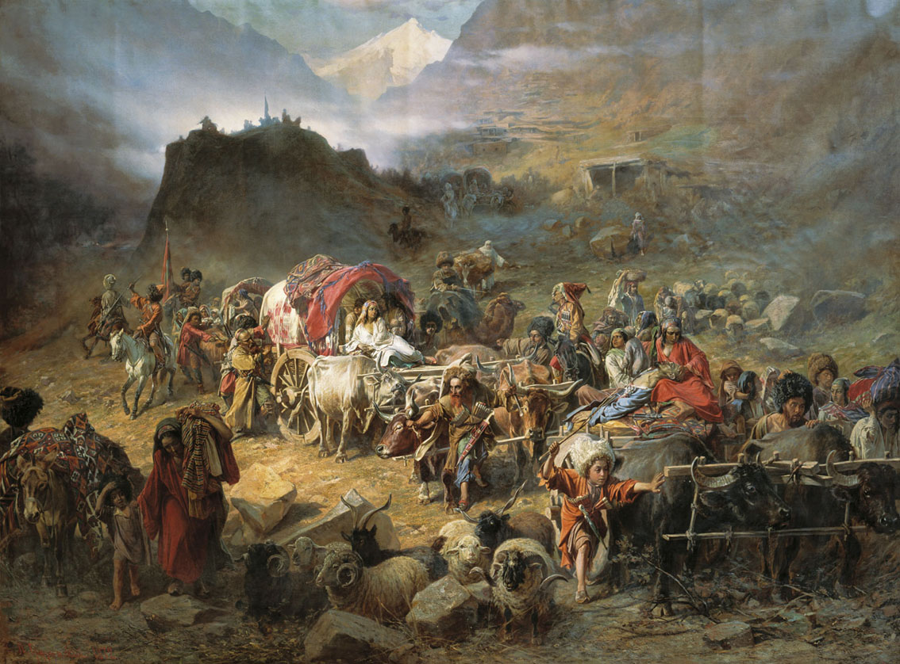
|
Çeçen-İnguşların Osmanlıya göçünü konu alan, Rus ressam GRUZİNSKİY'e ait “Dağlıların aullarını terk edişi” adlı eser. |
Работа русского художника ГРУЗИНСКОГО «Пустошь горцев» посвящена иммиграции чечено-ингушей в Османскую империю. |
|
1865 yılında Osmanlı topraklarına, 25.057 kişiden oluşan yaklaşık beş bin Çeçen- Inguş ailesi göç etmişti. Çeçen-İnguşların göçü öncesinde Rusların yoğun propaganda ve kandırma faaliyetleri gözlenmiş, Osmanlı topraklarındaki din kardeşlerinin kendilerine çok güzel evler, topraklar tahsis ettikleri ve Osmanlı hünkârının kendilerini çağırdığına dair sahte el ilanları dağıtılarak göç teşvik edilmişti. Göçe zorlanan aileler genellikle Rusya’yı fikren tehdit edebilecek okumuş aydınlar ve üretime katkıda bulunan sanatçı-zanaatçı kişilerden oluşuyordu. |
В 1865 году примерно пять тысяч чечено-ингушских семей численностью 25 057 человек иммигрировали на османские земли. До чечено-ингушской миграции русские наблюдали за интенсивной пропагандой и обманом, а иммиграция поощрялась распространением фальшивых листовок о том, что религиозные братья и сестры на османской земле выделили себе очень красивые дома и земли и что османский султан называл их. Семьи, вынужденные мигрировать, часто были образованными интеллектуалами, которые могли интеллектуально угрожать России, и художниками-ремесленниками, которые участвовали в производстве. |
|
Çeçenlerin göçe teşvik edilmesinde, kendisi de Osmanlı topraklarına göçen ve Osmanlı ordusu hizmetine giren General Musa Kundukhov’un yoğun çalışmalarının etkisi de olmuştu. Çeçen-İnguşların bu büyük göçünden önce ve sonra da az sayıda münferit göçleri olmuştu. Ancak göç eden Çeçen-Inguşların sayısı aynı dönemde Osmanlıya göç eden diğer Kafkas Halklarının (özellikle de Çerkeslerin) sayılarının yanında çok az kalmıştı. |
Интенсивная работа генерала Мусы Кундухова, который сам эмигрировал на османские земли и поступил на службу в османскую армию, также повлиял на поощрение чеченцев к миграции. До и после этого великого переселения чечено-ингушей было небольшое количество индивидуальных миграций. Однако количество чечено-ингушских эмигрантов было очень низким по сравнению с количеством других кавказских народов (особенно черкесов), иммигрировавших в Османскую империю в тот же период. |
|
Çeçenlerin ünlü yazarı Abuzar Aydemirov tarafından yazılan ve Ali Bolat tarafından Türkçeye de çevrilen ”YEXA BÜYSANAŞ (Uzun Geceler)” adlı eserde bu göçün hikayesi anlatılır. Son dönemlerde erişime açılan Osmanlı arşivlerinde kısmi belgeler olsa da, göç esnasındaki sayıları ve göçmenlerin isimlerini muntazam kaydeden belgelere ise henüz ulaşılamamıştır. |
История этого переселения рассказана в произведении «YEXA BÜYSANA (Долгие ночи)», написанном известным чеченским писателем Абузаром Айдемировым и переведенном на турецкий язык Али Болатом . Хотя в османских архивах есть частичные документы, которые были открыты для доступа недавно, документы, в которых регулярно записываются номера во время миграции и имена иммигрантов, еще не получены. |
|
Bu konuda daha geniş bilgi için bakınız; |
Для получения дополнительной информации об этом см: |
|
Ali Bolat., “Çeçenlerin Göçü”, YİTİK KULE/Çeçen Kültür Yıllığı 2012/ S.1, sayfa 25-29, İstanbul 2012. |
Али Болат., «Миграция чеченцев», LOSS TOWER / Chechen Culture Yearbook 2012 / стр.1, страницы 25-29, Стамбул 2012. |
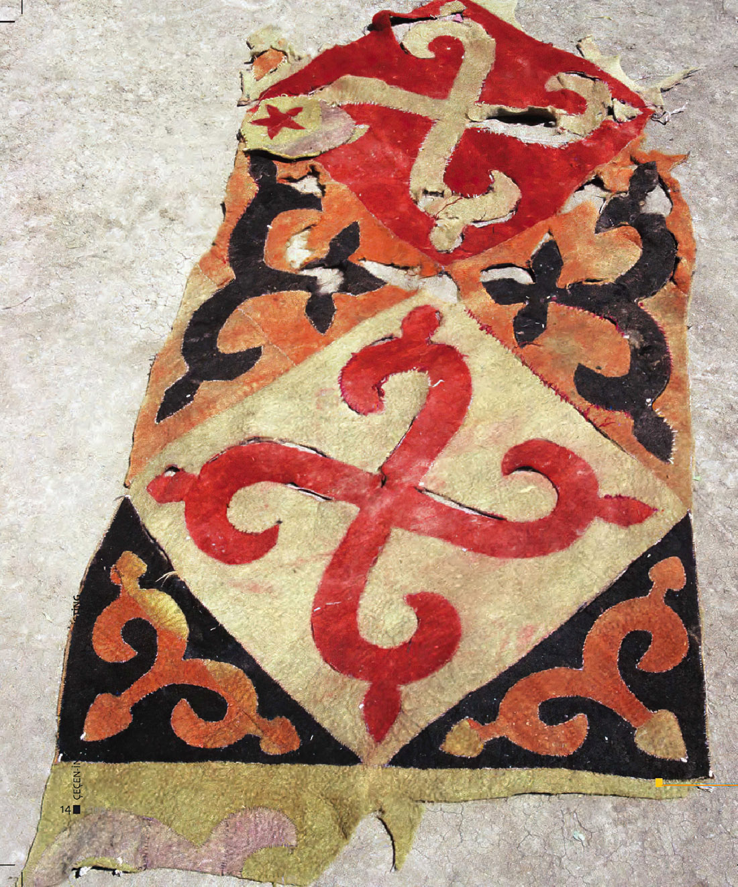
|
Sivas / Kangal (Uzunyayla) bölgesinde Yarasar köyünde tespit edilmiş “svastika-gamalıhaç” ana motifli eskimiş keçe parçası. 1988 |
Старинный войлочный кусок с главным мотивом «свастика-свастика», найденный в селе Ярасар в районе Сивас / Кангал (Узуньяйла). 1988 г. |
TANIM |
ОПРЕДЕЛЕНИЕ |
İSTİNG (İSTANG) / KEÇE |
ИСТИНГ (ИСТАНГ) / ВОЙЛОК |
|
Türkçe sözlüklerde keçe kelimesi çeşitli ifadelerle açıklanır. ”1. Yapağı veya keçi kılının dokıınmadan, yalnızca dövülmesiyle elde edilen kaba kumaş. 2.Bu kumaştan yapılmış olan: Keçe külah; keçe çadır. 3. Yere serilen halı; kilim gibi yünlü döşemelik” (2) . Bu kelimeyi, keçe ile uğraşan yerel kaynaklar da benzer biçimlerde açıklamaktadırlar: ”Keçe, yapağı veya keçi kılının dürülüp kuvvetlice basılması veya dövülmesi ile elde edilen, kepenek; çarık, külah ve döşeme örtüsü gibi şeylerin yapımında kullanılan dokunmamış kaba kumaştır”. Ansiklopedik tanımlarda ise bu maddenin teknik özellikleri açısından izahına çalışıldığı görülür: ”Hayvansal tekstil elyafı olan yün elyafının bükme ve dokuma işlemleri yapılmadan birbirine bağlayarak sağlam, bükülgen bir kumaş meydana getirme işlemi”(3). Bu kelimenin en bilimsel açıklamasını ise konu ile ilgilenen akademisyenler yapmaktadır: ”Koyun, tavşan, deve, lama gibi hayvanların yünleri ile tiftik keçisinin kıllarının su, sabun ve ısı yardımıyla oluşturulan alkali bir ortamda liflerinin birbiri arasına girmesi ile elde edilen atgısız-çözgüsüz sıkıştırılmış tekstil örneğidir” (4). |
В турецких словарях слово «войлок» объясняется различными выражениями. ”1. Из козьей шерсти или шерсти доким — это только грубая ткань, полученная молотком. 2. Изготовлено из ткани: войлочный конус; войлочная палатка. 3. Серия Формы I; обивка, такая как шерстяной коврик »(2). Этот термин относится к местным ресурсам, задействованным в войлоке, который иллюстрируют аналогичным образом:«войлок, флис или полученный из козьей шерсти сложен или сильно отжат Фрезерование, кепенек; Это грубый нетканый материал, используемый для изготовления таких вещей, как сандалии, конусы и обивка». В энциклопедических определениях видно, что эта статья объясняется с точки зрения его технических характеристик:«Процесс формирования прочной, гибкой ткани путем соединения шерстяного волокна, которое является животным текстильным волокном, без изгиба и плетения» (3). Наиболее научное объяснение этому слову дано академиками, интересующимися этой темой: «Шерсть таких животных, как овцы, кролики, верблюды, ламы и шерсть ангорской козы получается путем переплетения волокон в щелочной среде, созданной с помощью воды, мыла и тепла . — пример сжатого текстиля без лент»(4). |
|
Kafkasya'da keçenin kelime karşılığı olarak Çeçen-İnguş dilinde ”İsting/istang ”(5), Avarca'da ”Burtina”, Abhazca ve Adige'cede ”Vupşa”, Osetce'de ”Nımeat” ve Karaçayca'da ”Kiyiz” sözcükleri kullanılır. Renkli keçe yaygı anlamında ”Gorz İsting” (:alacalı-renkli keçe) kelimesi Çeçencede ayrıca karşımıza çıkmaktadır (6). Osetce'de keçe karşılığı kullanılan ”Nımeat” kelimesi, oset dil grubunun ailesinden olan Farsça daki ”Namda” veya ”Namad” kelimesinden gelir ve İngilizcede nakışlı keçe yaygılar için kullanılan ”Numdah” kelimesi ile aynı köken birliğine sahiptir. Karaçay dilinde keçe karşılığı kullanılan ”kiyiz” kelimesi ise Türkçe'de, keçe kelimesinden çok daha eski zamanlara ait olan ve aynı anlama gelen başka bir sözcük; ”Kidhiz” kelimesinden gelmektedir. |
Слова «Истинг / истанг» (5) на чечено-ингушском языке, «Буртина» на аварском языке, «Вупса» на абхазском и адиджеском, «Нымеат» на осетинском и «Кийиз» на карачаевском, как слово «войлок» на Кавказе. используемый. Слово «Gorz İsting» (пестрый войлок), означающее цветной войлочный коврик, также встречается в чеченском языке (6). Слово «Нимеат», которое используется для обозначения войлока по-осетински, происходит от слова «Намда» или «Намад» на персидском языке, семейства осетинской языковой группы, и имеет такое же своеобразие, как слово «Нумдах», используемое для вышитых войлочных циновок на ингушском языке. Слово «кийиз», которое используется для обозначения войлока на карачаевском языке, — это еще одно турецкое слово, которое относится к гораздо более древним временам и имеет то же значение; Оно происходит от слова «кидхиз». |
|
(2) Türk Dil Kurumu Türkçe Sözlük, cilt:2, Ankara 1992,s.827. |
(2) Turkish Language Association Turkish Dictionary, vol: 2, Ankara 1992, p.827. |
|
(3) LAROUSSE, cilt:7, İstanbul 1978. |
(3) LAROUSSE, том: 7, Стамбул, 1978. |
|
(4) TOPBAŞ-SEY1RC1., “Keçe Sanatı ve Afyon’da Keçecilik”, Beldemiz, S.9, Afyon 1987, s.10. |
(4) TOPBAŞ-SEY1RC1., «Искусство войлока и изготовление войлока в Афьоне», Beldemiz, S.9, Afyon 1987, стр.10. |
|
(5) Çeçen dilinde “keçe’’ karşılığı kullanılan bu kelimeyi fântazi bir deneme olarak etimolojik açıdan şu şekilde inceleyebiliriz: Bilindiği üzere Çeçence’de “Is: dokuz”, “Ding: yapılan” anlamına gelmektedir. Buna göre isding-isting birleşik bir kelime olarak, “dokuz yapılan” veya “dokuz kez yapılan” anlamına gelen bir kelime olarak “keçe” karşılığı kullanılmaya başlamış olabilir. Burada sayı verilerek yapımdan bahsedilmesi ile keçenin yapılış metodu arasındaki benzerlik bizde bu kanıyı uyandırmaktadır. |
(5) Мы можем исследовать это слово, которое используется для обозначения «войлока» в чеченском языке, как этимологический эксперимент как фантастическое эссе: Как известно, «Is: девять» означает «Ding: done» на чеченском языке. Как слово, оно могло использоваться для обозначения «войлока» как слова, означающего «сделано девять раз» или «сделано девять раз». Такое впечатление производит на нас сходство между упоминанием о изготовлении посредством числового обозначения и методом изготовления войлока. |
|
(6) Bu kelime, Çeçenistan’a 13.Yüzyılda istila hareketlerinde bulunan Moğolların diline de geçmiştir. Kaynaklarda Moğol dili uzmanları tarafından bilinmeyen ancak tahmin yürütülerek anlamı belirtilen, ufak parçalardan dikilmiş bir kürk çeşidine Moğolca “İçidung carhah” denilmektedir. Bknz. Moğolların Gizli Tarihi., Ankara 1996, s.214. Çeçenlerin yaptığı keçe yaygılarda genellikle küçüklü büyüklü parçaların birbirlerine dikilerek kullanıldığını hatırlarsak bu kelime ile olan benzerlik daha çok açığa çıkmakta ve tahminimizi destekler görünmektedir. |
(6) Это слово также используется в языке монголов, вторгшихся в Чечню в 13 веке. Тип меха, который не известен знатокам монгольского языка, но о значении которого говорят догадки, сшитый из небольших кусочков, на монгольском языке называется «İçidung carhah». Увидеть. Тайная история монголов., Анкара, 1996, с.214. Если вспомнить, что войлочные циновки, которые изготавливают чеченцы, обычно используются для пришивания маленьких и больших частей друг другу, сходство с этим словом становится более очевидным и, кажется, подтверждает нашу догадку. |
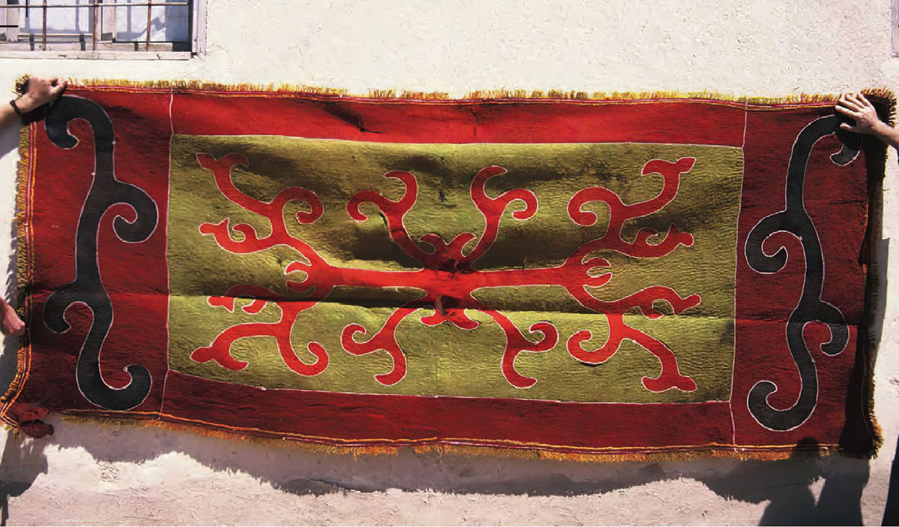
|
Üstte: Sivas / Kangal (Uzunyayla) bölgesi Yukarıhüyük köyünde tespit edilmiş çok eski çeçen yaygı keçesi. 1988 |
Очень старый чеченский коврик из войлока, найденный в селе Юкарихююк в районе Сивас / Кангал (Узуньяйла) . 1988 г. |
|
1253 yılında Tatar diyarı Deşt-i Kıpçak'tan geçen Rubruck adlı seyyah, bozkırlarda görmüş olduğu çadırlarda kullanılan keçe örtülere ”Kijiz”, keçeden üretilmiş kilimlere ise ”Kövüz” denildiğinden bahsetmektedir(7). Kaşgarlı Mahmut, ”keçe” ile yere serilen halı, kilim gibi eşyaları birbirinden kesin olarak ayırmıştır. Kaşgarlı'ya göre KİDHİZ ”keçe'' demektir. KİVİZ, KİW1Z ise halı ve kilim gibi yerlere serilen eşyaların genel adıdır (8). Görüldüğü üzere bu iki kelime birbirlerine çok benzemelerine rağmen aralarında anlam bakımından açık bir ayrılık bulunmaktadır. |
Путешественник по имени Рубрук, прошедший через татарскую землю Дешти-Кипчак в 1253 году, упоминает, что войлочные покрывала, которые использовались в палатках, которые он видел в степях, назывались «Киджиз», а ковры из войлока назывались «Кевуз» (7). Кашгарлы Махмут четко различал «войлок » и такие предметы, как ковры и коврики, лежащие на полу. Согласно Кашгарлы, KİDHİZ означает «войлок». KİVİZ, KİW1Z — это общее название предметов, которые кладут на такие места, как ковры и коврики (8). Как видно, хотя эти два слова очень похожи друг на друга, между ними существует четкое различие в смысле значения. |
|
Halı ve kilim karşılığı kullanılan Kiviz-Kiwiz” kelimeleriyle benzerlik taşıması açısından burada bahsedilmesi gereken bazı sözcüklere; M.Ö.900-600 yıllan arasında Anadolu'nun doğu bölgelerinde hakimiyet kuran Huni ve Urartu'larda da tesadüf edilmektedir. Buna göre Urartu'lar ”kuzu” kelimesini halı karşılığı kullanmaktaydı. Benzer bir kelime olan ”kuuz” veya ”kuz” kelimesi günümüzde Çeçen dilinde de ”Halı” anlamına gelmektedir. Bilindiği üzere son yıllarda yapılan araştırmalar sonucunda Hurri ve Urartu dili ile Kuzeydoğu Kafkas Dilleri özellikle de Çeçen-İnguş dili arasındaki benzerlik bilimsel olarak kesinleşmiş bulunmaktadır (9) . |
Некоторые слова, которые следует упомянуть здесь, с точки зрения сходства со словами кивиз-кивиз, которые используются для ковров и ковровых покрытий, также встречаются в Хуни и Урарту, которые доминировали в восточных регионах Анатолии между 900-600 годами до нашей эры. Слово «кузу» или «куз», которое является аналогичным словом, теперь на чеченском языке означает «ковер». Как известно, в результате последних исследований, хурри и урарту, а также северо-кавказские языки, особенно чечено-ингушский. Сходство между ними было научно подтверждено (9). |
|
Keçe üreten hemen her toplumda kendi özgün anlamını ifade eden ”keçe” karşılığı bir kelime bulunur, bu malzemenin aynı zamanda çok eski bir geçmişe dayanan yaygın kullanım alanlarının olduğunun da bir göstergesidir. |
Почти в каждом обществе, производящем войлок, есть слово «войлок», которое выражает его первоначальное значение.Этот материал также указывает на то, что у него есть широко распространенные области использования, восходящие к очень давнему прошлому. |
|
(7) Mustafa SAFRAN., Yaşadıkları Sahalarda..., Ankara 1993, s.107. |
(7) Мустафа САФРАН., На полях, в которых они живут…, Анкара, 1993, с.107. |
|
(8) KAŞGARLI MAHMUT, Divanü Lügat-it Türk Dizisi., I.166. |
(8) КАГАРЛИ МАХМУТ, Divanü Lügat-it Türk Series., I.166. |
|
(9) Ali M.DİNÇOL-Belkıs DİNÇOL, ”Eskiçağda Doğu Akdeniz Havzası ve Anadolu'da Diller ve Yazılar”, Boğazköy'den Karatepe'ye Hitit bilim ve Hitit Dünyasının Keşfi, Yapı Kredi Kültür Sanat Yay. İstanbul 2001,s.27 ve 37. |
(9) Али М. ДИНЦОЛ-Белкис ДИНЦОЛ, «Языки и письменность в бассейне Восточного Средиземноморья и Анатолии в древности», Хеттская наука и открытие хеттского мира от Богазкёя до Каратепе, Паб Япы Креди Кюлтюр Санат. Стамбул 2001, стр.27 и 37. |
TARİHÇE |
ИСТОРИЯ |
|
Insanoğlunun bilinen tarihin ilk dönemlerinden beri koyun ve keçi gibi küçükbaş hayvanları evcilleştirerek, bunların yün ve kıllarından ilk tekstil elyaflarını elde ettikleri yapılan son araştırmalarda kesinleşmiş bulunmaktadır. Buna göre birçok araştırmacı yün elyaflarının yazılı tarihlerden çok önceleri sosyal hayatta ihtiyaç duyulmaya başlanan eşyalara dönüştürüldüğü konusunda hem fikir görünmektedir. Bu eşyaların arasında bulunan ve elyafın eğrilerek kumaş haline getirilmesi (10) ile oluşan tekstil örnekleri dikkate alındığında, nerede ve nasıl üretildiği tam olarak bilinmese de ilk örneğin, kumaştan daha basit bir üretim süreci bulunan ”keçe” olduğu kanaati oldukça yaygın bir kabul görmektedir (11) Bazı bilimadamları, tekstilin ilk primitif örneği olan keçe ve keçeciliğin dünyanın her kültür çevresinde görülen bir gelenek olmadığını ileri sürerken bu sanatın doğabilmesi için başlıca iki önemli şartın ortaya çıkmış olması gerektiğini belirtirler. Bu şartlardan birincisi ”hayvancılık ve koyunculuğun gelişmiş olması”, İkincisi ise ”keçeden yapılmış ev eşyaları ile keçe giyimlerin doğuşunu gerektiren iklim ve hava durumunun varolması” dır (12). Her sanatın bir yayılış sahası olduğunu söyleyen başka bir bilimadamı ise, ”bilhassa el sanatlarının birbirlerinden bağımsız ve habersiz olarak doğup, ayrı bölgelerde ayrı ayrı gelişebilmekte, esasında oranın iklim şartlarına ve ürünlerine uygun el sanatları doğmaktadır”(13) derken bu ürünün üretimine ait akılcı bir yaklaşım ortaya koyar. |
Это было подтверждено в последних исследованиях, что человечество получило первые текстильные волокна из их шерсти и волос, одомашнивание мелких животных, таких как овцы и козы с первых периодов известной истории. Соответственно, многие исследователи, похоже, согласны с тем, что волокна шерсти превратились в предметы, которые были необходимы в общественной жизни задолго до письменной истории. Рассматривая образцы текстиля, сформированные путем прядения волокон в ткань (10) среди этих предметов, точно не известно, где и как он был произведен, но широко распространено мнение, что первым примером был «войлок», который имеет более простой производственный процесс, чем ткань (11) Некоторые ученые утверждают, что производство войлока и войлока, которое является первым примитивным примером текстиля, не является традицией, наблюдаемой во всех культурных кругах мира, и заявляют, что для зарождения этого искусства должны были возникнуть два важных условия. Первое из этих условий: «животноводство и овцы должны быть улучшены», второе — «климат, требующий увеличения износа войлоков и предметов домашнего обихода из войлока, а также наличия погоды и «d» (12). Он сказал, что все искусство является областью распространения, в то время как другой ученый, «рожденный отдельными ремеслами независимо и не знающий друг друга, может развиваться отдельно в разных регионах, на основе скорости климатических условий и продуктов, рождаемых в соответствующих ремеслах» (13), а затем рациональное производство этого продукта раскрывает подход. |
|
Keçe malzeme ile üretilmiş eserler, eski çağlardan günümüze ulaşan birçok arkeolojik kalıntının aksine, inanılmaz istisnai örnekler olarak çok az sayıda ulaşmıştır. Bu nedenledir ki, keçenin tarihsel gelişimi hakkındaki açıklamalar keçe malzemelerden çok, arkeolojik veri olarak günümüze ulaşan taş, metal, seramik gibi yüzeyler üzerine yapılmış resim, heykel, rölyef gibi kalıntılardan yararlanılarak yapılmaktadır. Birçok araştırmacı bu tür arkeolojik verilerin incelenmesi sonucunda keçenin tarihsel ge işimi hakkında tahmini yargılarda bulunmuşlardır. |
В отличие от многих археологических находок древних времен, артефакты, сделанные из войлока, сохранились как невероятно исключительные образцы. По этой причине объяснения исторического развития войлока сделаны с использованием археологических данных, таких как картины, скульптуры и рельефы, сделанные на таких поверхностях, как камень, металл и керамика, а не на войлочных материалах. Многие исследователи сделали прогнозные суждения об историческом развитии войлока в результате изучения таких археологических данных. |
|
Buna göre arkeolojik yardımcı verilerden yararlanarak, keçenin ilk izleri Neolotik Çağa kadar uzandırılmaktadır. Anadolu'da Konya ovasında bulunan ve M.Ö.6500-5650 yıllarına tarihlenen Çatalhöyük katmanlarının duvar resimlerinde kuvvetli bir ihtimal olarak keçe aplikeleri andıran çizimlerin bulunmuş olması bu iddiaları doğrular görünmektedir. Çatalhöyük’te koyun ve keçinin beslenmesi, odaların tabanlarının yaygılarla örtülü olması, aşı boyasının ve diğer boyaların bilinmesi ve kullanılması, belki de en önemlisi: XI. Tabakadan çıkan iyi kaliteli ince (büyük ihtimalle yün olan) dokuma parçalarının bulunmuş olması gibi veriler dikkate alındığında Çatalhöyük sakinlerinin keçeyi bildikleri kuvvetle muhtemel görünmektedir. Boğazköy (Hattutaş) yakınlarındaki Yazılıkaya'da görülen kabartma figürlerin başındaki sivri külahlar ile mühürlerde ve diğer tasvirlerde görülen başlıkların görünüşleri ve şekilleri itibariyle keçeden yapılmış oldukları ileri sürülmektedir (14). Buna göre Hititlerin kabartmalarında betimlenen tanrı ve soyluların başlarında bulunan ve Mevlevi sikkeleri ile Osmanlı keçe başlıklarına da benzetilen serpuşların keçe olması kuvvetli bir ihtimal olarak görünmektedir. Araştırmacılar bu iddiaları daha da kuvvetle savunarak; Hititlerin kullandıkları aynı başlıkların daha sonraki çağlarda biçim değiştirerek Frig başlığı olarak göründüğünü ve bunların en güzel örneklerinin Afyon Müzesindeki Tanrı-Kral heykelinin başındaki başlık olduğunu ileri sürerken Hitit ve Asur yazılı kaynaklarında keçe sözcüğünün henüz çözülmemiş olduğunu da belirtmektedirler (15). Benzer varsayımlar, Mezopotamya'da Hammurabi devrine ait bir bulle üzerindeki kenarı yukarı dönük bir şapka giyen Amurru tasviri için de yapılmaktadır. Keçe sanatı hakkındaki araştırmalarıyla tamnan Burkett de aynı teknik yaklaşımda bulunarak keçenin tarihlendirilmesi üzerine çeşitli görüşler ileri sürmekte, İran'da Persepolis antik kentini süsleyen duvar kabartmalarındaki Ahamenid askerlerinin keçe başlıklar giydiğini belirtmektedir (16). |
Соответственно, первые следы войлока восходят к эпохе неолита с использованием археологических данных. Тот факт, что рисунки, напоминающие аппликации из войлока, были обнаружены на настенных росписях слоев Чатал-Хююк, датируемых 6500-5650 гг. До н.э. в Анатолии на равнине Конья, похоже, подтверждает эти утверждения. Кормление овец и коз в Чатал-Хююке, покрытие полов в комнатах циновками, знание и использование охры и других красителей, возможно, самые важные: XI. Учитывая такие данные, как обнаружение тонких тонких (вероятно, шерстяных) кусочков ткани из листа, кажется весьма вероятным, что жители Чатал-Хююка знали войлок. Предполагается, что заостренные конусы на головах рельефных фигур из Язылыкая возле Богазкёя (Хаттуташ), а также головы на печатях и других изображениях по внешнему виду и форме сделаны из войлока (14). Соответственно, весьма вероятно, что кропы, найденные на головах богов и знати, изображенных на рельефах хеттов и похожие на монеты Мевлеви и османские войлочные шапки, были войлочными. Исследователи отстаивают эти утверждения еще сильнее; Они утверждают, что те же самые капители, которые использовались хеттами, изменили форму в более поздние века и стали фригийскими капителями, и что наиболее красивыми примерами из них были головные уборы на голове статуи Бога-царя в Афионском музее, и что слово, которое ощущается в хеттских и ассирийских письменных источниках, еще не решено (15). Аналогичные предположения сделаны для изображения Амурру в перевернутой шляпе на булле времен Хаммурапи в Месопотамии. Беркетт, хорошо известный своими исследованиями в области войлочного искусства, использует тот же технический подход и выдвигает различные мнения о датировке войлока и заявляет, что ахеменидские солдаты на настенных рельефах, украшающих древний город Персеполь в Иране, носили войлочные шапки (16). |
|
Keçe ile ilgili yazılı ifadelere ilk kez, M.Ö.850 yıllarında yaşayan ünlü şair Homerosün İlyada adlı manzum eserinde tesadüf etmektedir; M.Ö. 1200-1100 yıllarında yapılan Troya Savaşlarının anlatıldığı bu eserinde ”keçe” sözcüğü yazılı olarak geçmektedir. Homeros'un İlyada isimli eserinde geçen satırlardan, o çağlarda keçenin bir yalıtım malzemesi olarak savaş başlıklarının içinde kullanıldığı anlaşılmaktadır (17). Eski Yunan yazarlarından M.Ö.450 yıllarında yaşayan Heredot 'un ünlü tarih kitabında da ”keçe” ile ilgili bilgilere tesadüf edilmektedir. Heredot Tarihinde M.Ö.480 Yıllarında Yunan Seferine çıkan Pers Kumandanı Kserkes'in farklı milletlerden oluşan federe ordusundaki askeri kıyafetler anlatılırken, Pers askerlerinin başlarına Tiara dedikleri yumuşak keçe başlık taktıklarından bahsedilmektedir (18) |
Письменные утверждения о войлоке впервые встречаются у известного поэта Гомера «Илиада», жившего около 850 г. до н.э .; ДО Н.Э. Слово «войлок» написано в этом произведении о Троянских войнах 1200–1100 годов. Судя по строкам из «Илиады» Гомера, можно понять, что в те времена войлок использовался в качестве изоляционного материала внутри боеголовок (17). В известной книге по истории Геродота, жившего около 450 г. до н.э., одного из древнегреческих писателей, встречается информация о «войлоке». В истории Геродота, когда персидский полководец Ксеркес, отправившийся в греческую экспедицию в 480 г. до н.э., описывает военную одежду в федеральной армии, состоящей из разных народов, упоминается, что персидские солдаты носили головной убор из мягкого войлока, который они называли Тиара (18). |
|
(10) Eski Mısır, Mezopotamya ve Yunanda evlerde el eğirmesi ve el dokuması yapıldığı bilinmektedir. Bu konuda daha geniş bilgi için bknz: Emre D ÖLEN.,Tekstil Tarihi, İstanbul 1992, s. 123. |
(10) Известно, что ручное прядение и ручное ткачество производились в домах Древнего Египта, Месопотамии и Греции. Для получения дополнительной информации по этому вопросу см .: Emre D ÖLEN. Textile History, Istanbul 1992, p. 123. |
|
(11) Hikmet GÜRÇAY, ”Keçe ve Keçecilik”, T.E.D., Ankara 1967, s.22. |
(11) Хикмет ГЮРГАЙ, «Войлок и изготовление войлока», TED, Анкара, 1967, стр.22. |
|
(12) Bahettin ÖGEL., Türk Kültür Tarihine Giriş, Cilt 3, s. 175 |
(12) Bahettin ÖGEL., Introduction to Turkish Cultural History, Vol. 3, p. 175 |
|
(13) GÜRÇAY,age, 21-22. |
(13) GÜRÇAY, выше, 21-22. |
|
(14) GÜRÇAY., a.g.e., 22. |
(14) GÜRÇAY., Supra, 22. |
|
(15) TOPBAS, SEYİRCİ., ”Keçe Sanatı ve Afyonda..”, a.g.e.,s. 10. |
(15) TOPBAS, SEYİRCİ., «Искусство войлока и опиум…», выше, стр. 10. |
|
(16) BURKETT., The Art of the Felt Maker, Kendal, 1979, s. 18. |
(16) БЕРКЕТ, Искусство изготовления войлока, Кендал, 1979, с. 18. |
|
(17) HOMEROS., İlyada, 10.Bölüm/260, İstanbul 1981, s.266 |
(17) HOMEROS., Илиада, Глава 10/260, Стамбул 1981, стр. 266 |
|
(18) Heredot Tarihi., V11.61, İstanbul I991,s.334. |
(18) Heredot History., V11.61, Istanbul I991, p.334. |
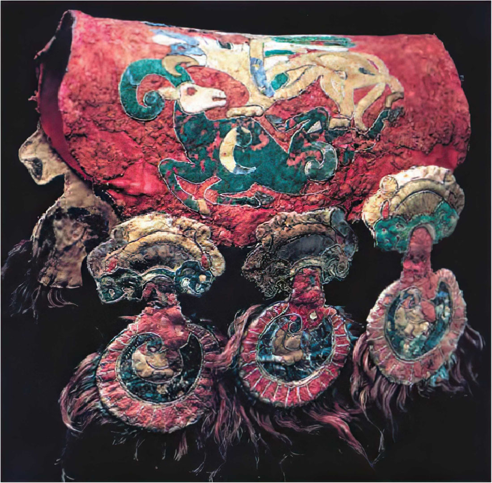
|
Altay Dağlarında, ı.Pazırık kurganından çıkarılmış keçeden yapılmış aplike eğer örtüsü. |
В Горном Алтае накидку из фетра сняли с кургана И. Пазырык. |
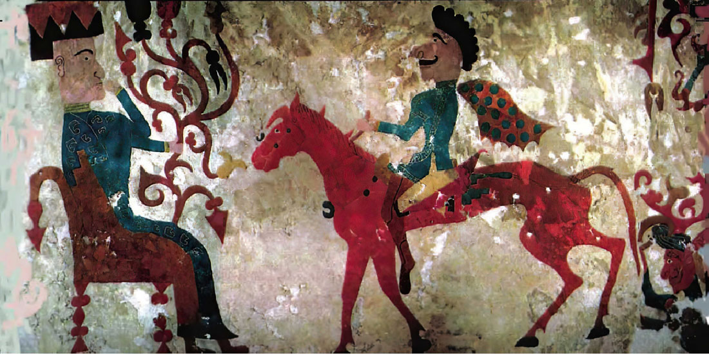
|
5.Pazırık kurganında bulunmuş, aplike tekniğinde yapılmış ”Oturan ilahe ve atlı” figürlerinin yer aldığı büyük keçe yaygından bir parça. |
5. Кусок большого войлока с фигурами «сидящего божества и коня», найденный в технике аппликации, найден в паза кургане . |
|
Milattan önceki yıllarda Kafkaslarda hakimiyet kuran İskit toplulukları da keçe üreten bir toplumdu. Bu konuda Heredot'un verdiği bilgiler arasında keçenin günlük hayattaki kullanımları açıklanarak bu malzemenin İskitler için taşıdığı önem gözler önüne serilir: Heredot, İskitlerde ”ölü gömme adetleri”içerisinde, keçeden yapılmış sauna çadırlardan da bahsetmektedir (19). Heredot'un çağdaşı Hipokrates'in ”Havalar-Sular ve Mevkiler” adlı eserinde de keçe hakkında bilgilere rastlanılmaktadır. Hipokrates, İskit yaşantısını anlatırken; Bu halkın arabalarda yaşadıklarını, arabaların üstlerinin ise keçelerle kaplı olduğunu belirterek; arabaların bazılarının iki veya üç odalı olduğunu, örtü olarak kullanılan keçelerin yağmura kara ve yele karşı iyi bir korunak olduğunu bildirmektedir (20). |
Скифские общины, господствовавшие на Кавказе в годы до нашей эры, также были обществом, производившим войлок. Среди сведений, предоставленных Геродотом по этому поводу, объясняется использование войлока в повседневной жизни и раскрывается важность этого материала для скифов: Геродот также упоминает банные палатки из войлока в «погребальных обычаях» у скифов (19). Информация о войлоке также содержится в произведении Гиппократа, современника Геродота, под названием «Гавалар-Воды и места». А Гиппократ рассказывает о скифской жизни; Утверждается, что эти люди живут в автомобилях, их крыши покрыты войлоком; Он сообщил, что в некоторых машинах было по две или три комнаты, и что циновки, используемые в качестве укрытия, были хорошим укрытием от дождя, снега и гривы (20). |
|
Keçe ile ilgili yazılı ifadelere Eski Çin kaynaklarında da rastlanılmaktadır. M.Ö.230 yıllarına ait Çin kaynaklarında anlatılan, Orta ve Doğu Asya'da geçen eski savaşlarda keçe kalkanların ve keçe botların askerler tarafından kullanıldığı belirtilmektedir (21). Dünyada keçe sanatının tarih boyunca en yaygın ve zengin çeşitleriyle uygulandığı bölge şüphesiz ki eski Çin kaynaklarında ”Keçe Diyarı” olarak adlandırılan, eski savaşların geçtiği Macaristan'dan Doğu Çin'e kadar uzanan geniş bozkırlardır. Urallann ikiye ayırdığı bu bölgeler gerek iklim gerekse hayat şartları açısından keçe için daima uygun bir ortam oluşturmuştur. Bu bozkırlarda yaşayan birçok eski topluluk keçe malzemeyi çok geniş bir alan içerisinde ve çok farklı amaçlarla kullanmışlardır. Eski bozkır uygarlıklarına ait olan bazı kurgan tipi mezar kalıntıları arasında keçe ile yapılmış el sanatı örnekleri günümüze ulaşmıştır. İçerisinden etnoğrafik ve tarihi değeri çok yüksek keçe buluntular da çıkan mezarların bilimsel açıdan ilk keşfi, 1865 yılında Berel ve Katanda bölgelerinde arkeolojik kazılar yapan Radloff tarafından gerçekleştirilmişti. Türkçe ”kökü korumak” fiilinden gelen ve kısaca ”Kurgan” denilen bu mezarlar, 1925 yılında Kozloffun Noin-Ula kazısı ile dünya bilim ve sanat çevrelerince büyük bir ilgi çekmişti(22) . Bazı kurganların ahşap iç duvarları keçe yaygılarla kaplanmıştı. Aslında, Karadenizin kuzeyinden başlayarak Kafkasya'yı da içerisine alan bir hat boyunca Çin sınırına kadar uzanan bölgede binlercesi bulunan bu tür mezarlar, insanlar için hiç de bilinmedik bir şey değildi. Özellikle mezarların amansız hazine avcıları-soyguncular tarafından çok iyi bilinmesi nedeniyle yüzlercesinin soyularak tahrip edilmesi, eski devirlerden beri olağan hadiselerdi. Hatta, Pazırık ta bulunan mezarlar da bu soygunlardan çokça nasibini almıştı. Avrasya bozkırlarında bulunan bütün bu eserlerin Rus hazinesi olarak korunması amacıyla 1718 yılında Çar (Deli)Petro tarafından çıkarılan bir kararname ile ”Topraktan ve sudan çıkarılan eski yazıtların silahların, çanak çömleğin ve eski olağandışı şeylerin toplanması” sadece resmi kişilerin denetimine verilmişti. Bu amaçlarla ilk kez bilimsel anlamda arkeoloji kazısı, Ruslar tarafından 1763 yılında bugünkü Ukrayna topraklarındaki Elizavetgrad (Kirovograd) yakınlarında yer alan bir İskit kurganına yapılmıştı (23). |
Письменные высказывания о войлоке также встречаются в древнекитайских источниках. В китайских источниках 230 г. до н.э. говорится, что войлочные щиты и валенки использовались солдатами во время древних войн в Средней и Восточной Азии (21). Регион в мире, где искусство войлока практиковалось с самыми распространенными и богатыми разновидностями на протяжении всей истории, несомненно, является обширными степями, называемыми в древнекитайских источниках «Землей войлока», простирающимися от Венгрии, где происходили старые войны, до Восточного Китая. Эти регионы, разделенные Уралом на две части, всегда создавали подходящую среду для войлока как с точки зрения климата, так и с точки зрения условий жизни. Многие древние общины, жившие в этих степях, использовали войлок на очень обширных территориях и для самых разных целей. Среди остатков некоторых курганных гробниц, принадлежащих старым степным цивилизациям, сохранились образцы ремесленных изделий из войлока. Первое научное открытие гробниц, включающее находки из войлока, имеющие очень высокую этнографическую и историческую ценность, было сделано Радловым, проводившим археологические раскопки в районах Берель и Катанда в 1865 году. Эти гробницы, происходящие от турецкого глагола «защищать корень» и называемые для краткости «курганы», привлекли большое внимание мировой науки и искусства в результате раскопок Козлоффун Ноин-Ула в 1925 году (22). Некоторые курганы имели внутренние стены из дерева, покрытые войлочными циновками. Фактически, тысячи таких гробниц, которые находятся в регионе от севера Черного моря до китайской границы вдоль линии, включающей Кавказ, вообще не были неизвестны людям. Поскольку гробницы хорошо известны безжалостным охотникам за сокровищами-грабителями, разрушение сотен из них путем грабежа было обычным явлением с древних времен. Фактически, гробницы в Пазырыке также пострадали от этих ограблений. Указом царя (Безумного) Петра в 1718 г. о сохранении всех этих артефактов, найденных в евразийских степях, как русских сокровищ, «собрание древних надписей, оружия, глиняной посуды и старых необычных вещей, извлеченных из земли и воды» было передано в распоряжение только чиновников. Для этих целей первые научные археологические раскопки были проведены русскими в 1763 г. на скифском кургане близ Елизаветграда (Кировоград) на территории современной Украины (23). |
|
(19) Heredot Tarihi., IV.B. 73-75, s.212. |
(19) История Heredot., IV.B. 73-75, с. 212. |
|
(20) İlhamı DURMUŞ., İskitler, Ankara t.y., s.7. |
(20) İlhamı DURMU., İskitler, Ankara, p. 7. |
|
(21) DURMUŞ.,a.g.e.,s.l8. |
(21) DURMUŞ., Выше, стр.18. |
|
(22) Nejat DİYARBEKİRLİ, Hım Sanatı., İstanbul 1972, s.99. |
(22) Неджат ДИЯРБЕКИРЛИ, Хым Санат., Стамбул, 1972, стр. 99. |
|
(23) Boris PİOTROVSKY., ”İşkillerin Dünyası”, Unescodan Görüş. S. 12, Aralık 1979, s.5-6. |
(23) Борис ПИОТРОВСКИЙ, «Мир сотрудников», ЮНЕСКО. С. 12, декабрь 1979 г., с. 5-6. |
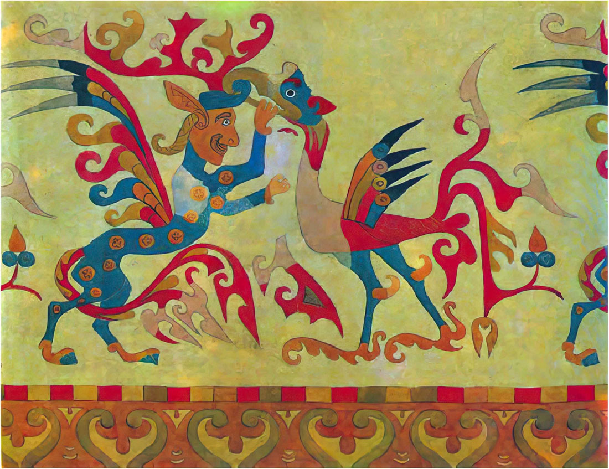
|
5. Pazırık kurganından çıkarılan keçeden yapılmış büyük duvar yaygısında bulunan hayali yaratık figürleri. |
5. Фигуры воображаемых существ, найденные на большом настенном коврике из войлока, извлеченного из кургана Пазырык. |
|
Ortalama bir tarihle M.Ö. 200 ila 100. yıllara ait Pazırık ve Noin-ula kurganlarından çıkan keçe eserler bu alanda arkeolojik olarak bulunan en eski istisnai örneklerdir. 1929 yılında, S.I. Rudenko ve M.P.Gryaznov adındaki Leningrad'lı iki bilim adamı Türklerin anayurdu olarak bilinen bir bölgede, Tanrı Dağlarının kuzey doğusunda yer alan Altay Dağlarının 1600 rakımlı Ulagan vadisinde bulunan ”Pazırık” yaylasında (24) birlikte yürüttükleri kazılar sırasında çok önemli buluntularla karşılaşmışlardı. Pazırık'ta yaklaşık kırk tanesi bir arada olan ve tamamen donmuş durumda bulunan, normal olarak içerisindeki kalıntıların bozulmuş olması gereken (25) kurganlar, konuyla ilgilenen bilim çevrelerince büyük bir ilgiyle karşılandı. Ancak kurgan kazıları ikinci dünya savaşının kapıda olduğu yıllarda, dünyadaki siyasal gelişmeler nedeniyle durdurulmuştu. Savaştan sonra Rudenko, bu sefer yalnız olarak 1947-49 yılları arasında yine aynı yere gelerek dört tane daha donmuş mezar ortaya çıkartmıştı. Bu donmuş mezarlardan, bilim ve sanat çevrelerinde büyük heyecan uyandıran, hepsi yaklaşık 2500 yıl öncesine ait olan halılar, giyim eşyaları ve ayakkabılar, bir tören arabası, mumyalanmış kadın ve erkek cesetleri, süslü ve zengin koşum takımları, donmuş halde atlar ve daha birçok tarihi kıymetine paha biçilemeyen buluntular çıkmıştı. Bu buluntular arasında, bilinen en eski düğümlü halı ile birlikte, konumuzu oluşturan günümüz Kafkas ve Kazak keçeleri ile büyük benzerliklere sahip keçe malzemelerin de bilinen en eski numuneleri de vardı (26). Pazırık Kurganlarının tarihlendirilmesi ve kime ait olduğu konusu bilim çevrelerinde hala tartışılmaktadır. Bu kurganları ortaya çıkaran alimlerden Rudenko başlangıç tarihinin M.Ö. 400 ila 200 yılları arasında olması gerektiği görüşündedir. Potapov'da Rudenko ile aynı görüştedir. Bütün görüş farklılıklarına rağmen bu mezarların en azından M.Ö.II-I. Yüzyıllara ait olduğu görüşü ağırlık kazanmıştır (27). Ayrıca Potapov'a göre bu mezarlar; M.Ö.176 ve 43 tarihli Çin kaynaklarında bu bölgede Uygurların bulunduğu yazıldığına göre ancak Uygurlara ait olabilir. Pazırık'tan çıkan eserlerin bugünkü iç Asya sanatına çok benzemesi de Potapovün dikkatinden kaçmamıştır. Schimitt de aynı görüşü paylaşarak bu bölgenin Türklerin en eski vatanı olduğunu belirtmektedir (28). Pazırık kurganlarının ”Ari” ırkından topluluklara ait olması gerektiğini iddia eden araştırmacılar ise, bu eserlerin İranı dil konuşan İskitlerce yapılmış olduğunu, kurganlardan çıkan halının da İran kökenli veya Ermeni olduğu görüşündedirler. Bu görüşün aksine, başta Kisselev olmak üzere bazı Rus alimleri karşı çıkarak Macaristan ovalarından Altay dağlarının doğusuna kadar uzanan uçsuz bucaksız topraklarda yaşayan insanların sadece ari ırkından İskitler olamayacağını, bu geniş coğrafyada çeşitli toplumları da içerisine alan büyük bir göçebe konfederasyonun olduğunu dolayısıyla Pazırık buluntularının en az Ariler kadar başka topluluklara da ait olabileceğini ileri sürmüşlerdir (29). |
До н.э. со средней датой. Войлочные артефакты из курганов Пазырык и Ноин-ула, датируемые 200–100 гг., Являются старейшими исключительными образцами, найденными археологически в этой области. В 1929 году два ученых из Ленинграда, С.И. Руденко и М.П. Грязнов, обнаружили очень важные находки во время своих раскопок на плато «Пазырик» (24), расположенном в Улаганской долине Горного Алтая на высоте 1600 м над уровнем моря, в регионе, известном как родина турок. Курганы в Пазырыке, которых около сорока вместе и полностью заморожены, обычно остатки которых должны были деградировать (25), вызвали большой интерес со стороны научных кругов, интересующихся этим предметом. Однако раскопки кургана были остановлены в те годы, когда приближалась Вторая мировая война из-за политических событий в мире. После войны Руденко приехал туда один, на этот раз между 1947 и 1949 годами, и раскопал еще четыре замороженных могилы. Из этих замороженных гробниц, ковров, одежды и обуви, церемониального экипажа, мумифицированных трупов мужчин и женщин, богато украшенной сбруи, замороженных лошадей и многих других исторических ценностей, все это вызвало большой интерес в научных и художественных кругах. были найдены бесценные находки. Среди этих находок был самый старый из известных узловатых ковров, а также самые ранние известные образцы войлочных материалов, которые имеют большое сходство с современными кавказскими и казахскими войлоками (26). Датировка пазырыкских курганов и кому они принадлежат до сих пор обсуждаются в научных кругах. Руденко, один из ученых, открывших эти курганы, восходит к нашей эры. Есть мнение, что это должно быть от 400 до 200 лет. Потапов соглашается с Руденко. Несмотря на все расхождения во мнениях, эти гробницы как минимум II-I гг. До н. Э. Набирает вес мнение о том, что это вековая принадлежность (27). Также, по словам Потапова, эти гробницы; Как написано в китайских источниках, датированных 176 и 43 годами до н.э., что в этом регионе есть уйгуры, он может принадлежать только уйгурам. Потапов заметил, что работы из Пазырыка очень похожи на современное интерьерное азиатское искусство. Шимитт придерживается того же мнения и утверждает, что этот регион — древнейшая родина турок (28). С другой стороны, исследователи, утверждающие, что пазырыкские курганы должны принадлежать к общинам «арийской» расы, придерживаются мнения, что эти работы были выполнены персоязычными скифами, а ковры из курганов были иранского или армянского происхождения. Вопреки этой точке зрения, некоторые русские ученые, особенно Киселев, выступали против того, чтобы люди, живущие на обширных землях, простирающихся от равнин Венгрии до восточных гор Алтая, могли быть не только скифами арийской расы, и что существовала большая конфедерация кочевников, в которую входили различные общества в этой обширной географии. Они предположили, что могут принадлежать и к другим сообществам (29). |
|
(24) Bu bölge günümüzde Rusya Federasyonuna bağlı Altay Özerk Bölgesi sınırlan içerisinde kalmaktadır. |
(24) Сегодня этот регион находится в границах Алтайского автономного округа Российской Федерации. |
|
(25) Genel olarak, sürekli bir hava akımına sahip olan veya ”nemin olmadığı kuru ve sıcak çöller”, ”tuz ocakları, ”devamlı don altında kalan ' Permafrost” toprak alt katmanları” gibi oksijenin olmadığı (dolayısıyla bakterilerin de üremediği) belirli ortamlarda tekstil ürünlerinin daha iyi korunduğu bilinmektedir. Daha geniş bilgi için bknz; Elvan ANMAÇ., ”Tarihi Kazmak, Mısırdaki arkeolojik tekstiller” Anadolu Sanat., Eskişehir 1996, s. 1-16. |
(25) Как правило, текстильные изделия используются в определенных средах, где нет кислорода (следовательно, бактерии тоже не растут), таких как «сухие и жаркие пустыни без влаги», «соляные ямы», «вечная мерзлота», «грунтовые субстраты» при постоянном морозе. продукты, как известно, лучше защищены. Для получения дополнительной информации см. Эльван АНМАГ., ”История раскопок, археологический текстиль в Египте” Anadolu Sanat., Eskişehir 1996, p. 1-16. |
|
(26) E. Fuat TEKÇE.,Pazırık., Ankara 1993, s. 13-26. |
(26) E. Fuat TEKÇE., Pazırık., Ankara 1993, p. 13-26. |
|
(27) Bahettin ÖGELjslamiyetten Önceki Türk Kültür Tarihi, Ankara. 1993, ,s.63. |
(27) Бахеттин ОГЕЛЬ, История турецкой культуры до ислама, Анкара. 1993, с. 63. |
|
(28) Emel ESİN., İslamiyet'ten Önceki Türk Sanatı, İstanbul 1978, s. 14-15. |
(28) Эмель ЕСИН., Турецкое искусство до ислама, Стамбул, 1978, с. 14-15. |
|
(29) Bu konuda daha geniş ve farklı iddialar için bknz. Nejat DİYARBEKİRLİ., Türk Sanatının Kaynaklarına Doğru”, Türk Sanat Tarihi Araştırma ve İncelemeleri, İstanbul 1969, s. 136. |
(29) Более широкие и различные претензии по этому вопросу см. Неджат ДИЯРБЕКИРЛИ., К источникам турецкого искусства»,«Исследование и анализ истории искусства Турции», Стамбул, 1969, стр. 136. |
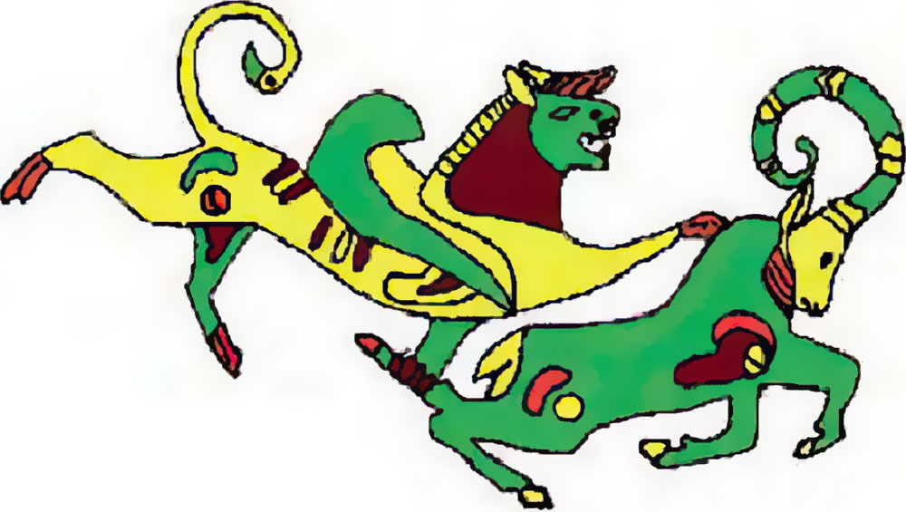
|
Kurgan kalıntılarından çıkan keçe yaygılarda sıkça karşılaşılan ve çeşitli “hayvan mücadeleleri”™ konu alan resimlerden birisi de “Dağ Keçisine saldıran Griffon” dur. |
Одна из картин, часто встречающихся в войлочных циновках из останков Кургана и посвященная различным « схваткам животных» ™, - это «Грифон, атакующий горного козла» . |
|
Bugün hemen hemen tamamı Lenıngrat'taki Hermitaj Müzesinde bulunan, Pazırık kurganlarından çıkarılan eserlerin içerisinde yer alan Keçe malzeme ile yapılmış bulgulara, farklı dönemlere ait başka kurganlarda da tesadüf edilmiştir. Ancak Pazırık keçe buluntuları hem tarih hem de mükemmel korunmalan açısından, keçe malzeme ile yapılmış ve günümüze ulaşmış en eski eserler olarak büyük bir öneme sahiptir. Kurganlardan çıkan keçe buluntuların tamamına yakını renkli ve aplike tekniğinde yapılmış figür-motifli idi. Step sanatının ünlü hayvan mücadelelerinin tasvir edildiği bu keçeler çeşitli işlevleri yerine getirmek üzere yapılmışlardı. Bazıları büyük boyutlarda tıpkı bugünkü Kazak-Kırgız ve Çeçen-İnguş keçeleri gibi motifli ve tasvirli düz yaygı olarak, bazıları da at koşum takımlarında kullanılmak üzere üretilmişti. |
Находки из войлочного материала, почти все из которых находятся в Эрмитаже в Ленинграте и являются одними из артефактов, извлеченных из курганов Пазырык, были обнаружены в других курганах разных периодов. Тем не менее, находки из войлока имеют большое значение как с точки зрения их истории, так и с точки зрения их превосходной сохранности, поскольку это самые старые произведения, сделанные из войлока и сохранившиеся до наших дней. Практически все находки из войлока из курганов были цветными, с фигурными мотивами, выполненными в технике аппликации. Эти циновки, изображающие известные звериные схватки степного искусства, выполняли различные функции. Некоторые из них были произведены в больших размерах в виде плоских циновок с мотивами и изображениями, точно так же, как сегодняшние казахско-киргизские и чечено-ингушские войлоки, а некоторые были произведены для использования в конской упряжке. |
|
Büyük bir istisna olarak günümüze ulaşan keçe malzemenin kullanıldığı bu eserlerle, halen mevcut olan ve en fazla birkaç yüzyıl öncesine ait olan keçe eserler arasındaki, en iyimser tahminle 1700 yıllık döneme ait hiçbir maddi bulgu günümüzde mevcut değildir. Rubruck ve Carpini gibi Avrupalı seyyahların eserlerinde bu konuda verdikleri bilgilerde keçe üzerinde yer alan figür ve şekillerin tasvirleri dahi yapılmaktadır. Böylece bu bilgilerden yararlanılarak Pazırık Dönemi ile günümüz arasındaki büyük zaman diliminde keçe sanatının ne durumda olduğu kısmen tespit edilebilmektedir. Kültür halamından, birbirleri ile karışmış ve aynı hayat tarzına sahip olmuş toplumların ırkları ne olursa olsun benzer eserler ürettikleri birçok bilim adamı tarafından ileri sürülmüştür(30). |
В качестве серьезного исключения, нет никаких материальных находок за 1700-летний период, с наиболее оптимистической оценкой, между этими произведениями из войлочного материала, которые сохранились до наших дней, и войлочными работами, которые все еще доступны и датируются не более чем несколько веков назад. В произведениях европейских путешественников, таких как Рубрук и Карпини, даже описания фигур и фигур на войлоке содержатся в информации, которую они дают по этому поводу. Таким образом, используя эту информацию, можно частично определить, каким было войлочное искусство в великий период между периодом Пазырык и сегодня. Многие ученые предполагали, что общества, смешанные друг с другом и ведущие один и тот же образ жизни, производили похожие произведения независимо от их расы (30). |
|
(30) Emel ESİN., a.g.e, s.4. |
(30) Emel ESİN., Supra, p.4. |
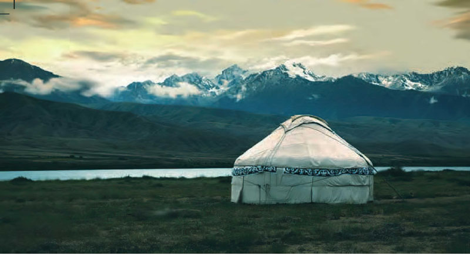
|
Avrasya steplerinin yarı-göçebe toplamlarınca ”Ak iv”, ”Yurt” gibi isimlerle anılan keçe çadırlar işlevselliği kadar pratik kullanımıyla da yaygınlık kazanarak, eski tarihlerden günümüze kadar ulaşmıştır. |
Войлочные палатки, которые полукочевые народы евразийских степей называют такими именами, как «Ак iv» и «Юрт», получили широкое распространение благодаря своему практическому использованию, а также их функциональности, и достигли наших дней с древних времен. |
|
Orta Asya bozkırlarında ve bugünkü Rusya içinde düzlüklerde tarih boyunca yaşayan çeşitli göçebe topluluklarda da durum böyle idi. Bazıları atlı çoban veya avcı-göçebe olarak yaşayan bu toplamların birbirine çok benzeyen hayat tarzları, göçebe hayata uygun ve taşınması çok kolay eşyalar üretmelerine sebep olmuştu. İnsanlık tarihi boyunca göçebe hayatını yaşantı şekli olarak seçen insanlar meskenlerini kolaylıkla kurulup, sökülebilen çeşitli çadır tiplerinden oluştururlardı. Araştırmacıların arkeolojik buluntuların ışığında ortaya koyduğu verilere göre, Avrasyada bozkırlarında yaşayan halklar tarihin çok eski çağlarından beri konutlarını çadır biçiminde yapmışlardı. Bazı kaynaklarda bilinen eski Türk kavimlerinden olan Tu-cüe'lerin üzeri keçe ile örtülü çadırlarda oturdukları, keçe ile örtülü evarabaları olduğu belirtilmektedir (31). İbn-i Fadlan ünlü seyahatnamesinde Hazar Hakanının Etil(zidil) 'deki çadır evleri hakkında çeşitli tasvirlerde bulunmuştur (32). 1246 yılında ”Kumanca konuşan” Tatarların ülkesine giden Plano Carpini göçebe çadırlarının büyüklüğünün hangi ölçülere kadar ulaştığına dair ilginç bilgiler vermektedir. Carpini, Tatarların Büyük Han'ının seçimi için ”Turakina'nm karargahında kurulan çadırın ”çok süslü ve ikibin kişi alacak kadar” olduğunu, ayrıca büyük hanın karılarının her biri için de ”beyaz keçeden” yapılmış ayrı ayrı geniş çadırlar kurulduğundan bahsetmektedir (33). Carpini, Deşt-i Kıpçak ülkesindeki ”Derme evler” olarak tarif edilen çadırların duvarlarının ve çatısının keçe ile kapatıldığını, kapısının da keçeden yapıldığını yazmaktadır (34). 1253 yılında aynı bölgeden geçen Rubruck da bozkırlarda görmüş olduğu bir avulu şöyle tasvir etmektedir; |
Так было с различными кочевыми обществами на протяжении всей истории в степях Центральной Азии и на равнинах в пределах современной России. Очень похожий образ жизни этих обществ, некоторые из которых жили пастухами, запряженными лошадьми, или охотниками-кочевниками, заставлял их производить предметы, подходящие для кочевой жизни и очень удобные для транспортировки. На протяжении всей истории человечества люди, избравшие кочевой образ жизни своим образом жизни, строили свои жилища из различных типов палаток, которые можно было легко установить и разобрать. Согласно данным, выявленным исследователями в свете археологических находок, народы, проживающие в степях Евразии, с древних времен строили свои жилища в виде палаток. В некоторых источниках говорится, что ту-цюэ, входящие в число древнетюркских племен, жили в шатрах, покрытых войлоком и покрытых войлоком (31). Ибн-и Фадлан дал различные описания палаточных домиков хазар-хана в Этиле (зидиле) в своей знаменитой путевой книге (32). Плано Карпини, который отправился в страну «куманоязычных» татар в 1246 году, дает интересные сведения о размерах палаток кочевников. Карпини упоминает, что «шатер, установленный в ставке Туракина» был «очень красивым и достаточно, чтобы вместить две тысячи человек» по выбору Великого хана татар, и что отдельные большие шатры из «белого войлока» были установлены для каждой из жен великого хана (33). Карпини пишет, что стены и крыши палаток, которые описываются как «импровизированные дома» в стране Дет-и Кипчак, были покрыты войлоком, а двери были сделаны из войлока (34). Рубрук, который проходил через ту же местность в 1253 году, описывает двор, который он видел в степи, следующим образом; |
|
”.. .bu steplerde oturan Kıpçaklar keçeden yapılmış çadırlar kullanırlar... Uyudukları yurtlarını beyaz bir keçe ile kaplarlar, çoğu zaman görkemli ve güzel görünmesi için kireçle, beyaz toprakla veya kemik tozu ile boyarlardı. Bu çadırlar bazen de kara keçe ile kaplanırdı... Kapıda kullanılan keçenin üzeri boya ile yapılmış üzüm, ağaç, kuş, ve dört ayaklı hayvanların resimleri ile süslenirdi” (35). |
«... кипчаки, живущие в этих степях, использовали палатки из войлока… Они покрывали свои общежития белым войлоком, часто раскрашенным известью, белой землей или костной пылью, чтобы выглядеть великолепно и красиво. Эти палатки иногда покрывали черным войлоком… Войлок, использованный в дверях, был украшен красками изображения винограда, деревьев, птиц и четвероногих животных»(35). |
|
(31) EBERHART.,Çinin Şimal Komşuları., Ankara 1942,s.86. |
(31) EBERHART., Şimal Neighbours of China., Ankara 1942, p.86. |
|
(32) TOĞAN,a.g.e.,s.267. |
(32) TOĞAN, выше, с. 267. |
|
(33) L.LİGETİ., Bilinmeyen İç Asya, Ankara 1986, s.97-99. |
(33) Л. ЛИГЕТИ., Неизвестная Центральная Азия, Анкара, 1986, с.97-99. |
|
(34) SAFRAN., a.g.e.,s.111. |
(34) SAFRAN., Выше, стр. 111. |
|
(35) SAFRAN., a.g.e., s.112. |
(35) SAFRAN., Выше, с. 112 . |
|
1334 yılında Deşt-i Kıpçak'ta bulunan İbn-i Batuta da benzer şekillerde çadır ve keçelerden bahsetmektedir. Türklerde olduğu gibi, benzer bir bozkır hayatı olan Moğol topluluklarıda, esiri bir gelenek olarak keçe çadırlarda oturuyorlardı. Ünlü Moğol Hakanı Cengiz Han'dan kaynaklarda ”keçe çadırlarda oturan halkların başbuğu” olarak bahsedilmesi tesadüfi değildi. Bilindiği üzere Cengizhan ve varislerinin kurduğu istilacı devletler Kafkasya'da da uzun yıllar boyunca etkili olmuşlardı. Kafkas kültürü içerisinde bu yıllardan kalan ve karşılıklı etkileşime dayalı olarak gerçekleşen izler günümüzde bile tespit edilebilecek boyutlardadır. |
Ибн-и Батута, который был найден в Дешти-Кипчаке в 1334 году, также упоминает палатки и войлоки подобным образом. Как и в случае с турками, монгольские общины с похожей степной жизнью жили в войлочных палатках в качестве неволи. Неслучайно знаменитый монгольский хан Чингисхан упоминается в источниках как «вождь народов, сидящих в войлочных шатрах». Как известно, на Кавказе долгие годы действовали и созданные Чингишаном и его преемниками государства-захватчики. Следы, оставшиеся от этих лет в кавказской культуре и основанные на взаимодействии, имеют размеры, которые можно обнаружить даже сегодня. |
|
Keçenin hammaddesi çeşitli hayvanlardan elde edilen Çeçen- İnguşların ”Tıhrga” veya ”Tha” adını verdikleri ”Yün” dür. Yün, ilk taş devrinin ardından evcilleştirilen koyun ve keçiden elde edilen en eski tekstil elyafıdır. Sadece bu iki hayvandan değil daha başka hayvanlardan da elde edilebilmektedir. Ancak, en önemli ve en tipik olanı koyundan sağlanan elyaftır (36). |
Сырьем для войлока является «Шерсть», которую получают от различных животных, которых чечено-ингуши называют «Тырга» или «Та». Шерсть — древнейшее текстильное волокно, полученное от овец и коз, одомашненных после первого каменного века. Его можно получить не только от этих двух животных, но и от других животных. Однако наиболее важным и наиболее типичным является овечье волокно (36). |
|
Dünyanın hemen her bölgesinde çok farklı koyun cinsleri yetişir ve her cinsin kendine has olan yün elyafı inceliğine göre çeşitli gruplara ayrılır; ”İnce yün”(fine wool), merinos koyunundan elde edilir ve keçeleşme özelliği çok yüksektir. ”Orta-sert yün” (medium) Avrupa koyun ırklarından (Hampshire Down, Corriedale, Cheviot ve Southdown gibi) elde edilir. ”Uzun yün” (Coarse) Avrupa ve Amerika'da yaşayan koyun ırklarından (Romney, Lincoln, Scottish ve Blackface gibi) elde edilen bir yün çeşididir (37). Ayrıca Anadolu ve Merinos türü koyunların melezlerinden elde edilen orta incelikte Krosbred türü yün çeşitleri de bulunmaktadır. |
Почти во всех регионах мира растет множество различных пород овец, и уникальное шерстяное волокно каждой породы делится на различные группы в зависимости от их тонкости; «Тонкая шерсть» получается из мериносовой овцы и обладает очень высокими сваляющими свойствами. «Шерсть средней твердости» получают от европейских пород овец (таких как Хэмпшир-Даун, Корридейл, Чевиот и Саутдаун). «Длинная шерсть» (Coarse) — это разновидность шерсти, полученная от пород овец (таких как ромни, линкольн, шотландская и блэкфейс), обитающих в Европе и Америке (37). Существуют также разновидности шерсти типа Кросбред средней тонкости, полученные от помесей анатолийских и мериносовых овец. |
|
Koyanlardan elde edilen yünlerin yanında keçe imalatında kullanılan diğer hayvansal lifler ise keçi, tavşan ve deve soyuna mensup hayvanlardan elde edilir. Bu tür hayvanlardan elde edilen lifler keçe yapımında ayrı kullanıldığı gibi koyundan elde edilen yünlere karıştırılarak da kullanılır. Keçi cinslerinden elde edilen ve ”Mohair” olarak bilinen elyaflar ise, çok eski çağlardan beri Kafkasya'da Elbrus ve Kazbek, Anadolu'da Ankara, Afganistan'da Kaşmir ve civarında yaşayan tiftik keçisi cinslerinden elde edilmektedir. Bu yünler Orta Asya toplulukları tarafından keçelerde genellikle doğal rengi ile kullanılmaktadır. Yine, devenin Asya'da yaşayan ”çift hörgüçlü” Baktriyan cinsinden orta sertlikte (medium) ve taba renginde yün elyafı elde edilir. Güney Amerika'da yaşayan deve ailesinden olan ”Alpaka” türü lamalardan elde edilen elyaflar ise farklı ve parlak renklere sahip olduğundan daha çok dokumacılıkta kullanılmaktadır. Ayrıca ”Vicuna” ve ”Guanaco” adındaki lama türlerinden ise çok kaliteli ender incelikte aynı zamanda çok değerli olan yün elyafları elde edilir. Bu hayvanlar dışında bazı tavşan cinslerinin tüyleri de şapka yapılan keçelerde hammadde olarak kullanılmaktadır. |
В дополнение к овечьей шерсти, другие волокна животного происхождения, используемые при производстве войлока, получают от животных, принадлежащих к предкам коз, кроликов и верблюдов. Волокна, полученные от таких животных, используются отдельно для изготовления войлока, а также смешиваются с овечьей шерстью. Волокна, полученные от козьих пород и известные как «мохер», добываются с Эльбруса и Казбека на Кавказе, Анкары в Анатолии, Кашмира в Афганистане и ангорских коз с древних времен. Эта шерсть обычно используется в войлоках среднеазиатскими общинами с ее естественным цветом. Опять же, шерстяное волокно средней твердости коричневого цвета получается из бактрийского рода бактрийских верблюдов, обитающих в Азии. Волокна, полученные от лам типа «Альпака», представителя семейства верблюжьих, проживающих в Южной Америке, в основном используются в ткачестве, поскольку они имеют разные и яркие цвета. Кроме того, из лам типов «Викунья» и «Гуанако» получают волокна шерсти очень высокого качества, редкой пробы, а также очень ценные. Помимо этих животных, перья некоторых пород кроликов также используются в качестве сырья для изготовления фетра из шляп. |
|
(36) Ş. DAVASL1GİL., Yün ve İplik Teknolojisi, C.I, İstanbul 1960, s.3. |
(36) Ş. DAVASL1GİL., Технология шерсти и пряжи, CI, Стамбул 1960, стр.3. |
|
(37) Nina HYDE., Fabric of History Wool”, National Geographıc Magazin., V.73, No:5, 1988, s.570-571. |
(37) Нина ХАЙД., Ткань исторической шерсти», журнал National Geographic, V.73, №: 5, 1988, стр. 570-571. |
Yünün Keçeleşmesi |
Валяние из шерсти |
|
Yün, genel bir ifadeyle bazı hayvanların derilerinin altında bulunan kıl kesesinin dibine gömülmüş köklerden büyüyen epiderm (kütikül), korteks (kabuk) ve medüla (kılözü) adı verilen bölümlere sahip kıllardan oluşmaktadır. Epiderm, elyafın en dış yüzeyini oluşturur ve testere biçiminde dizilmiş boynuzlu pullardan oluşur. Bu katman yün elyafının esas kısmını korur ve ona bir miktar sertlik verir. Pulların büyüklüğü ve dizilişi yünün parlaklığını doğrudan etkiler. Korteks ise yün elyafının ana bölümüdür. Uzun ve kat kat iplik biçimli hücrelerden oluşarak, yünün esnekliğini, dayanıklılığını ve boyanma özelliklerini belirler (38). Elyafın ortasında ise kılözü denilen medula bulunur. Yün, nem çekme oranı oldukça yüksek olan bir elyaftır. Yünün epiderm tabakasındaki pullar herhangi bir sıcaklık, basınç veya başka etkilere maruz kaldığında açılarak geriye doğru kıvrılırlar. Bunun sonucunda örtü hücreleri birbirinin üzerine kenetlenirler ve lifler birbirlerine dolanarak düğümlenirler. Daha çok ince yünlerde kendini gösteren bu olaya ”yünün keçeleşmesi” adı verilir (39). Yün ve diğer kıl kökenli hayvansal liflerde görülen bu keçeleşme özelliği aslında; Elyafın, belirli bir basınç, sıcaklık ve asitik veya bazik çözeltilerin etkisi ile mekanik hareketler sonucunda boyca ve ence çekilip kısalmasıdır. Yünün keçeleşmesi için ortamda su bulunması ve hararet mutlaka gereklidir. Keçeleşme olayında ısı nemle birleşerek liflerin daha elastiki olmasını sağlar ve ona biçimlenme yeteneği kazandırır. Ayrıca lifteki şişmeler birbirleriyle teması artırarak düğümlenmelere sebep olur (40). Fiziksel bir işlem olan biçimlendirme safhasına ”fikse etme”(dekatür) adı verilir. Bu olay, bitkisel ve kimyasal elyaflarda olmayan sadece yün ve öteki kıl kökenli elyaflara ait bir özelliktir. |
Шерсть, в общем, состоит из волос с участками, называемыми эпидермисом (кутикулой), коркой (оболочкой) и мозговым веществом (капилляром), которые растут из корней, залегающих под волосяным мешком под кожей некоторых животных. Эпидерма образует внешнюю поверхность волокна и состоит из роговых чешуек, имеющих пилообразную форму. Этот слой защищает основную часть шерстяного волокна и придает ему некоторую жесткость. Размер и расположение хлопьев напрямую влияют на блеск шерсти. Кора — это основная часть шерстяного волокна. Он состоит из длинных и многослойных нитевидных ячеек и определяет гибкость, прочность и красящие свойства шерсти (38). В середине волокна находится медула, называемая капилляром. Шерсть — это волокно с очень высокой степенью поглощения влаги. При воздействии любой температуры, давления или других воздействий чешуйки в слое эпидермиса шерсти открываются и скручиваются назад. В результате покрывающие клетки сжимаются друг с другом, а волокна запутываются и связываются узлами. Это явление, которое чаще всего проявляется в тонкой шерсти, называется «валянием шерсти» (39). Эта особенность валяния, наблюдаемая в шерсти и других волокнах животного происхождения на основе щетины, на самом деле; Это сокращение волокон в длину и ширину в результате механических движений под действием определенного давления, температуры и кислотных или основных растворов. Присутствие воды и тепла абсолютно необходимо, чтобы шерсть стала спутанной. При валянии тепло сочетается с влагой, делая волокна более эластичными и давая им возможность формироваться. Кроме того, набухание волокон увеличивает контакт друг с другом и вызывает образование узлов (40). Фаза формирования, которая представляет собой физический процесс, называется «фиксацией» (декатайзером). Это свойство присуще только шерсти и другим волокнам на основе щетины, которых нет в растительных и химических волокнах. |
|
Yünün ıslanması esnasında liflere ulaşan su molekülleri, liflerin polimerilerindeki hidrojen bağlarını ve bir dereceye kadar da amorf bölgelerdeki tuz bağlarını hidrolize ederek koparır, bu durum liflerin elastikiyet kazanmasını sağlar. Böylece materyal kururken çekilen suyun etkisiyle sözü geçen bağlar yeniden birbirine kenetlenir, sıkıştırıldım kalıbın da şeklini alarak yeniden oluşur(41) Keçeden yapılan eşyaların büyük bir bölümü materyalin bu plastik özelliği ile oluşturulmaktadır. |
Молекулы воды, которые достигают волокон во время смачивания шерсти, гидролизуют водородные связи в полимерах волокон и, в некоторой степени, солевые связи в аморфных областях, и это обеспечивает эластичность волокон. Таким образом, под действием воды, втянутой во время высыхания материала, упомянутые скрепления снова сжимаются, и прессованная форма снова формируется, принимая форму формы (41). Большинство изделий из войлока формируются с этой пластичной характеристикой материала. |
|
(38) İ. BAŞER.,Tekstil Kimyası ve Teknolojisi, İstanbul 1992, s.94-98. |
(38) İ. BAŞER., Текстильная химия и технология, Стамбул, 1992, стр.94-98. |
|
(39) DÖLEN.,a.g.e., 126. |
(39) DÖLEN., Там же, 126. |
|
(40) BAŞER., a.g.e.,s.77. |
(40) BASER., Supra, стр.77. |
|
(41) BAŞER., a.g.e., s.77. |
(41) BASER., Supra, стр.77. |
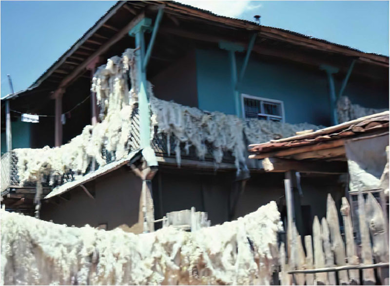
|
Göksün yöresinde çeitli amaçlar için kullanılmak üzere yıkanan ve asılarak kurutulan yünler. |
Шерсть, которую стирают и развешивают, для различных целей в регионе Гёксюн. |
Yünün Özellikleri |
Свойства шерсти |
|
” Isı tutma özelliği” : Yün liflerinin en önemli özelliklerinden başında, yüksek nem çekme özelliği sırasında fazla miktarda ısıyı açığa çıkarması gelir Kuru havalarda ise yeterli derecede su olmayışı nedeniyle yün üzerinde statik elektriklenme artışı görülür Bu özelliği nedeniyle konfor ve sağlık bakımından soğuk havalarda kullanılacak en uygun tekstil materyalidir. Yünün ısı verici bu özelliği yaygın kullanımının da başlıca nedenini oluşturur. |
«Свойство удержания тепла» : одним из наиболее важных свойств шерстяных волокон является то, что они выделяют большое количество тепла при высоком влагопоглощении. В сухую погоду на шерсти увеличивается статическое электричество из-за недостатка воды. Это текстильный материал. Это теплоотдача шерсти — главная причина ее широкого распространения. |
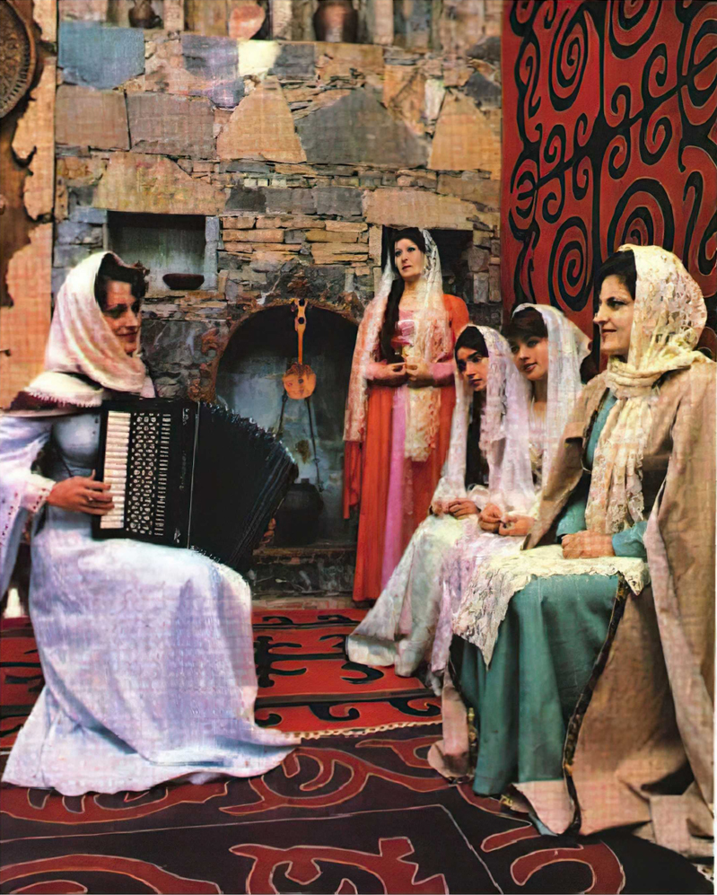
|
”Çeçen-inguş Albümü”nden alınmış bu fotoğrafta, günlük hayatta ve mekan içinde keçe yaygıların kullanım biçimleri temsil edilmektedir. |
На этой фотографии из «Чечено-ингушского альбома» представлены способы использования войлочных циновок в повседневной жизни и в космосе. |
|
Yün elyaflarında ısı tutma özelliğinin çok yüksek oluşu aynı zamanda sıcağa karşı duyarlılığını da azaltır. Yün bu nededenle yavaş ve zayıf bir şekilde yanar. Öyle ki, yün ancak ateşle temasta olduğu sürece yanar. Ateş etkeni ortadan kalktığında yanma olayı da ortadan kalkar (42). Yünün yanıcılık ve ateşle parlama oranın birçok materyale göre çok az olması da bu malzemenin yaygın kulanım alanı bulmasının sebeplerinden birisini oluşturmuştur |
Шерстяные волокна обладают высокой теплоотдачей, что снижает их чувствительность к теплу. По этой причине шерсть горит медленно и слабо. Так что шерсть горит только до тех пор, пока находится в контакте с огнем. Когда фактор возгорания исчезает, событие горения исчезает (42). Горючесть и воспламеняемость шерсти очень низкая по сравнению со многими материалами, что является одной из причин широкого использования этого материала. |
|
”Yalıtım özelliği”: Yün liflerinin keçeleşme özelliği nedeniyle yan yana gelmesi ve aralarında çok az boşluk kalarak birbirlerine kenetlenmesi nedeniyle de yalıtım işlevi yüksek bir malzeme ortaya çıkmıştır. Keçenin en önemli işlevi olan ”yalıtım özelliği” yaygın kullanımındaki en önemli nedeni oluşturur. Keçe, suyu zor alır ve aldığında da zor kurur. Sıcağı ve soğuğu geçirmez. Kısacası insanları birçok doğal dış etkene karşı iyi bir koruyucudur. Ayrıca keçeninin, yün liflerinin birbirlerine çok sıkışık olarak girip kaynaşması nedeniyle oluşan yüzeyi, yılan, akrep veya çiyan gibi ısırıcı ve zehirli hayvalara karşı iyi bir savunma teşkil eder. Keçenin sadece bu özellikleri dahi bozkırda veya kırsal kesimde yaşayan topluluklarca neden vazgeçilmeyen bir meta olduğunu göstermeye yeterlidir. Keçe, günümüz modern teknolojisinde de, koruyucu bir meta olarak kurşun geçirmeyen çelik yeleklerde ve ateşe dayanıklı bazı malzemelerin yapımında kullanılmaktadır. |
«Изоляционная особенность»: Материал с высокой изоляционной функцией появился благодаря тому факту, что волокна шерсти идут бок о бок из-за свойства валяния, и они сцеплены между собой, оставляя очень мало места между ними. «Изоляция», которая является наиболее важной функцией войлока, является наиболее важной причиной его широкого использования. Войлок с трудом впитывает воду и почти не сохнет. Он устойчив к жаре и холоду. Короче говоря, это хорошая защита для людей от многих естественных внешних факторов. Кроме того, поверхность козы, которая образуется из-за очень плотного взаимодействия и слияния волокон шерсти, обеспечивает хорошую защиту от укусов и ядовитых животных, таких как змеи, скорпионы или многоножки. Даже этих свойств одного войлока достаточно, чтобы показать, почему он является незаменимым товаром для общества, живущего в степи или сельской местности. Войлок также используется в современной современной технике в качестве защитного металла, в свинцово-стальных жилетах и при производстве некоторых огнестойких материалов. |
|
“Plastik (şekil alabilme) özelliği”: Yün ve tiftik elyaflarının en özgün ve en önemli özelliği geçici ve devamlı olarak biçimlenebilmesidir. Islatılmış yün lifleri kurutulurken belli bir basınçla ve istenilen şeklin kalıbında tutulursa, tamamen kuruduğunda kalıbın şeklini alabilmektedir. Kuru kaldığı sürece de bu şeklini muhafaza edebilmektedir. |
«Пластичность (формуемость)»: Самая уникальная и самая важная особенность шерстяных и мохеровых волокон состоит в том, что они могут формироваться временно и непрерывно. Если смоченные шерстяные волокна удерживать в форме желаемой формы при определенном давлении во время сушки, она может принять форму формы, когда она полностью высохнет. Он может сохранять эту форму, пока остается сухим. |
|
“Renklendirilme özelliği” : Yün elde edilen evcil boyunların çoğunda yünün rengi beyazdır. Bununla birlikte gri, kahverengi ve siyah renkte yüne sahip cinsler de bulunmaktadır. Yünlerde renk, liflerin ikinci tabakası olan korteksi oluşturan fibril hücreleri içinde bulunan pigmentler tarafından meydana getirilir. Beyaz renkli yünler, diğer renkteki yünlerin her renge boyanamaması nedeniyle daha makbul sayılmaktadırlar (43). |
«Свойство цвета»: Шерсть большинства домашних животных, из которых получается шерсть, имеет белый цвет. Однако есть также породы с серой, коричневой и черной шерстью. Цвет шерсти создается пигментами фибрилл, которые образуют второй слой волокон — кору. Шерсть белого цвета считается более предпочтительной, поскольку шерсть других цветов не может быть окрашена во все цвета (43). |
|
Yün uzun süre ışık altında kaldığında kırılgan ve gevşek hale gelir. Boyar maddelere karşı duyarlılığı azalır. Renginde sararma görülür. Bu sararmanın nedeni ise, ultraviole ışınlarının yün liflerindeki peptid ve di sülfür bağlarına etki etmesinden kaynaklanmaktadır(44). |
При длительном воздействии света шерсть становится ломкой и рыхлой. Снижается его чувствительность к красителям. По его цвету заметно пожелтение. Причина этого пожелтения связана с воздействием ультрафиолетовых лучей на пептидные и серные связи в волокнах шерсти (44). |
|
Yün elyafi, fonksiyonel oluşu, üstün özellikleri ve üretiminin tüketimine nazaran daha az olması nedeniyle pahalı bir elyaf türüdür. İnceliği, yumuşaklığı, eğrilme, yaylanma ve esnekliğinin yüksekliği gibi özellikleri nedeniyle insanoğlu için tarih boyunca vazgeçilmez bir meta olarak kullanılmıştır. |
Шерстяное волокно является дорогим типом волокна из-за его функциональности, превосходных свойств и меньшего производства, чем потребления. На протяжении всей истории он использовался как незаменимый товар для людей из-за его характеристик, таких как тонкость, мягкость, изгиб, упругость и высокая гибкость. |
|
(42) Mustafa HARMANCIOGLU, Lif Teknolojisi, İzmir 1974, s. 129. |
(42) Мустафа ХАРМАНЧИОГЛУ, Fiber Technology, Измир, 1974, стр. 129. |
|
(43) HARMANCIOGLU, a.e.e,s.l31. |
(43) ХАРМАНЧИОГЛУ, а. e .e, p.l31. |
|
(44) BAŞER, a.g.e, s.83. |
(44) BASER, выше, стр. 83. |
İSTING / KEÇE YAPIMINDA KULLANILAN ARAÇLAR |
ИНСТРУМЕНТЫ, ИСПОЛЬЗУЕМЫЕ В ПРОИЗВОДСТВЕ ИСТИГА/ВОЙЛОКА |
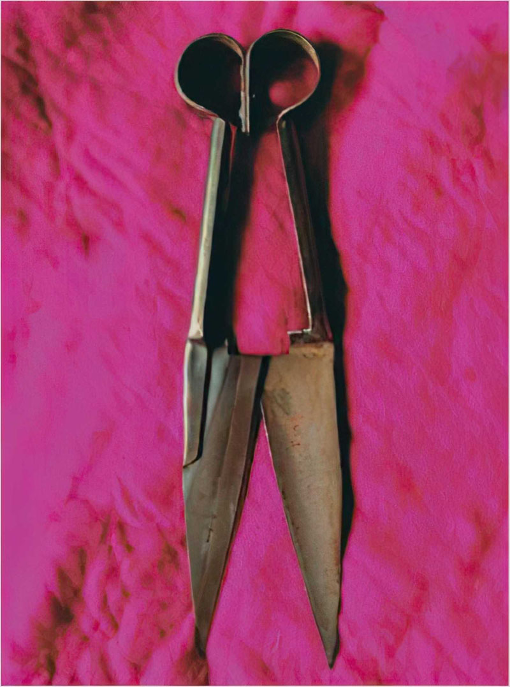
|
Kırkım Makası |
Ножницы |
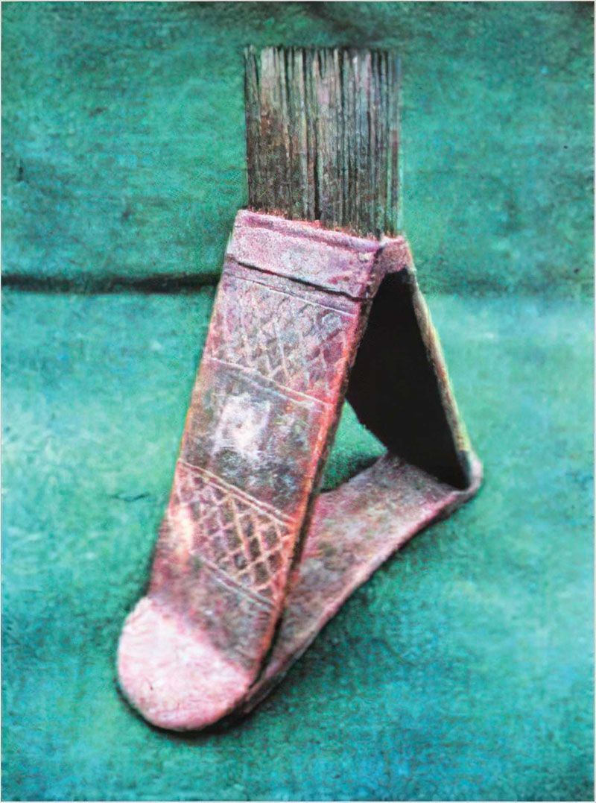
|
Yün Tarağı |
Расческа для шерсти |
|
Keçe yapımı sırasında birçok araca ihtiyaç vardır. Türkiye'de üretilmiş veya üretilen Çeçen-İnguş Keçelerinde kullanılan tespit edebildiğimiz el aletlerini ve kullanıldıkları yerleri şu şekilde sıralayabiliriz; |
При изготовлении войлока необходимо много инструментов. Турция, произведенная или изготовленная в чечено-ингушской области, и места, где они использовали ручные инструменты для печати войлоков, которые мы можем обнаружить, можно резюмировать следующим образом; |
|
Tukhur / Kırkım Makası: |
Тукар / Ножницы: |
|
Koyun veya diğer hayvanları kırkmakta kullanılan makas. |
Ножницы для стрижки овец или других животных. |
|
Tıhrgakoajben yahk / Yün Tarağı: |
Tıhrgakoajben yahk / Расческа для шерсти: |
|
Çeçence ”Thaoalha yahk” da denilen genellikle uçları yukarıya gelecek şekilde sıralanmış metal uzun dişliklerin ahşap bir zemine monte edilmesinden oluşan tarak. Kafkasya’nın her bölgesinde benzer şekillerde yapılır. Kaba yün ve yapağının içerisindeki pislik ve ”çeperlerin temizlenmesinde kullanılır. Kullanımı sırasında kadınlar yapağıyı tararlarken ayaklarını tarağın tahtasına yerleştirerek otururlar. İki elle yapağıyı tarağın dişlerine geçirerek ve iki yana doğru çekerek tararlar. |
Расческа, также называемая по- чеченски «Thaoalha yahk» , состоит из крепления длинных металлических прорезывателей, обычно расположенных концами вверх, на деревянном полу. Аналогичным образом это делается во всех регионах Кавказа. Он используется для очистки грубой шерсти и флиса от грязи и стен, во время его использования женщины сидят, поставив ноги на гребень гребня, и расчесывают шерсть. |
|
lad / Hallaç Yayı: |
Lad / Hallaç Spring: |
|
Pamuk, yün ve kıl gibi taraklanmış elyafların birbirinden ayrılması ”atılması” için kullanılan alet. Genel olarak, ahşap bir eğri yay şeklindeki değneğe gerilmiş ”kiriş”ten oluşur. Hallaç yayı çeşitli şekillerde olabilir. |
Инструмент для отделения кардных волокон, таких как хлопок, шерсть и волосы. Как правило, деревянный изгиб состоит из «балки», натянутой на посох в форме лука. Пружина разрыхлителя может быть различной формы. |
|
Butsipils / Kalıp: |
Буципилы / плесень: |
|
Keçenin yapımı sırasında yünün sarıldığı ince sazdan yapılmış 2 x 1,5 metre boyutlarında (veya istenilen ölçülerde) hasır yaygı. |
Коврик 2 х 1,5 метра (любого желаемого размера) из тонкого тростника, в который заворачивается шерсть во время изготовления войлока. |
|
Çuh / İp : |
Чух / Веревка: |
|
Kalıbın sarılmasına yarayan istenilen uzunlukta kalınca ip. |
Толстая веревка нужной длины для обертывания формы. |
|
Inzathehka Keçe Bıçağı: |
Инзатехк а Войлочный нож: |
|
Kafkasyada ”Vert”, ”Yamçı” veya ”Burka” gibi adlar verilen keçe giysilerin yapımı sırasında üzerindeki elyafları kaldırmaya yarayan kemikten yapılmış bıçak şeklindeki alet. |
Инструмент в форме ножа из кости, который используется для подъема волокон на войлочной одежде, которую на Кавказе называют «верт» , «ямчи» или « бурка» . |
|
Nü / Süpürge: |
Ну / Веник: |
|
Keçe üzerine su serpmede kullanılan bildiğimiz klasik süpürge. |
Известный нам классический веник, которым поливают войлок водой. |
YAPILIŞ AŞAMALARI |
ЭТАПЫ ПРОИЗВОДСТВА |
Yün Kırkımı |
Стрижка шерсти |
|
Keçe imalatı yün elde edilen hayvanlann evcilleştirilmesi ile birlikte gelişmiştir. İnsanoğlunun birçok ihtiyacını karşılayan bir meta olarak aynı zamanda eğirme yöntemi ile gelişen dokuma tekniklerinden daha eski bir geçmişe sahiptir. Tarih boyunca tekstil ürünleri büyük gelişme göstererek çeşitlenmesine rağmen, insanlar keçe üretimine günümüzde de ilk keşfedildiği şekliyle hala devam etmektedirler. |
Производство войлока развилось с одомашниванием шерстяных животных. Как товар, который удовлетворяет многие потребности людей, он также имеет гораздо более древнюю историю, чем ткацкие технологии, разработанные с помощью метода прядения. Хотя текстильные изделия развивались и разнообразились на протяжении всей истории, люди по-прежнему продолжают производить войлок, поскольку он был впервые обнаружен. |
|
Keçe yapımında kullanılan malzemenin de elde edildiği hayvanın yünleri bir bütün olarak dağıtılmadan kırkılarak toplanır. Koyun yetiştiricileri kırkım işine büyük bir önem vermişler, özellikle amaca uygun malzeme elde edebilmek için kırkım zamanını iyice tespit etmişlerdir. Koyun kırkımı, elde edilen yün kadar, kırkılan koyanların daha çok et ve süt vermesi açısından da büyük önem taşır. Bu nedenle, besiye alınan kuzular beş aylık olduktan sonra, koyunlar ise besiye alınacakları zaman kırkılırlar. Anaç koyanların kırkımlan doğum zamanına göre ayarlanır. Koyunlar ileri gebeliklerinde besin maddesine daha fazla ihtiyaç duyarlar, bu nedenle yem yeme arzularının yükseltilebilmesi için kırkıma tabi tutulmaları gerekir. |
Шерсть животного, из которой получают материал, используемый для изготовления войлока, собирается путем стрижки без распределения в целом. Овцеводы придают большое значение стрижке, особенно они определяют время стрижки, чтобы получить подходящий материал. Стрижка овец так же важна, как и полученная шерсть, поскольку она дает больше мяса и молока тем, кто ставит ножницы. Поэтому откармливаемых ягнят стригут после пяти месяцев, а овец — на откорме. Стрижка тех, кто сажает подвой, регулируется по времени рождения. Во время поздней беременности овцам требуется больше питательных веществ, поэтому их нужно стричь, чтобы увеличить их потребность в корме. |
|
Kırkım için kesim tarihini kesin olarak söylemek mümkün değildir. Kırkım mevsimi bölgelerin ildim şartlarına bağlı olarak değişiklik gösterir. Anadolu'da kırkım mevsimi genellikle Mayıs ve Haziran aylarına rastlamaktadır. Bunu yetiştirici ekonomik faktörlere göre kendisi ayarlar. Yün verimine önem veren yetiştiriciler genellikle ilkbaharın sonunda olmak üzere yılda bir kırkım yaparlar. İlkbahar aylarında birinci kırkı mların dan elde edilen yün bütün kış boyunca hayvanın sırtında kaldığından dolayı yağlanarak kirlenmiş ve kalınlaşmış olur. Ağustos ayında elde edilen ikinci kırkım yün ilk kırkım yüne göre daha temiz ve ince elyaflı olduğu için süsleme amaçlı yaygı keçe yapımında kullanılmaktadır. Keçeleşme özelliği en yüksek yünler ise (fine wool) kuzulardan ilk kırkım yoluyla elde edilir. Ayrıca, sulak yerlerde büyüyen kuzuların yünlerinin keçe yapımında pek rağbet görmediği kaynaklarda belirtilmektedir (45) |
Точную дату забоя на стрижку назвать невозможно. Сезон Крыма варьируется в зависимости от провинциальных условий регионов. Сезон стрижки в Анатолии обычно совпадает с маем и июнем. Заводчик регулирует это в соответствии с экономическими факторами. Заводчики, которые заботятся о выходе шерсти, обычно стригут ее один раз в год, в конце весны. Поскольку шерсть, полученная с первых сороковых годов в весенние месяцы, остается на спине животного всю зиму, она загрязняется и уплотняется при смазывании маслом. Поскольку вторая стрижка шерсти, полученная в августе, чище и тоньше, чем первая стрижка шерсти, ее используют для изготовления матового войлока для украшения. Шерсть с наивысшими характеристиками валяния (тонкая шерсть) получается у ягнят путем первой стрижки. Кроме того, в источниках утверждается, что шерсть ягнят, растущих на заболоченных территориях, не очень популярна для изготовления войлока (45). |
|
Yılın soğuk aylarında hayvanların üşümemesi için kırkım yapılmaz. Ayrıca genel olarak havalar ısınınca birkaç gün içinde, hayvanın sırtındaki yünler yumuşayarak kolaylıkla açılabilen bir hale gelir. Bu durum kırkımın yapılmasını kolaylaştırır. Soğuk havalarda ise yünün yağıltısı ve kiri elyafı sıkıca kavramış olacağından kırkım çalışmaları zorlaşır. Bu nedenle kırkımın geciktirilmeden yapılması gerekir. İyi bir kırkım için dikkat edilecek hususların başında, kırkım günü hayvanlann aç bırakılması gelir. Tok kamına yapılan kırkımlarda hayvan şiddetli sancı ve kan basıncının artması yüzünden telef olabilir (46) |
В холодные месяцы года стрижку не делают, чтобы животные не простудились. Кроме того, через несколько дней, когда становится теплее, шерсть на спине животного становится мягкой и легко расстегивается. Это облегчает стрижку. В холодную погоду стрижка усложняется, так как промасленная шерсть и грязь плотно захватывают волокна. По этой причине стрижку следует производить без промедления. Одна из самых важных вещей, которые следует учитывать при хорошей стрижке, — это уморить животных голодом в день стрижки. Животное может погибнуть из-за сильной боли и повышения артериального давления при полных переломах живота (46) |
|
(45) Musa SEYİRCİ., İnönü Üniversitesi III. Battalgazı Semp. İstanbul 1989, s.252. |
(45) Муса СЕЙИРЧИ., Университет Инёню III. Battal gas Symp. Стамбул, 1989, с. 252. |
|
(46) HARMANCIOĞLU-, a.g.e., s. 189. |
(46) HARMANCIOĞLU-, выше, стр. 189. |
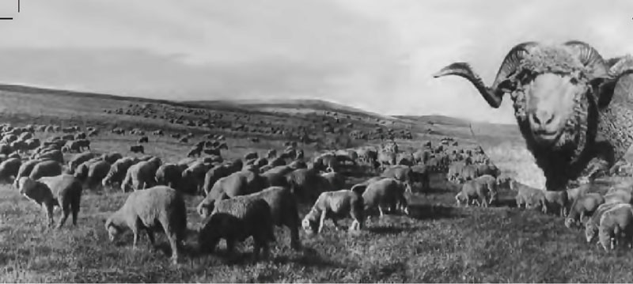
|
Kafkasya’da çayırlarda otlayan koyun sürüleri. |
Стада овец пасутся на лугах Кавказа. |
|
Bu nedenle kırkım sırasında hayvanda herhangi bir sıkıntı işareti görüldüğünde bu hayvan bir süre serbest bırakılarak rahatlaması ve nefes alması sağlandıktan sonra kırkıma devam edilir (47). |
По этой причине, когда животное проявляет какие-либо признаки стресса во время стрижки, его отпускают на некоторое время, а после того, как оно расслаблено и дышит, стрижка продолжается (47). |
|
Kırkım işi genellikle el kırkım makası ile yapılır. Erkekler tarafından yapılan kırkım işlemi rüzgarsız, yağışsız, kuytu bir yerde ve temiz bir zemin üzerinde yapılır. Çünkü, rutubet ve ıslaklık yapağıda küf mantarları ve bakterilerin kolaylıkla üreyerek malzemeye zarar vermesine sebep olmaktadır. Kırkım sırasında hayvanların cinslerinin de büyük önemi vardır. Buna göre, bir sürüde ilk önce koçlar, sonra sırasıyla kısır koyunlar, toklular ve anaç koyunlar kırkılırlar. |
Стрижка обычно выполняется ручными ножницами. Стрижка мужчинами производится без ветра, дождя, в укромном месте и на чистой земле. Потому что влага и сырость заставляют плесневые грибки и бактерии легко воспроизводиться и повредить материал. Во время стрижки также большое значение имеют породы животных. Соответственно, в стаде стригут сначала баранов, затем бесплодных, взрослых и племенных овец. |
|
Çeçen-Inguşlarda Kafkasya'dan beri koyun kırkımını genellikle şu şekilde gerçekleştirilirdi; Açık ve bulutsuz bir son bahar gününde koyunlar bir yalak, gölet veya dereye götürülerek, birkaç defa ağır, ağır suyun içerisinden geçirilerek yıkanırdı. Sonra koyunlar sudan çıkarılarak kurumaları için temiz bir ağılda bir süre tutulurlardı. Hava çok sıcaksa kapalı bir mekana götürülürerek, değilse dışarıda kırkılırlardı. Koyun kırkma konusunda uzman olan kişiler bu işi davet üzerine ve yardımlaşmayla yaparlar, koyunlar dört ayakları bağlanmak suretiyle ve aşağıdan başlanmak üzere büyük demir makasla (kirtile) kırkılırdı. Usta kırkıcılar her seferinde bir başlayışta hayvanı yarım bırakmadan kırkım işlerini tamamlarlardı. |
Стрижка овец у чечено-ингушей, начиная с Кавказа, обычно выполнялась следующим образом; В ясный и безоблачный осенний день овец выводили к корыту, пруду или ручью и несколько раз промывали тяжелой тяжелой водой. Затем овец вынули из воды и некоторое время держали в чистом загоне для просушки. Если стояла слишком жаркая погода, их отводили в дом, иначе стригут на улице. Специалисты по стрижке овец выполняли эту работу по приглашению и сотрудничеству, стригли овец связывали на четвереньках и большими железными ножницами (киртиле) снизу. Мастера-стрижки выполняли стрижку по одной, не оставляя животное на полпути. |
|
(47) HARM ANCIOĞLU., a.g.e., 189. |
(47) HARM ANCIOĞLU., Там же, 189. |
Yünün Temizlenmesi |
Чистящая шерсть |
|
Kendi koyun sürüleri evin erkekleri tarafından kırkıldıktan sonra bir araya gelen kadın ve kızlar bütün yıkama, tarama ve boyama gibi işlemleri için “belkhii” (bir tür imece) yaparlardı. Bu işlemlere önce yünlerin içerisindeki pıtırak, çapak ve pisliklerin temizlenip ayıklanması ile başlanır, elle çıkmayan pislikler makasla kesilerek atılırdı. Sonra sıra yün liflerinin taranarak birbirinden ayrılmasına gelirdi. Bunun için geleneksel yün tarakları kullanılır, Yünler mümkün olduğunca elle taraklanarak (: didilerek) liflerin birbirlerinden iyice ayrılması sağlanırdı. Didilen yünler daha sonra hallaç yayı ile birbirlerinden iyice ayrılır (ratılır). Birkaç defa tekrarlanan bu işlemler sonunda yün, adeta tüy gibi yumuşayıp, kabarır böylece ham yün keçe yapılmak üzere hazır hale getirilmiş olurdu. |
Женщины и девушки, которые собирались вместе после стрижки собственного стада овец мужчинами в доме, использовали «белхии» (вид сотрудничества ) для всех процессов, таких как стирка, расчесывание и окрашивание . Грязь срезали ножницами, затем пришло время отделить волокна шерсти, расчесывая их. Для этого использовались традиционные гребни для шерсти, шерсть расчесывалась вручную, насколько это было возможно (: обработкой), и волокна хорошо отделялись друг от друга. После этих процессов, которые повторялись несколько раз, шерсть размягчалась и набухала, как перышко, так что сырая шерсть была подготовлена для изготовления войлока. |
Malzemenin Keçeye Dönüştürülmesi |
Преобразование материала в войлок |
|
Yün elyafının fiziksel bir değişim geçirerek keçeleşmesi için rutubet; basınç ve sıcaklık gereklidir. Keçe yapma işleminin uygulanabilmesi için her şeyden önce bu özelliklere sahip bir mekana ihtiyaç vardır. Köylerde yakın zamanlara kadar bu mekanı genellikle evlerin alt katında bulunan temiz bir oda oluşturmaktaydı. Keçe yapımına başlamadan evvel içerisi boşaltılan bir depo veya müstakil oda, tabanı temizlenerek ve sertleştirilerek duvarlarla birlikte yeniden çamurla sıvanırdı. Keçe yapımı için hazırlanan bu odalar aynı soya mensup ailelerce ortak seçilen bir mekandı. |
Влага для валяния шерстяного волокна путем физического изменения; требуется давление и температура. Чтобы применить процесс изготовления войлока, в первую очередь необходимо место с этими характеристиками. До недавнего времени в деревнях этим местом обычно была чистая комната на первом этаже домов. Склад или отдельное помещение, которое было опорожнено перед началом производства войлока, должны были быть повторно оштукатурены грязью путем очистки и упрочнения пола и стен. Эти комнаты, которые были подготовлены для изготовления войлока, были выбраны семьями одного происхождения. |
|
Keçeyi oluşturan yün elyaflarının 'birbirlerine geçerek kaynaştırma işlemine" öncelikle düz bir yüzeye ince bir yaygının serilmesiyle başlanır. Hazırlanan bu yaygı keçe yapımında yünün dağılmaması için bir kalıp görevi üstlenir. Yaygı üzerine doğrudan doğruya didilerek atılmış yünler serpiştirilir. Bu işlem sırasında yün lifleri bir çubukla düzeltilerek, kalıp yüzeyinin üzerine eşit olarak dağılmasına dikkat edilir. Kalıp üzerine serpiştirilen yün elyafları kabarık olarak 30-35 cm yükseklikte olur. Bu işleminden sonra çok az miktardaki ılık su bir süpürge yardımı ile kabarık yünlerin üzerine serpilerek ıslanır. Sonra kalıp üzerindeki bu yün özenle ve düzgün bir biçimde yuvarlanarak dürülüp rulo haline getirilir. Ortadan başlayarak sıkıca kalın bir ip ile bağlanarak "dürüm" haline getirilir. Çeçence bu dürüm kalıba "Gorgharciin" adı verilir. |
Процесс «сцепления и сплавления» шерстяных волокон, из которых состоит войлок, сначала начинается с укладки тонкого мата на плоскую поверхность. Эти подготовленные маты действуют как плесень, предотвращая разрушение шерсти. Выбрасываемая шерсть высыпается прямо на коврик. Во время этого процесса шерстяные волокна расправляются с помощью палки и стараются равномерно распределить их по поверхности формы. Волокна шерсти, насыпанные на форму, имеют высоту 30-35 см в пушистой форме. После этого на пушистую шерсть с помощью веника сбрызгивается небольшое количество теплой воды и она намокает. Затем эту шерсть на формочке аккуратно и аккуратно раскатывают и скатывают в рулон. Начиная с середины, плотно обвязывается толстой веревкой и превращается в «бинт». По-чеченски эта форма для упаковки называется «горгарчин». |
|
Daha sonra tepme işlemine geçilir. Bu işlem keçe dürümünün, keçe yapılan düz alanın bir başından bir başına önce ayakla daha sonra el ve dirsekler yardımıyla tepilip yuvarlanarak götürülüp getirilmesidir. Keçe rulosunun büyüklüğüne göre 3 veya 4 kişi tarafından yapılan bu işlemde ortalama 6-8 saatlik bir çalışma gereklidir. |
Затем запускается процесс отдачи. Этот процесс заключается в том, чтобы переместить фетровую обертку от одной головы к изголовью плоского участка, на котором делается войлок, сначала ногой, а затем перекатывая его с помощью рук и локтей. Этот процесс, который выполняется 3 или 4 людьми в зависимости от размера рулона сукна, требует в среднем 6-8 часов работы. |
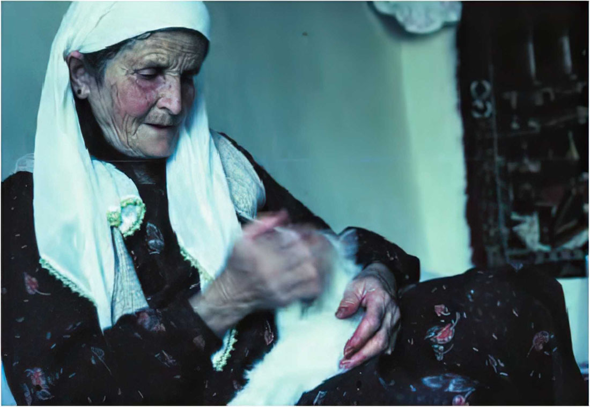
|
Türkiyede üretilen Çeçen-İnguş keçelerini yapan son ustalardan Cühüret Yıldır. Fotoğraf, Çardak'ta 1988 yılında çekilmiştir. Katalog bölümünde yapımış olduğu keçelerden bazıları bulunmaktadır |
Cühüret из последних великих мастеров, которые чувствовали чечено-ингушское производство в Турции в течение многих лет. Фотография сделана в Чардаке в 1988 году. Некоторые из войлоков, произведенных в разделе каталога. |
|
Birinci tepme sonucunda rulo halindeki dürüm açılarak ham keçenin kalınlığı ve düzgünlüğü amaca uygun bir şekilde düzeltilir. Keçeye karışmış lüzumsuz maddeler ayıklanır, sertlikler düzeltilir. Zayıf yerlerine ilave yün serpilerek aynı kalınlığın oluşması sağlanır. Eğri kenarları düzeltilir. Kalıptaki yün ikinci dürümden önce keçeleşmeye başladığından keçe düıüm açılarak yüzeye tekrar sabunlu su ve ılıksu serpilir. İkinci kez yeniden dürülen keçeye ilkinde olduğu kadar tekrar tepme işlemine devam edilir. Kolların bilekten dirseğe kadar olan kısmı ile diz üstünde, yuvarlanarak yapılan bu işlemle yün liflerinin birbirine iyice geçmesi sağlanır. Geleneksel metotlarla keçe yapımı sırasında tepme işlemi yapılırken, çalışan kişilerin aralarında tepme ahenginin sağlanması ve keçe tepen kişilerin fazla yorulmadan şevkle çalışmaları için, bu birlikteliği ve uyumu sağlayıcı kendilerine has şarkı ve maniler söyledikleri de bilinmektedir. Keçe ustaları 3 veya 4 yardımcısı ile birlikte sabahtan başlayıp aralıksız olarak akşama kadar çalışmak zorundadır. Keçe yapımı sırasındaki işlemler yarıda bırakıldığında veya aksatıldığında, keçeleşme sürecinin durması yüzünden malzemenin ziyan olması veya keçenin kalitesinin düşmesi söz konusu olabilmektedir. |
В результате первого толчка рулон в рулоне раскрывается, и толщина и гладкость необработанного войлока корректируются в соответствии с назначением. Примешанные к войлоку ненужные вещества удаляются, твердость корректируется. Такая же толщина достигается за счет дополнительного присыпания ваты на слабые места. Загнутые края сглаживаются. Поскольку шерсть в форме начинает матироваться перед вторым рулоном, войлочный узел разворачивается, и поверхность снова обрызгивается мыльной и теплой водой. Процесс отскока продолжается столько же, сколько и в первом, с войлоком, который повторно перекатывается. С помощью этого процесса, который выполняется путем перекатывания части рук от запястья к локтю и по колену, волокна шерсти тщательно переплетаются. Известно также, что, хотя процесс отдачи выполняется традиционными методами , рабочие поют свои собственные песни и мани, которые обеспечивают это единство и гармонию, чтобы обеспечить гармонию между ними и людьми, которые пинают войлок, работать с энтузиазмом, без особой усталости. Мастера по войлоку должны работать с 3–4 помощниками с утра и непрерывно работать до вечера. Когда процессы во время процесса изготовления войлока прерываются или прерываются, может быть, что материал потрачен впустую или качество войлока ухудшается из-за остановки процесса валяния. |
|
Tepme işlemi bittikten sonra iyice yıkanan keçe sıkı bir biçimde tekrar dürülür. Bu dürüm dikey olarak duvara dayanır. Bir gece boyunca süzülmeye bırakılır. Ertesi gün süzülen keçe kuruması için güneşlik bir yere serilerek asılır. Kuruyan keçe malzeme kullanıma hazır hale gelmiştir. |
Войлок, тщательно промытый по окончании варки, плотно перекатывают. Эта пленка вертикально упирается в стену. Остается парить на ночь. На следующий день солнцезащитный козырек кладут и подвешивают, чтобы высушить высушенный войлок. Сушильный войлочный материал готов к использованию. |
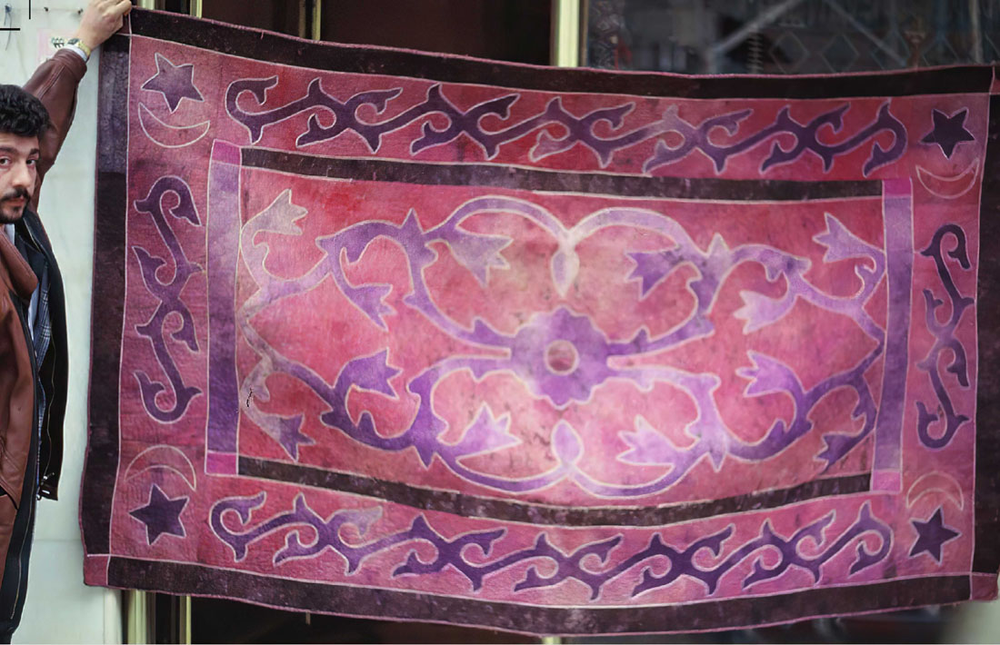
|
1994 yılında Konya'da Mehmet GİRGİÇ atölyesinde tespit edilmiş Çeçen-İnguş keçesi. |
Чечено-ингушский войлок, найденный в 1994 году в мастерской Мехмета ГИРГИГА в Конье. |
KEÇE YAPIMINA DAİR BİR EFSANE |
Легенда о производстве войлока |
|
Keçenin ilk yapımıyla ilgili olarak Anadolu’nun çeşitli bölgelerinde anlatılan bir rivayete göre Hallac-ı Mansur bir minder yapmak için bez içerisine yün koyarak tepmeye başlar. Bu işlemi bir müddet yaptıktan sonra keçenin sıkışmadığını görür. Tekrar yünü bez içerisine sararak tepmeye başlar ve bezi açtığında yünün yine keçeleşmediğini görür. Bunun üzerine çok üzülerek ağlamaya başlar, akan gözyaşlarının yünün üzerine düştüğü yerlerde keçeleşmenin olduğunu görür ve sıkışmanın nemlendirme sonunda gerçekleştiğini düşünerek, yünün tümünü ıslatarak tepmeye başlar. Bezi açtığı zaman yünün her yerinde sıkışma olduğunu görür ve böylece keçe yapmayı bulur. Başka bir efsane de bu rivayetle büyük benzerlikler gösterir. Buna göre; keçeciliğin kurucusu Abdulmuttalip adındaki bir pir-i fanidir. Abdulmuttalip keçecilerin piri, Hallac-ı Mansur’da hallaçların piri olarak kabul edilir. Efsaneye göre; Abdulmuttalip yünü ayağında çiğneyerek, teperek keçe yapmaya çalışır. Fakat beceremez. Çünkü bu işin sırlarını bilmemektedir. Yünün kabardığını, keçeleşmediğini görerek üzülür ve kendi kendine hayıflanır. Düşünür taşınır bu işe bir çare bulamaz. En sonunda çaresizlikten oturur içlenerek ağlamaya başlar. Gözyaşları kabaran yünlerin üzerine akar. Gözyaşı ile ıslanan yün keçeleşmeye başlar. Bunu gören Abdulmuttalip çok sevinir. Zamanla diğer işlemleri de bularak keçe yapımını gerçekleştirir. |
Согласно слухам, связанным с первым производством войлока в различных регионах Анатолии, Халлак-ı Мансур начинает пихать шерсть в ткань, чтобы сделать подушку. Проделав это некоторое время, он видит, что войлок не застревает. Он снова начинает бить, заворачивая шерсть внутрь ткани, и когда ткань раскрывается, он видит, что шерсть снова не спуталась. При этом он начинает очень грустно плакать, видит, что в местах, где слезы падают на шерсть, есть маты, и думает, что сжатие наступило в конце увлажнения, он начинает намокать всю шерсть и начинает отталкивать. Когда он расстегивает подгузник, он видит, что шерсть замята, и таким образом находит войлок. Другая легенда показывает большое сходство с этим повествованием. Согласно этому; Основоположником изготовления войлока является фанат пир-и по имени Абдулмутталип . Абдулмутталип считается мастером мастеров по изготовлению войлока и мастером уборной в Халлак-и-Мансур . Согласно легенде; Абдулмутталип жует шерсть на ногах и пытается дать почувствовать себя ногами. Но он не может. Потому что он не знает секретов этого дела. Видя, что шерсть вздулась и не спуталась, он сожалеет и жалеет о себе. Мыслитель не может найти решения этой работе. Наконец, он от отчаяния садится и начинает плакать. Слезы текут по покрытой волдырями шерсти. Мокрая от слез шерсть начинает матироваться. Видя это, Абдулмутталип очень обрадовался. Со временем он находит другие процессы и реализует производство войлока. |
MOTİFLENDİRME TEKNİKLERİ |
МЕТОДЫ МОТИФИЗАЦИИ |
|
Yunün keçeleşmesi sırasında meydana gelen biçimlenme özelliğine bağlı olarak birçok motiflendirme tekniği geliştirilmiştir. Ancak bu konuda yapılan bazı çalışmalara öncelikli olarak değinmek gerekir. Bu konuda Burkett, batıda keçe üzerine yazılmış en önemli eserlerden birisi olan kitabında sekiz tane keçe tekniğinden bahsetmektedir (48). Bu teknikler; 1. Keçenin tamamının motiflendirildiği, adeta mozaik etkisi verilmiş keçe tekniği, 2. Boya ile yapılan süslemelerle tamamlanmış keçe tekniği, 3. Renkli bir tabaka keçe üzerine, kenarları testere dişi gibi kesilerek şekillendirilmiş kontrast renkli başka bir keçenin monte edilmesiyle oluşan keçe tekniği, 4. Keçe yüzeyinin üzerine, keçe parçaları, pamuklu, ipekli, metal plakalar, kabuklar, deri ve başka materyallerin aplike olarak uygulanması ile oluşan keçe tekniği, 5.Küçük parçaların mozaik gibi birbirlerine tutturularak, eski dikiş izlerini gizlemek için keçenin üzerine dikişle birleştirilmesiyle oluşan keçe tekniği. 6. Keçenin üzerindeki bütün motiflerin her iki kenarını çepeçevre saran ipek ve kordonların kullanıldığı keçe tekniği. 7. Genellikle zig-zag çizgili veya spiral biçimler halinde yapılan dikişlerle oluşturulan keçe tekniği. 8. Çeşitli türdeki çiçek, hayvan ve insan gibi figüratif desenlerin tamamen işlemeyle yapıldığı keçe tekniği. |
В зависимости от формообразующей характеристики шерстяного валяния было разработано множество техник мотивов. Однако в первую очередь следует упомянуть некоторые исследования по этой теме. В связи с этим Беркетт упоминает восемь техник войлока в своей книге, одной из самых важных работ, написанных по войлоку на западе (48). Эти методы; 1. Фетровая техника, при которой весь фетр украшен мозаичным эффектом. 2. Фетровая техника с украшениями, сделанными краской. 3. Фетровая техника, образованная путем установки другого контрастного цветного фетра, сформированного путем обрезания краев, как зубцы пилы, на цветном слое фетра. 5. Войлочная техника, при которой куски фетра, хлопка, шелка, металлических пластин, панцирей, кожи и других материалов накладываются на поверхность фетра. 5. Фетровая техника, при которой на фетре сшиваются вместе маленькие кусочки, чтобы скрыть старые следы стежков. 6 . Техника войлока с использованием шелка и шнуров, которые охватывают с обеих сторон все мотивы на фетре. 7. Войлочная техника, создаваемая стежками, как правило, в виде зигзагообразных полос или спиралей. 8. Войлочная техника, при которой фигурные узоры, такие как цветы, животные и разные люди, выполняются исключительно вышивкой. |
|
Keçe motiflendirme tekniklerinin Burketf in sıraladığı bu gruplandırmada, sadece elde edilen keçe örneklerin biçimsel özellikleri dikkate alınarak ve görsel açıdan yapılan bir sınıflandırma olduğu gözden kaçmamaktadır. Şüphesiz bir çok el sanatı tasnifinde biçimsel özelliklerin dikkate alınması genel bir anlayışla kabul edilmiş doğru bir yöntemdir. Ancak ”keçe” ile yapılan el sanatı örneklerinde, malzemenin kendisinden kaynaklanan bir özellik sebebiyle sadece biçimsel açıdan yapılmış tasnif veya sınıflandırmaların teknik açıdan eksik kaldığı görülmektedir. Örneğin; “Aplike” ve “Enkrüste” gibi iki farklı teknikle yapılmış olmalarına rağmen, biçimsel görüntü olarak çok benzeyen örnekler malzeme incelenmeden sadece gözlemle birbirlerinden kolaylıkla ayırt edilemezler. Sadece bu durum bile ”keçe motiflendirme tekniklerinin” yeniden tasnifi ve gruplandırılmasını zorunlu kılmaktadır. Diğer bir deyişle, sadece biçim ve görüntü özellikleri dikkate alınarak yapılacak gruplandırmalar eksik ve yanıltıcı olacağından, keçe motiflendirme tekniklerinin gruplandırılması sırasında, keçenin ham malzeme olarak üretim veya yapılış özelliklerini dikkate alma zorunluluğu vardır. Buna göre keçe motiflendirme teknikleri ni genel olarak üç ana grup altında incelemek mümkün görünmektedir; |
Нельзя упускать из виду, что в этой группировке техник войлочных мотивов, перечисленных Буркетфом, это классификация, сделанная только с учетом формальных особенностей образцов войлока и визуально. Несомненно, учет формальных особенностей во многих классификациях ремесел — это правильный метод, принятый с общим пониманием. Однако в ручных образцах, изготовленных из «войлока», видно, что классификация или классификация, выполненная только по форме, технически неполна из-за особенности, проистекающей из самого материала. Например; Хотя они изготавливаются с использованием двух разных техник, таких как «Аппликация» и «In Cruste», образцы, которые очень похожи по внешнему виду, нельзя легко отличить друг от друга простым наблюдением без исследования материала. Одна только эта ситуация требует переклассификации и группировки «техник войлочных мотивов». Другими словами, поскольку группирование, которое должно быть выполнено с учетом только формы и свойств внешнего вида, будет неполным и вводящим в заблуждение, существует обязательство учитывать производственные или производственные свойства войлока в качестве сырья во время группирования техник войлочных мотивов. Соответственно, представляется возможным разделить технику войлочных мотивов на три основные группы; |
|
(48) BURKETT, a.g.e., s.25. |
(48) BURKETT, выше, стр.25. |
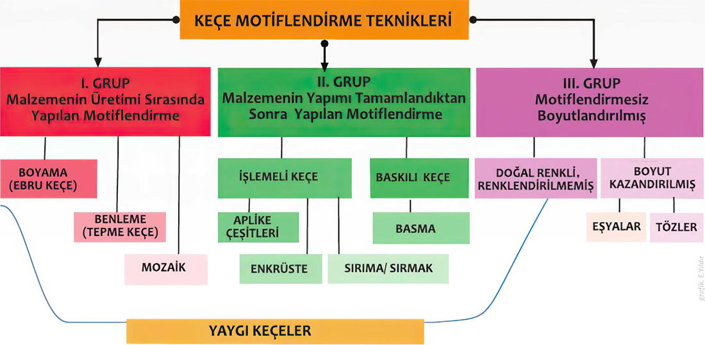
|
KEÇE MOTİFLENDİRME TEKNİKLERİ |
МЕТОДЫ МОТИФИЗАЦИИ УПЛОТНЕНИЯ |
|
I. GRUP Malzemenin Üretimi Sırasında Yapılan Motiflendirme |
I ГРУППА. Мотив, созданный при производстве материала |
|
II. GRUP Malzemenin Yapımı Tamamlandıktan Sonra Yapılan Motiflendirme |
II ГРУППА. Мотив, созданный после изготовления материала группы |
|
III. GRUP Motiflendirmesiz Boyutlandırılmış |
III ГРУППА. Без мотивов размера |
|
BOYAMA (EBRU KEÇE) |
ЖИВОПИСЬ (ФЕТР EBRU) |
|
İŞLEMELİ KEÇE |
ВЫШИВАННЫЙ ВОЙЛОК |
|
BASKILI KEÇE |
НАПЕЧАТАННЫЙ ВОЙЛОК |
|
DOĞAL RENKLİ, RENKLENDİRİLMEMİŞ |
НАТУРАЛЬНО ЦВЕТНОЙ, НЕЦВЕТНОЙ |
|
BOYUT KAZANDIRILMIŞ |
РАЗМЕР ЗАРАБОТАННЫХ |
|
BENLEME (TEPME KEÇE) |
БЕНЛИНГ (СЕНСОРНЫЙ ВОЛОК) |
|
APLİKE ÇEŞİTLERİ |
ВИДЫ ПРИМЕНЕНИЯ |
|
BASMA |
РАСПЕЧАТАТЬ |
|
EŞYALAR |
ВЕЩИ |
|
TÖZLER |
СЛОВА |
|
MOZAİK |
МОЗАИКА |
|
ENKRÜSTE |
НЕВЕРОЯТНО |
|
SIRIMA/ SIRMAK |
СИРИМА / СИРАК |
|
YAYGI KEÇELER |
ОБЫЧНЫЙ ВОЙЛОК |
|
1. Grup: Malzemenin üretimi sırasında motiflendirilen keçe teknikleri; Bu teknik de kendi içerisinde üçe ayrılır; A. Yapım aşamasında, boya kullanılarak veya daha önceden boyanmış renkli yünlerle motiflendirme yapılan BOYAMA veya EBRU keçe motiflendirme tekniği. B. Renkli yün parçalarının ”ben” denilen motifler oluşturularak döşenmesi ile oluşan BENLEME (49) keçe motiflendirme tekniği. C. Renkli kare, üçgen veya başka şekillerdeki yün yumaklarının arada boşluk kalmayacak bir biçimde yan yana dizilerek motiflendirme yapılan MOZAİK tekniği. Ki bu teknik gerçek keçe mozaik tekniği olarak, keçe yüzeyinin her iki tarafında da aynı görüntüye sahiptir. |
1-я группа: Техника валяния, используемая при производстве материала; Эта техника также делится на три; A. КРАСКА или техника войлочных мотивов EBRU , используемая на этапе строительства, с использованием краски или предварительно окрашенной цветной шерсти . B. BENLEME (49) Техника мотивирования войлока, образованная путем укладки кусочков цветной шерсти с образованием мотивов, называемых «I» . C. МОЗАИКА , при которой цветные квадраты, треугольники или шерстяные шарики другой формы располагаются рядом без промежутков . Эта техника, как и настоящая фетровая мозаика, имеет одинаковый вид с обеих сторон фетровой поверхности. |
|
2. Grup: Malzemenin yapım aşaması tamamlandıktan sonra motiflendirilen keçe teknikleri; A. Farklı renklerdeki keçe veya başka malzemeden yapılmış motiflerin, yine keçe bir yüzey üzerine tutturulması ile oluşan ve tek yüzü motifli olan; APLİKE keçe tekniği. B. Farklı renklerdeki keçe motiflerin oyma olarak iç içe yerleştirilmesiyle oluşan, çift yüzünde de aynı motiflerin göründüğü; ENKRÜSTE keçe tekniği. C. Motiflerin keçe yüzey üzerine sırınarak oluşturulduğu ; SIRIMA keçe tekniği. D. Motiflerin keçe yüzey üzerine işlenerek yapılmasıyla oluşan İŞLEME keçe tekniği. E. Motiflerin herhangi bir kalıpla keçe yüzey üzerine baskı yoluyla oluşturulan keçe tekniği. |
Группа 2: техники валяния, мотивы которых создаются после завершения этапа строительства материала; A. Имеющий узор на одной стороне и образованный узорами из фетра или другого материала разных цветов на фетровой поверхности; ПРИМЕНЕНИЕ войлочной техникой. Б. Он образован путем совмещения фетровых мотивов разного цвета в виде резьбы с одинаковыми мотивами с обеих сторон; ВОЛОЧЕННАЯ фетровая техника. C. Мотивы создавались растиранием на войлочной поверхности; SIRIMA чувствовал технику. D. ОБРАБОТКА Войлочная техника, образованная вышивкой мотивов на фетровой поверхности . E. Техника валяния, создаваемая печатью мотивов на фетровой поверхности любой формой. |
|
3. Grup: Üzerinde hiçbir motif kullanılmayan keçe teknikleri. A. Tek renkli yünle, yaygı ve giyim eşyası yapımında kullanılan keçe tekniği. B. Kalıpla çeşitli şekiller ve formlar verilerek, farklı amaçlarla kullanım için yapılan keçe eşya teknikleri. C. Çeşitli biçimlerdeki keçelerle üç boyutlu olarak yapılan; TÖZ keçe tekniği. |
3-я группа: Войлочная техника без мотивов. A. Войлочная техника, используемая при изготовлении циновок и одежды из однотонной шерсти. Б. Техника изготовления войлочных изделий различного назначения путем придания различных форм и форм с помощью форм. C. Сделано в трех измерениях из войлока различных форм; ТОЗ чувствовал технику. |
|
(49) Bu teknikle keçe yapımına başlanırken kalıp üzerine, daha önceden farklı renklere boyanarak kurutulmuş yün parçalan veya “Ben' ve ”Nakışlık.” denilen ince keçeden istenilen şekillerde kesilmiş parçalar bir motif oluşturacak şekilde düzenlenip döşenir. Daha sonra bu motiflerin üzerine koyu veya açık tondaki yünler serpilir, rulo yapılır ve keçenin yapımına başlanır. Bu tekniğin ismi tarafımızdan önerilmektedir. Çeşitli yörelerde konuştuğumuz keçe ustalan ve bazı kaynaklar bu tekniği yanlış veya eksik bir ifade olarak bazan ”tepme keçe”, bazan ”döşeme keçe”, bazan ”nakış”, bazan ”haşlama” bazan da ”pişirme'olarak adlandırmışlardır. Ancak bütün bu isimler tekniğin kendine has özelliğini tam anlamıyla yansıtmadığı görülmektedir. Bilindiği üzere hemen bütün keçe tekniklerinde ”tepme”, haşlama” ve ”pişirme işlemi gerçekleştirilmektedir. Yine döşeme işlemi de ayrıca mozaik tekniğinde de gerçekleşmektedir. ”Nakış” ise genel bir anlam taşımaktadır. Dolayısıyla başka teknikler için de geçerli olan bu tabirlerin sadece bu teknik için kullanılması yanlış anlamlara yol açacaktır. Bu nedenle üzerinde herkesin aynı anlam birliğine varacağı keçe tekniklerinde kavram kargaşasına düşmeyeceği bir tabir olarak, Keçe ustalarının da bu tür motiflendirme tekniği ile keçe yapımı sırasında motiflendirme işlemine ”benlemek” dediklerini hatırlayarak, tekniğin kendine has bir özelliğini yansıtan ve Türkçe bir kelime olan ”Ben” kelimesinden yola çıkarak ”BENLEME ” olarak önermeyi uygun ve gerekli görüyoruz. |
(49) Начиная делать войлок в этой технике, кусочки шерсти или «Я» и «Вышивка». Вырезанные из так называемого тонкого фетра детали нужной формы укладываются и укладываются в узор. Затем на эти мотивы присыпается шерсть темного или светлого тона, скатывается и начинается производство войлока. Название этой техники предложено нами. Мастера войлока, с которыми мы общались в разных регионах, и в некоторых источниках называли эту технику иногда «войлоком», иногда «обивочным войлоком», иногда «вышивкой», иногда «кипячением», а иногда «запеканием», как неправильное или неполное выражение. Как известно, практически все техники войлока включают «кипячение», «кипячение» и «запекание». Укладка также выполняется в технике мозаики. «Вышивка» также имеет общее значение для других техник. Использование этих допустимых терминов только для этой техники приведет к неправильным представлениям. Следовательно, как выражение, которое не будет путаться в техниках войлока, в которых каждый достигнет одного и того же единства смысла, помня, что мастера войлока также называют процесс мотивирования ”отметкой” процесса войлока с помощью этого вида техники создания мотивов, Станьте турецким словом, которое отражает уникальную особенность техники Считаем целесообразным и необходимым предложить «Я ЕСМЬ» на основе слова «Я». |
Çeçen-İnguş Keçelerinin Yaygın Motiflendirme Tekniği : ENKRÜSTE |
Общая техника мотивирования чечено-ингушских войлоков: ENCRUSTE |
|
Çeçen ve İnguş keçelerinin büyük bir çoğunluğu Enkrüste Tekniği ile yapılmıştır. (Fr.:Incrustation) Bu tekniğin yapımına yaygıyı oluşturacak keçe yüzeyler üzerine, istenilen motifin bir patron-kalıp aracılığıyla çizilmesiyle başlanır. Çeçence “bustum” adı verilen bu motif keçe makasıyla kesilerek oyulur ve çıkarılır. Aynı işlem, aynı motifle farklı renkli ikinci keçe yüzeye de uygulanır. Daha sonra her iki keçe yüzeyden elde edilen motif halindeki şekillenmiş keçe parçaları dişili-erkekli olarak karşılıklı takas edilir ve tekrar iç içe yerleştirilir. Büyük bir dikkat isteyen bu teknikte püf noktası motiflerin kesiminin çok düzgün yapılmasında gizlidir. Aksi halde motiflerin karşılıklı olarak yerleştirilmeleri mümkün olmaz. Karşılıklı olarak iç içe yerleştirilen ve iki renkli bir bütün oluşturan parçalar birbirine dikilerek sağlamlaştınlır. |
Большая часть чеченского и ингушского войлока была изготовлена по технологии Enkrüste. (Фр .: Инкрустация) Создание этой техники начинается с нанесения желаемого рисунка на войлочные поверхности, которые будут формировать мат, с помощью формы-бобышки. Этот мотив, называемый на чеченском языке «бюстом», вырезан, вырезан и удален войлочными ножницами. Тот же процесс применяется ко второй фетровой поверхности с тем же рисунком и разного цвета. После этого формованные войлочные части в виде мотивов, полученные с обеих войлочных поверхностей, взаимно заменяются как охватывающая-мужская и снова соединяются вместе. Ключевой момент этой техники, требующей большого внимания, кроется в очень плавном вырезании мотивов. В противном случае невозможно будет расположить мотивы друг на друге. Части, которые расположены друг к другу и образуют двухцветное целое, сшиваются и укрепляются. |
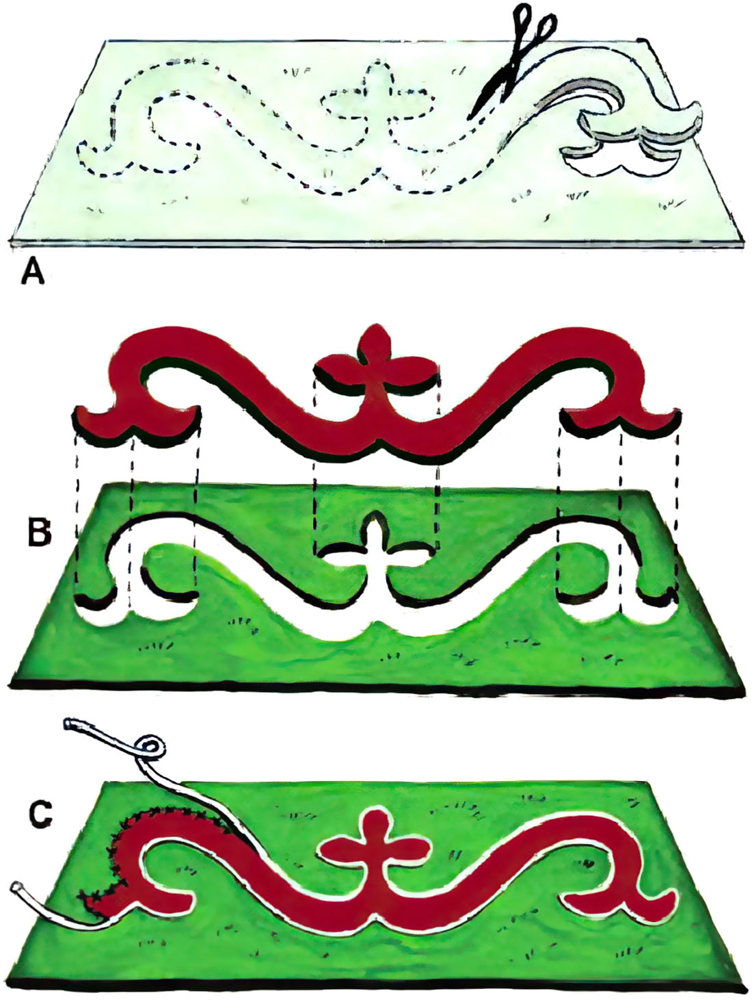
|
ENKRÜSTE TEKNİĞİ : |
НЕВЕРОЯТНАЯ ТЕХНИКА: |
|
A. Motifin çizilerek ”dişili erkekli” olarak kesilmesi. |
А. Вырезание мотива «женское и мужское» по рисунку. |
|
B. Parçaların farklı renklere boyanması. |
B. Покраска деталей в разные цвета. |
|
C. Parçaların tekrar yerleştirilerek dikilmesi ve dikiş izlerinin üzerine de ”çimçirg” şeritlerin dikilmesi. |
C. Переставление и сшивание деталей и пришивание «треска травы» на метках стежков. |
|
Genellikle aynı anda iki keçe yaygının yapıldığı bu tekniğin yapımına, farklı renklere boyanmış keçe parçalarının üzerine, oluşturulacak motifin bir patron-kalıp aracılığıyla çizilmesiyle başlanır. Aynı motif ayrı ayrı renklere boyalı farklı iki yüzeye de uygulanır. Çizilen motif keçe makasıyla kesilerek oyulur ve çıkarılır. Daha sonra her iki keçe yüzeyden elde edilen motif halindeki ikişer keçe parçası dişili erkekli olarak karşılıklı takas edilir ve tekrar iç içe yerleştirilir. Büyük bir dikkat isteyen bu teknikte püf noktası, motiflerin kesiminin çok düzgün yapılmasında gizlidir. Aksi halde motiflerin karşılıklı olarak yerleştirilmesi mümkün olmaz. Karşılıklı olarak iç içe yerleştirilen ve bir bütün oluşturan parçalar birbirine dikilerek sağlamlaştırılır. |
Как правило, производство этой техники, при которой одновременно изготавливаются два войлочных коврика, начинается с нанесения рисунка, который должен быть сформирован на войлочных деталях, окрашенных в разные цвета, с помощью бобышки-формы. Один и тот же мотив нанесен на две разные поверхности, окрашенные в разные цвета. Нарисованный мотив вырезан фетровыми ножницами, вырезан и удален. После этого две фетровые детали в виде мотивов, полученных с обеих войлочных поверхностей, заменяются как охватывающая и мужская, и снова складываются вместе. Ключевой момент этой техники, требующей большого внимания, кроется в вырезании мотивов. В противном случае невозможно разместить мотивы между собой. Части, которые переплетаются и образуют единое целое, сшиваются и укрепляются. |
|
Motifleri ve yüzeyi oluşturan parçaları birleştiren dikiş izleri üzerine, genellikle beyaz renkli veya istenilen renkte örülmüş bir kordon şerit dikilerek bu izler kapatılır. ”Çimçorg veya Çimçirg” adı verilen bu kordon şeritler elle örülerek üretilir. Motiflerin etrafını çepeçevre dolanan bu şeritler aynı zamanda keçe yaygının ön tarafını gösterir. Yüzeyin her iki tarafında da oluşan motifler nedeniyle, ön yüzeyin zamanla ışıktan etkilenerek renklerinin solması halinde yaygı keçenin arka yüzeyi çevrilir, motifler tekrar kordon şeritlerle kapatılarak kullanımına yıllarca devam edilir. |
Эти отметки закрываются путем пришивания шнурка, обычно белого или связанного желаемого цвета, на отметках стежков, которые объединяют мотивы и части, составляющие поверхность. Эти полоски шнура, называемые «imçorg или imçirg», производятся вручную. Эти полосы, которые обернуты вокруг мотивов, также показывают переднюю часть войлочного коврика. Из-за мотивов, сформированных на обеих сторонах поверхности, если на цвета передней поверхности со временем влияет свет, то задняя поверхность мата переворачивается, мотивы покрываются полосками шнура, и его использование продолжается годами. |
|
Çeçen-Inguşlardan başka Kazak ve Kırgızlar da en krüste tekniği ile keçe üretmektedirler. Margulan bu tekniği Kazak keçelerinde de tesbit ederek eserinde ilgili örneklerde belirtmiştir (50). Çeçen-İnguş keçelerinin Eskişehir, Malatya ve Adıyaman müzelerinde bulunmasına rağmen, aplike tekniği (51) olarak kabul edilmesi bu tekniğin Türkiyede yeterince bilinmediğini ortaya koymaktadır. Ayrıca bu müzelerin arşivinde bulunan ve Göksun'un Çardak ve Küçüksu köyünde yaşayan Geçenler tarafından enkrüste tekniği ile yapıldığı tespit edilen keçelerin müze envanter kayıtlarında da yeterli bilgi bulunmamaktadır. İlginçtir ki, benzer bir yanılgı da, Kafkasya'da enkrüste tekniği ile yapılmış ve Rusya müzelerinde bulunan, kaynağı bilinen keçe örneklerinin Mozaik olarak adlandırılması ile yapılmıştır (52). |
Помимо чечено-ингушей, казахи и киргизы также производят войлок с самой коркой. Маргулан также определил эту технику в казахских войлоках и привел соответствующие примеры в своей работе (50). Эскишехир чечено-ингушский войлок, хотя есть музеи в Малатья и Адыяман, техника аппликации (51) свидетельствует о том, что применение этой техники достаточно известно в Турции. Кроме того, в музейных описаниях нет достаточной информации о войлоках, обнаруженных в архивах этих музеев и сделанных прохожими, живущими в деревнях Чардак и Кючуксу в Гёксуне. Интересно, что подобное заблуждение было сделано, когда образцы войлока, изготовленные в технике инкрустации на Кавказе и найденные в российских музеях, были названы мозаикой (52). |
|
(50) A.H.MARGULAN., Kazahskoe Narodnoе Prikladnoe İskusstvo, Alma-ata 1987, s.58 ve diğer sayfalar. |
(50) А.Х.МАРГУЛАН., Казахстанское Народноц Прикладное Искусство, Алма-Ата, 1987, с.58 и другие страницы. |
|
(51) Musa SEYİRCİ., ”Keçecilik ve Malatya Çevresi...”, a.g.e., s.280. |
(51) Муса СЕЙИРЧИ., «Кечечилик и окружающая среда Малатья…», выше, стр.280. |
|
(52) Tatyana RAZINA ve diğerleri., Folk Art in the Soviet Union., Leningrad 1989, s.162. |
(52) Татьяна РАЗИНА и др., Народное искусство в Советском Союзе., Ленинград, 1989, с.162. |
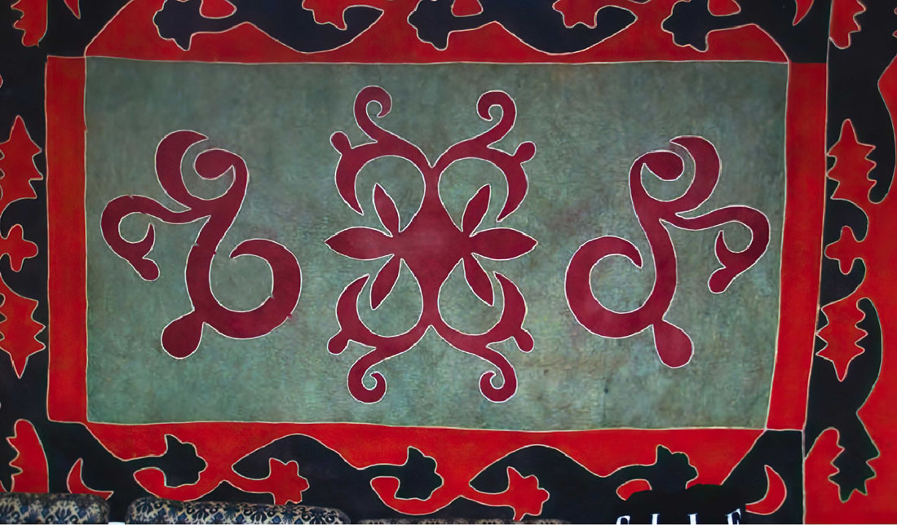
|
Çardak’ta Mustafa Bingöl Yıldır evinde tespit edilmiş keçe örneği (1999) |
Образец войлока, найденный в доме Мустафы Бингёля Елдыра в Чардаке (1999 г.) |
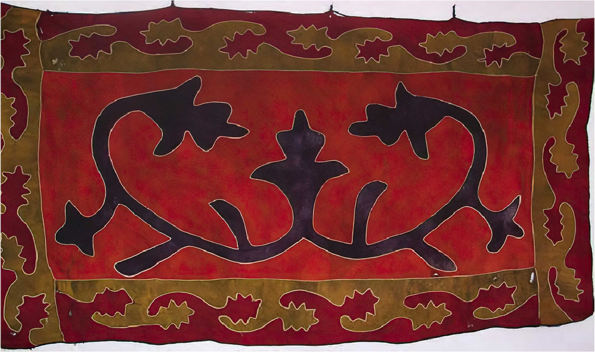
|
İstanbul’da Erol Yıldır koleksiyonunda bulunan keçe örneği (2015). |
Образец войлока из коллекции Эрол Елдыр в Стамбуле (2015). |
Mozaik Telcniği; |
Мозаичная сетка; |
|
Kafkasya’da Çeçen-lnguş toplulukları tarafından kullanılan diğer bir motiflendirme tekniği ise, uygulama olarak benleme tekniğine, çift taraflı görüntüsü açısından ise enkrüste tekniğine benzeyen Mozaik tekniğidir. Bu teknik, daha önceden farklı farklı renklere boyanmış birbirleriyle aynı büyüklükte ve orantıda olmak üzere elle hazırlanmış dikdörtgen, kare, üçgen veya başka şekillerdeki yün yumaklannın keçe kalıbının üzerine, yan yana dizilerek bir kompozisyon oluşturacak şekilde tasarlanması ile oluşur. Merkezi kompozisyonu oluşturan kare şeklindeki yün yumaklarının çevresine veya aralarına, çerçeve ve bordür olacak şekilde uzun yün yumakları yerleştirilir. Aralarında boşluk kalmayacak şekilde sıkı sıkıya birbirlerine yanaştırılan yün yumakları daha sonra, kalıpla birlikte rulo-dürüm haline getirilerek klasik keçe yapımında uygulanan aşamalardan geçirilir. |
Другой техникой мотивирования, используемой чечено-ингушскими общинами на Кавказе, является техника мозаики, которая на практике похожа на технику кодирования и на технику инкрустации с точки зрения ее двустороннего вида. Эта техника формируется путем создания прямоугольной, квадратной, треугольной или другой формы шерстяных шариков, ранее окрашенных в разные цвета, одинакового размера и пропорции, на войлочной форме, чтобы сформировать композицию, располагая их бок о бок. Вокруг или между квадратными клубками шерсти помещаются длинные клубки шерсти, образующие центральную композицию в виде рамки и каймы. Шерстяные шарики, которые плотно связаны друг с другом, так что между ними нет зазора, затем скатываются вместе с формой и проходят через стадии, применяемые в классическом производстве войлока. |
|
Kafkasya'da yaptığımız araştırmalarda Karaçay-Balkar, Kaberdey, Oset, Çeçen ve Dağıstanlılarda mozaik tekniği ile yapılan keçe yaygılara bol miktarda tesadüf edilmiştir. Ancak bu teknik Anadoludaki Çeçen-lnguş keçelerinde hemen hiç kullanılmamış veya kullanılmışsa bile bizlere ulaşmamıştır. Konya'nın Başhöyük yöresine yerleşmiş Karaçay'larda da yakın tarihlere kadar bu tür keçelerin yapıldığı bilinmektedir. Yine Enkrüste tekniğinin, Mozaik tekniğine göre daha ince bir işçilik gerektirdiğini de burada belirtmemiz gerekir. |
В ходе исследований, которые мы проводили на Кавказе, было обнаружено много войлочных циновок, выполненных в технике мозаики, у карачаево-балкарцев, кабердеев, осетин, чеченцев и дагестанцев. Однако эта техника практически не применялась или даже если ее применяли в чечено-ингушских войлоках в Анатолии, до нас она не дошла. Известно, что этот вид войлока до недавнего времени производился в Карачайе, расположенном в районе Башхёюк в Конье. Здесь мы также должны упомянуть, что техника Enkrüste требует более тонкого мастерства, чем техника мозаики. |
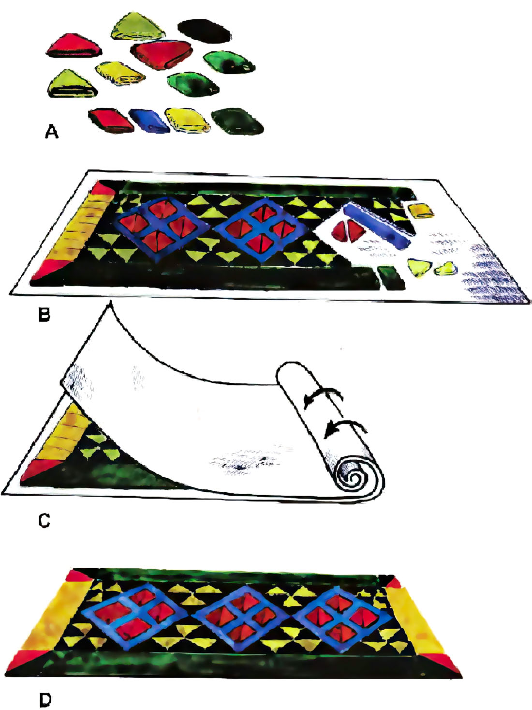
|
MOZAİK TEKNİĞİ |
МОЗАИКА |
|
A. Yüzeyi oluşturacak farklı renkli yün yumaklarının hazırlanması. |
A. Подготовка шерстяных шариков разного цвета, из которых будет формироваться поверхность. |
|
B. Renkli yumakların kalıp üzerine yanyana sıkıştırılarak yerleştirilmesi |
Б. Размещение цветных шариков на форме, сдавливая их бок о бок |
|
C. Düzenleme yapılmış yün yumaklı dürümün hazırlanıp tepme işlemine geçilmesi. |
C. Подготовка бинтов с шерстяными шариками и запуск процесса пинка. |
|
D. Tepme işleminde birbirlerine iyice kaynaşan dürümlerin mozaik keçe yaygıyı oluşturması. |
D. Создание мозаичного фетрового мата с помощью оберток, которые хорошо сочетаются друг с другом в процессе удара. |
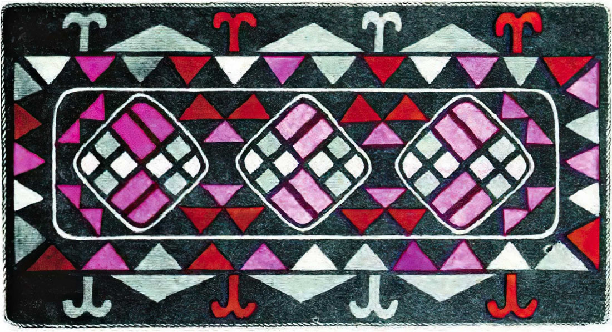
|
Mozaik tekniği ile yapılmış Karaçay Keçesi örneği. (Kuznetsova., Narodnoe Iskusstvo Karcıçaevtsev i Balkartsev, tablo.7/2) |
Образец карачайского войлока, выполненный в технике мозаики. (Кузнецова., Народное Искусство Карчачеевцев и Балкарцев, табл.7 / 2) |
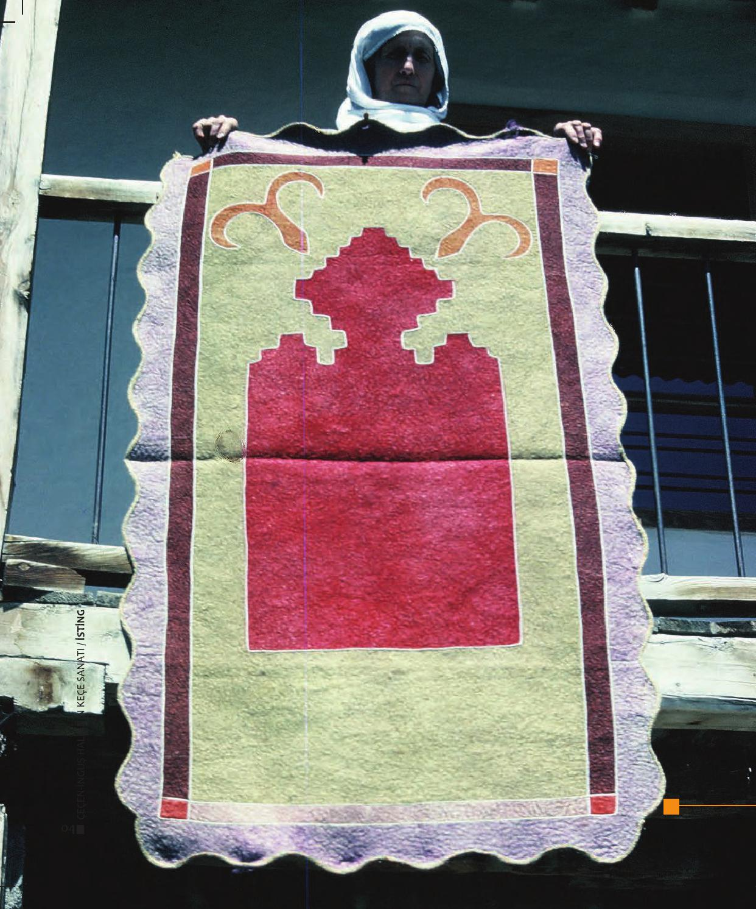
|
Kahramanmaraş / Göksün, Çardak kasabasında tespit edilmiş Çeçen keçe seccade örneği. (1988) |
Образец молитвенного коврика из чеченского войлока, найденный в городе Чардак, Кахраманмараш / Гёксюн. (1988) |
|
GORZA İSTİNG |
GORZA İSTİNG |
|
GİİNCİSH YOOL İSTANG |
GİİNCİSH YOOL İSTANG |
|
VERT |
VERT |
|
HEAÇA |
HEAÇA |
|
PEZAG |
PEZAG |
|
MAHİSI |
МАХДИ |
|
PİES / TALBA / GHOAN KHOLLAR |
ПИРОГИ / ТАЛЬБА / ГОАН ХОЛЛАР |
Yaygı Keçeler |
Балочный войлок |
|
Gorza İsting : Birçok toplumun gelenekleri arasında mevcut olan yaygı amaçlı el sanatları arasında ilk çağlardan itibaren keçe eşyalarının da yer aldığı bilinmektedir. Yaygı keçeleri çeşitli toplumlar tarafından çeşitli boyutlarda yapılarak, evlerde veya çadırlarda zeminde veya duvarda kullanılmıştır.) Ayrıca "seccade" (veya: Namazlağ) olarak kullanılan örnekleri de bu kapsama dahil edebiliriz. Çeçen-İnguşların "Gorza İsting"(:Alacalı keçe) adını verdikleri yaygı keçeler parlak ve canlı renkleri, farklı teknik özellikleri ve üzerlerinde yer alan motif ve figürleriyle bu çalışmamızın da başlıca konusudur. Yaygı keçelere; Anadolu'da ve Türkmenistan'da'Ala Keçe", Karaçay-Balkar, Kazakistan ve Kırgızistan'da "Aa Kiiz", Dağıstan'da "Burtina", Osetya'da "Nimeat", Çerkeş dillerinde ise "Vupşa" adı verilmektedir. Yaygı keçelerde kullanılan tekniklere ve kullanım alanlarına göre de çeşitli isimler verilmektedir. Buna göre; Kafkasya'da Nogay'ların halı gibi kullandıkları keçe yaygıya "Beldeme", çadırların içine astıkları üst kısımları dar -alt kısımları geniş olan keçe yaygıya "Yabur Kıygız" ve çadırın kapısının üst kısmına astıkları keçe yaygıya ise "Seppik Kıygız" adını verdiklerini görmekteyiz (53). |
Gorza İsting : Известно, что в традиции многих обществ изделия из войлока вошли и в ткацкие промыслы. Балочные войлоки производятся различными обществами в различных размерах и используются в домах или палатках на полу или на стене.) Мы также можем включить образцы, используемые в качестве «молитвенного коврика» (или: Namazlağ). Балочные маты, которые чечено-ингуши называют «Gorza İsting» (пестрый войлок), также являются основным предметом нашей работы с их яркими и яркими цветами, различными техническими особенностями, мотивами и рисунками на них. Войлок балочный; Он называется «Ала Кече» в Анатолии и Туркменистане, «Аа Кииз» в Карачаево-Балкаре, Казахстане и Кыргызстане, «Буртина» в Дагестане, «Нимеат» в Осетии и «Вупша» на черкесских языках. Различные названия даны в зависимости от техники, используемой в войлоках, и областей их использования. Соответственно, войлочный коврик «Бельдеме», используемый ногайцами на Кавказе в качестве ковра, войлочный коврик с узкими верхними частями и широкими нижними частями, «Ябур Кыйыгыз» и дверь палатки. Мы видим, что войлочный коврик, который вешают на верхнюю часть, они называют «Сеппик Кыгыз». (53). |
|
Giinciş yool isting / Çeçenlerin bir tür pösteki şeklinde tüylü ve saçaklı olarak ürettiği ”Giinciş yool isting” denilen yaygı keçeler de bu tür keçe örnekleri arasında ele alınabilir. Genellikle yer yaygısı ve seccade olarak, yünün orijinal renginde veya tek renkli olarak yapılan ”giinciş yool isting”ler yakın zamanlara kadar üretilmişlerdir. |
Вата войлока называемого «Giinciş Yool ПТО» производство чеченцев с волосатым и полосами в виде своего рода флис можно считать одним из примеров такого войлока. До недавнего времени производились «тряпки», которые обычно делаются в виде ковриков для пола и молитвенных ковриков, в первоначальном цвете шерсти или в монохромном цвете. |
|
(53) A ADBERCİYEVA., ”Noğay Keçesi”, Türk Soylu Halkların.., Ankara 1998, s.23. |
(53) А. АДБЕРЧИЕВА., «Ногай Кечеси», Турецкие благородные народы .., Анкара, 1998, с. 23. |
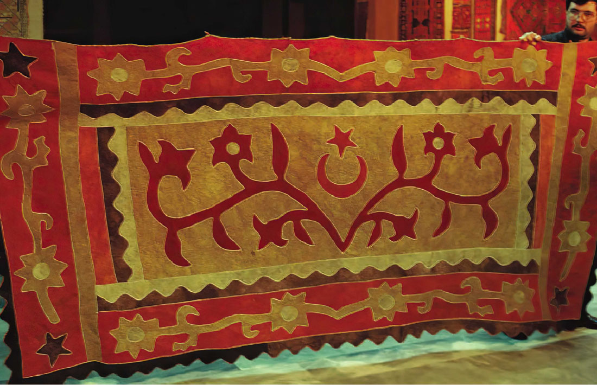
|
Konya’da ”Halıhan a.ş./ Hakan Tazecan” koleksiyonunda tespit edilmiş Çeçen keçe yaygısı (1991) |
Чеченский войлочный коврик из коллекции ”Halıhan Inc. / Hakan Tazecan” в Конье (1991 г.) |
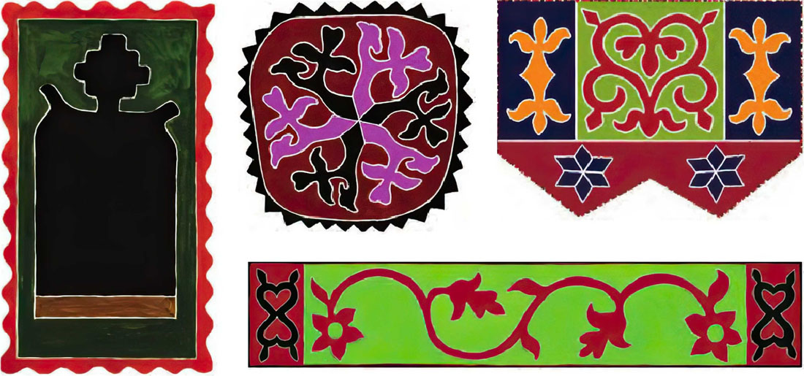
|
Farklı amaçlar için, farklı yörelerde ve tarihlerde Çeçen, Avar ve Kabardeylerce yapılmış keçe yaygı örnekleri. |
Образцы войлочных циновок, изготовленных чеченцами, аварцами и кабардинцами для разного назначения, в разных регионах и датах. |
|
Çeçenya ve İnguşetya'da yüzlercesi bulunan kule tipi yüksek taş yapıların yalıtımında ve dekorasyonunda bu tür yaygı keçeler kullanılıyordu. Günlük ev yaşantı içerisinde kullanım alanına göre değişen keçe yağıları ise şöylece sıralayabiliriz. Kullanım alanına göre şekillendirilerek ince uzun bir görünüme kavuşan ”Sedir (:makat)” ve ”Yolluk” keçeler, çarşaf altına veya yorgan üzerine konulmak üzere sırınmış keçe yaygı türü olan ”Yatak” veya ”Yorgan'keçeleri, küçük kçeçe parçalarının değerlendirilmesi sonucu elde edilen ”minder”, ”paspas”, ”örtü” keçelerini de bu tür yaygı keçeler içerisinde saymak mümkündür. |
Такие маты использовались при утеплении и отделке высоких каменных сооружений башенного типа, существующих в Чечне и Ингушетии. Мы можем перечислить войлочные масла, которые различаются в зависимости от области использования в повседневной жизни, следующим образом. Фетры ”Кедр (: казенная часть)” и ”Бегущий”, которые имеют форму в соответствии с областью использования и имеют тонкий и длинный вид, фетры ”Кровать” или ”Лоскутное одеяло”, которые представляют собой глазурованные войлочные маты, которые кладут под простыни или на лоскутное одеяло, получают путем оценки небольших кусочков войлока. К таким матам можно отнести «подушечный», «матовый», «покровный» войлок. |
|
Yakın tarihlere kadar Anadoluda Çeçen düğünlerinde gelin arabaları renkli keçe yaygılarla süslenir ve donatılırdı. Hatta bazı düğünlerde bu keçeler gençlere hediye veya anmalık olarak verilirdi. Çeçen kızları evlendiklerinde yeni yuvalarına giderken yanlarında en azından bir adet yaygı keçe de götürürlerdi. Anadoluda derlediğimiz, Avar ve Çerkes köylerindeki bazı yaygı keçe örneklerinin bu köylere gelin gelen çeçen kadınları tarafından beraberlerinde getirdikleri de tarafımızdan tespit edilmişti. |
До недавнего времени на чеченских свадьбах в Анатолии свадебные автомобили украшали и оснащали цветными войлочными ковриками. На некоторых свадьбах эти войлоки дарили молодым людям в качестве подарков или сувениров. Когда чеченские девушки выходили замуж, по дороге в новый дом они приносили с собой хотя бы один коврик. Также нами было установлено, что некоторые образцы матового войлока из аварских и черкесских сел, которые мы собрали в Анатолии, были привезены чеченскими женщинами, приезжавшими в эти села. |
Keçe Giyim Eşyaları |
Войлочная Одежда |
|
Keçenin, insanoğlu tarafından ilk kullanım amacının ”giyinme” olduğunu, zamanla bu malzemenin işlevsel yönlerinin çeşitliliği ve yapımının kolaylığı gibi etkenlerle vazgeçilmez bir meta özelliği kazandığını biliyoruz. Çok yakın tarihlere kadar keçeden üretilmiş giysiler yaygın bir şekilde günlük hayattta kullanılmaktaydı. |
Мы знаем, что люди в первую очередь используют войлок для ношения, и со временем этот материал приобрел незаменимый товарный вид благодаря таким факторам, как разнообразие функциональных аспектов и простота производства. До недавнего времени в повседневной жизни широко использовалась одежда из войлока. |
|
Tarihi kaynaklarda, keçenin giyimlik malzeme olarak kullanılmasına ait birçok bulgu vardır. 1950'li yıllara kadar Anadoluda Muş yöresinde yaşayan Osetler, çocukları için yünün doğal renginde ”Tune” denilen bir keçe giysisi üretiyorlardı (54) . Benzer giysiler Göksun ve Uzunyayla yöresinde yaşayan Çeçenlerde de yaygın olarak yapılmaktaydı. Keçeden veya keçeleştirilmiş kaba yün dokumadan yapılan önü açık, kolu yırtmaçlı, yelekle ceket arası bir giyim eşyası olan ”Aba” eskiden Anadolu'da yaygın olarak kullanılırdı. Türk Halk kültüründe “aba” ile ilgili çok çeşitli deyim ve atasözleri bulunur ve bu kelime birçok bölgede keçe ile aynı anlamda da kullanılmaktadır. |
В исторических источниках есть много сведений об использовании войлока в качестве материала для одежды. До 1950-х годов осетины, жившие в районе Муш в Анатолии, производили для своих детей войлочную одежду под названием «Тюн» естественного цвета шерсти (54). Подобная одежда также широко использовалась среди чеченцев, проживающих в Гёксунском и Узуняйлинском районах. В прошлом в Анатолии широко использовались «Аба» — открытый перед, разрез на рукаве, жилет и жакет из войлока или матовой грубой шерсти. В турецкой народной культуре существуют различные идиомы и пословицы об «абе», и это слово используется в том же смысле, что и во многих регионах. |
|
Vert / Kepenek: Çeçen-İnguşların ”Vert” veya “Fert” dediği keçe kıyafetler, omuza atılan koruyucu bir giysi çeşidi olarak üretilir. Kafkasya'da yaşayan toplumlarda ”Kıakıo-Tşakıue”, ”Gebeneç”, ”Yamçı” ve ”Burka” gibi isimler de alan bu giysinin tüylü olarak farklı çeşitleri yapılır. Bir çok toplum tarafından keçe malzeme kullanılarak ve benzer şekillerde yapılan bu giysiler Çeçen-lnguşlarda sadece çobanlar tarafından değil, halkın hemen her kesiminin kullandığı bir giyecek türü olarak yapılmaktadır. |
Верт / Кепенек: Войлочная одежда, которую чечено-ингуши называют «верт» или «ферт», производится как вид защитной одежды, набрасываемой через плечо. В обществах, живущих на Кавказе, различные разновидности этой одежды, которые носят такие названия, как «Кыакио-Тшакыуэ», «Гебенеч», «Ямчи» и «Бурка», изготавливаются из перьев. Его изготавливают не только пастухи, но и как вид одежды, используемый почти всеми слоями населения. |
|
Kafkasya'da bu tür giysilerin imalatının antik çağlara kadar dayandığı. Büyük İskender zamanında siyah renkli yamçılann savaş giysisi olarak kullanıldığı ve ortaçağdan itibaren bu giyeceğin yaygın olarak günlük hayatta kullanılmaya başlandığından bazı kaynaklarda bahsedilmektedir. Bu konudaki bir Dağıstan atasözünde ”Erkeğin ilk evi yamçısı, ilk silahı kamasıdır denilmektedir. Çar omlarının subayları özellikle Dağıstanın Audi bölgesinde yapılan ”Andinskaya Burka” denilen bu giysileri çok beğenmiş ve günlük kullanımda tercih etmişlerdi (55) . |
Производство такой одежды на Кавказе восходит к глубокой древности. В некоторых источниках упоминается, что во времена Александра Великого военная одежда черного цвета использовалась как военная одежда, а со времен Средневековья эта одежда широко использовалась в повседневной жизни. В дагестанской пословице на эту тему говорится, что «первый дом человека — это пожарный, его первое оружие — клин . Царским офицерам особенно нравилась эта«андинская бурка», сделанная в районе Ауди Дагестана, и они предпочитали ее для повседневного использования (55). |
|
1992 yazında Çeçenyada bu tür giysiler hakkında konuştuğumuz kişilerin bizlere, ”(Eskiden) Yamçının makbul sayılması için, bir atlının yamçılı olarak giderken onu düşmanın sıktığı kurşunlardan koruması gerektiğini, düşmanın kurşununun deldiği yamçıların değersiz kabul edilerek hayvanlara teğelti yapıldığını” biraz abartılı da olsa söylediklerini buraya ilave etmemiz gerekir. |
Летом 1992 года люди, с которыми мы говорили о такой одежде в Чечне, говорили нам: «(В прошлом) для того, чтобы батат считался желательным, всадник должен защищать его от пуль, выпущенных противником, пока он идет в качестве яммена, что пожарные, пробитые вражескими пулями, считаются бесполезными, а на животных нападают , хотя и с преувеличением. мы должны. |
|
(54) Bu bilgi Murat DUMAN aracılığı ile Halis AŞATEY'den (80) derlenmiştir. İstanbul 2002. |
(54) Эта информация была получена от Халиса ААТЕЯ (80) через Мурата ДУМАНА. Стамбул 2002. |
|
(55) Musa RAMAZAN, Dağıstan ve Laklar, İstanbul 2002, s.42. |
(55) Муса РАМАЗАН, Дагестан и Лаклар, Стамбул, 2002, с. 42. |
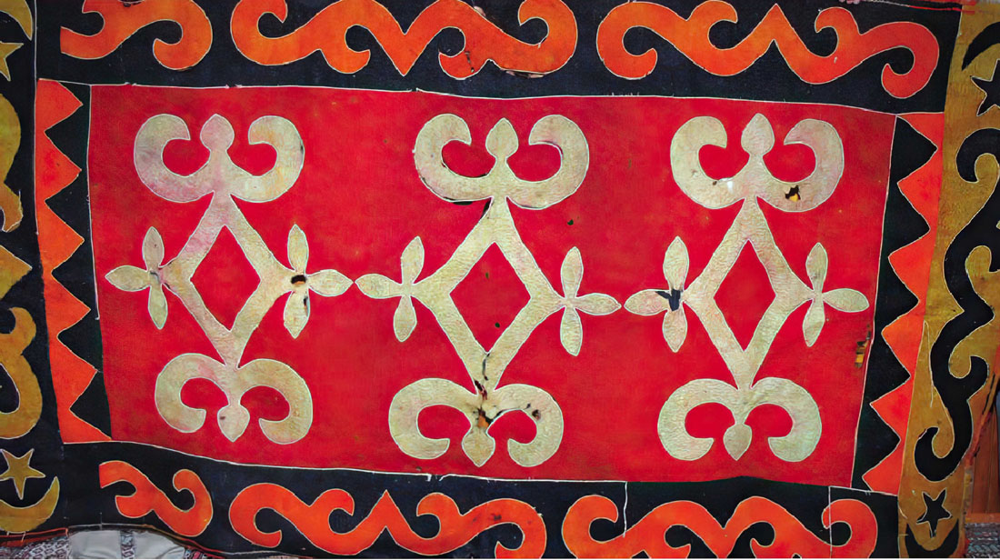
|
Konya, Beyşehir’de Hamidiye camiinde tespit edilmiş inguş keçesi örneği (Fotograf: Selman Beştoy) |
Образец ингушского войлока найден в мечети Хамидие в Бейшехире, Конья (Фото: Селман Бештой) |
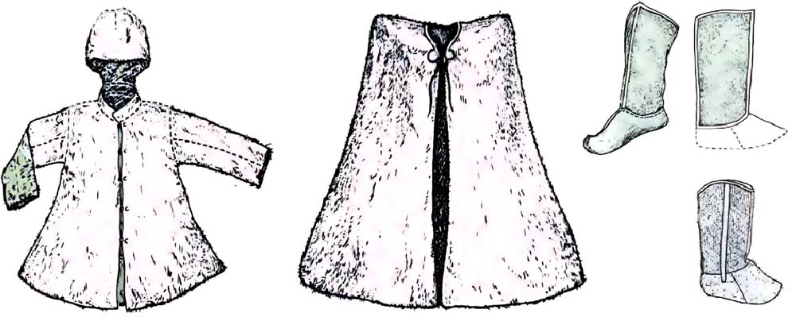
|
Kuzey Kafkasya’da keçeden yapılmış giyim eşyalarından örnekler ( Studenetskaya., Odejda Narodov Severnogo Kavkaza — XVII-XX.vv., ris.11-14) |
Примеры одежды из войлока на Северном Кавказе (Студенецкая., Одежда Народов Северного Кавказа — XVII-XX.вв., Рис. 11-14) |
|
Türkiye'de daha çok açık havada kalma zorunluluğu olan çobanların giydikleri, kalın keçeden yapılan ve bütün vücudu baş dışarıda kalmak suretiyle kapatan, kolsuz ve yensiz kalın kaput veya pelerinvari bir giysi türü olan ”kepenek”, eski bir geleneğin temsilcisi olarak günümüze kadar ulaşmıştır. Kepeneğin halen yapımı keçe üretilen yer ve toplumlarda devam etmektedir. Örneğin Macaristan’da keçeden yapılan ve daha çok kaftan ile paltoya benzeyen, uzun kollu üzeri parlak renklerle işlemeli olarak yapılan ve Türkçe'deki kepenek benzeri bir kelime olan ”Köpönyeg” adı verilen erkek giysileri de kepenek türleri arasındadır. Yine İran'da yaşayan Kürt topluluklarında görülen ”Kulabal” denilen giysileri de bu çeşitler içerisine dahil edebiliriz. |
Они носят пастухи, которые должны оставаться в Турции в основном на открытом воздухе, из толстого войлока и закрытые, оставляя за пределами головы все тело, руки и сарафаны, толстый капюшон или пелеринвар с одеждой, подобной «плащам», дошедшей сегодня как представителю древней традиции. Производство отрубей все еще продолжается в тех местах и обществах, где производят войлок. Например, мужская одежда под названием «Köpönyeg», что в переводе с турецкого напоминает kepenek, сделана из войлока, которая больше похожа на кафтан и пальто, с длинными рукавами и расшитая яркими цветами, и относится к типам kepenek в Венгрии. Мы также можем включить в эти разновидности одежду под названием «кулабал», которая встречается в курдских общинах, живущих в Иране. |
|
Beğigıan Kıy — Mangıal kıy /Keçe Başlık: Kafkasya'da yaşayan çeşitli topluluklar gibi Çeçen-İnguşlar da ”Beğigıan Kıy” veya ”Mangıal kıy” denilen püskülsüz ve gölgelik kenarları aşağıya doğru kıvrık olan keçe başlıklar kullanıyorlardı. Ancak bu başlıklar anadoluya gelindikten sonra kullanılmamışlardı. |
Бегигиан Кый — берег Мангыала / Фетровое изголовье: Как и другие общины, живущие на Кавказе, чечено-ингуши также использовали войлочные головы без кистей, называемые «Бегигиан Кый» или «Берег Мангыала», и края полога которых были загнуты вниз. Однако после приезда в Анатолию эти титулы не использовались. |
|
Heaça / Keçe Pantolon : Kafkasya'da keçeden yapılmış türlü şekillerdeki erkek pantolonları yakın zamanlara kadar çeşitli topluluklar tarafından kullanılmıştır. 1960'lı yıllara kadar Anadolu'da yaşayan Geçenlerde bu tür malzemeden üretilmiş ve ”Heaça” denilen kıyafetlerin kullanıldığı yörede yapılan araştırmalarda bilgi notu olarak derlenmiştir. |
Брюки Heaça / Felt: мужские брюки из войлока различных форм до недавнего времени использовались различными сообществами. Проживая в Анатолии до 1960-х годов, он был составлен как информационная записка в ходе исследований, проведенных в регионе, где использовалась одежда из этого типа материала, названная «Heaça». |
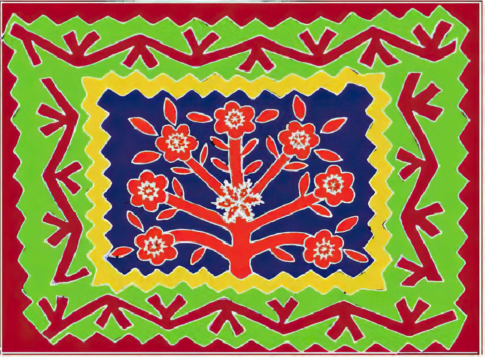
|
İnguş Akademisyen Dr.Havva AKİEVA tarafından Batslar arasında tespit edilmiş keçe örneği. (Eser, 1992 yılında Grozniy’de yaptığımız görüşmede Dr. Akiyeva’nın verdiği siyah-beyaz fotograftan yararlanılarak tahmini olarak renklendirilmiştir) |
Образец войлока, идентифицированный ингушским академиком Хаввой АКИЕВОЙ среди летучих мышей. (Работа оценивалась по черно-белой фотографии, предоставленной доктором Акиевой во время нашего интервью в Грозном в 1992 году) |
|
Pezag / Manisi / Tozluklar ve Çoraplar: Çeçenlerin ”Pezag”veya”Pezg” adını verdikleri keçeden yapılmış dizden aşağısını kaplayan tozluklar çizme çizme işlevini görürken keçeden yapılmış ”Mahisı” denilen çoraplar da yaygın olarak kullanılıyordu. Benzer tozluklar yakın zamanlara kadar çeşitli Kafkas toplulukları arasında da yaygın olarak kullanılmıştı. Bu tozluklara, Adigeler ”Lıey” veya ”Lıay”, Karaçaylar ”Işim”, Osetler ”Zaengoy” adını veriyorlardı. Aynı zamanda avrasya steplerinde yaşayan farklı kültürlerin de ortak karakteri olarak dikkat çeken bu eşyalar Pazırık ve Noin Ula kurgan buluntuları arasında yer almaktaydı. |
Пезаг / Маниси / Леггинсы и носки: чеченцы называли «Пезаг» или «Пезг», подколенные гетры из войлока выполняли функцию сапог, также широко использовались носки из войлока «Махиси». Подобные гетры до недавнего времени широко использовались в различных кавказских общинах. Эти лосины адыги называли «лей» или «алий», карачаевцы — «исим», осетины — «заенгой». В то же время эти предметы, привлекающие внимание как общий характер разных культур, живущих в евразийских степях, были среди вымышленных находок Пазырыка и Ноин-Улы. |
|
İçmik- Talba / Pies / Goan khollar / Keçeden Yapılmış At Koşum ve Binit Malzemeleri: Çeçen-İnguş kültüründe büyük öneme sahip "Govr" denilen binek at'ların ve çeşitli binek hayvanlarının koşum takımlarında da keçe malzemeler yakın zamanlara kadar kullanılmıştı. Buna göre; Çeçence "Nüyr'veya "Hıo" denilen eğerin üzerine keçeden yapılan üstü deri kaplı ve 60 x 50 cm boyutlarındaki "İçmik" veya "Talba" adı verilen, Türkçe "Teğelti" denilen bir tür eğer minderi konuluyordu. Bazı koşum takımlarında teğeltiden önce atın sırtına konulan Türkçede "Belleme-Ter keçesi" veya "Terlik" denilen dörtgen şeklinde beyaz bir keçe ye ise Çeçence "Pies" adı veriliyordu. Anadolu’da yakın tarihlere kadar kullanılan ve Türkçe "Alık" adı verilen atların sırtına geceleri üşümemeleri için örtülen keçe örtülere ise Çeçence "Khollar" veya "Goan khollar" denilmekteydi. |
Ичмик-Талба / Пироги / Гоанский холлар / Конная сбруя и войлочные материалы: Войлочные материалы также использовались в упряжи для верховых лошадей и различных верховых животных, называемых «Говр», которые до недавнего времени имели большое значение в чечено-ингушской культуре. Согласно этому; В чеченском «Nüyr» или «Hıo» на спину лошади перед касательной кладут подушку из войлока, обтянутую кожей, размером 60 х 50 см, называемую «İçmik» или «Talba», по-турецки «Teğelti». По-турецки прямоугольный белый войлок под названием «Belleme-Sweat Felt» или «Terlik» назывался по-чеченски «пирогами». Войлочные покрывала, которые использовались в Анатолии до недавнего времени и назывались «алик» по-турецки, накидывались на спины лошадей, чтобы они не мерзли ночью. По-чеченски их называли «холлар» или «гоанский холлар». |
|
Çeçen kültüründe keçe malzemeler bir çok alanda olduğu gibi, kırık ve burkulmalar sırasında sargı malzemesi olarak ”halk hekimliğinde” de kullanılmaktaydı. |
В чеченской культуре войлочные материалы использовались в «народной медицине» как перевязочный материал при переломах и растяжениях, как и во многих других областях. |
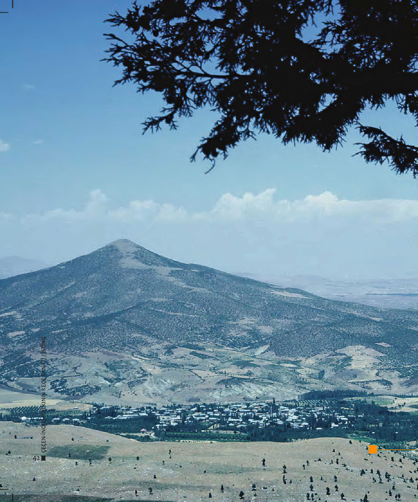
|
Kafkasya dışında Çeçen nüfusunun en çok olduğu Çardak kasabasının keçe araştırmaları yapmaya başlanılan 1987 yılma ait görünüşü. (Fot. E. Yıldır.) |
Облик города Чардак, в котором проживает самое большое количество чеченцев за пределами Кавказа, датируется 1987 годом, когда были начаты исследования войлока. (Фото. Э. Елдыр.) |
Ana Kaynak: Kafkasya |
Основной источник: Кавказ |
|
Kafkasya küçükbaş hayvancılıkla uğraşan yerleşik toplulukların yaşadığı bir ülke olarak Dünya Keçe üretiminin merkezleri arasındadır. Bu ülkenin coğrafik yapısı keçe kullanımı ve üretimini tarih boyunca cazip kılan en önemli etkendir. Kafkasya'nın en yüksek zirvesi olan Elbruz dağının eteklerinden başlayarak doğuya giden bir hat boyunca Derbent geçidine kadar yayılan alanlarda yetişen alp tipi bitki örtüsü, yününden istifade edilen küçükbaş hayvancılık için çok uygun beslenme koşullarını oluşturmuştur. Kafkasya'nın iklim özellikleri de keçe yapımı için elverişli bir ortam oluşturmuştur. Bu nedenle keçe yapımı, bu coğrafyada yaşayan farklı etnik ve kültür gruplarının bildiği ve yaygın olarak yaptığı bir el sanatıdır. Kafkasya'da keçenin en çok ve yaygın olarak yapıldığı bölgeler ise daha dağlık ve yüksek rakımlı yerleşim yerlerinin olduğu Elbruz ve çevresi, Çeçenya ve Dağıstan'dır. Karadeniz sahillerinde ılıman ve nemli bir iklimde yaşayan Çerkes topluluklarında ise keçe üretimi yerine yapılış biçimlerine göre ”Şıy”, ”Ardjen” ve ”Arguaje” (Çeçencede ”Butsipils”) denilen örme hasır yapımı yaygındır. Ancak, keçe üretiminin bir zamanlar bu bölgelerde yaygın olduğunu açıklayan bazı tarihi kayıtlar da bulunmaktadır. Buna göre; 1750-1762 yılları arasında Kırım'da Fransa konsolosu olarak görev yapan M. de Peysonnel; Kafkasya'yı da ziyaretini anlattığı ”Traite sur le Commerce deh Mer Noire” (Karadeniz Ticaretinin İncelenmesi) adlı eserinde Çerkeslerin ”keçe” imalatında da usta olduklarını belirtir (56). |
Как страна, где проживают оседлые общины, занимающиеся разведением овец и коз, Кавказ является одним из центров мирового производства войлока. Географическая структура этой страны — самый важный фактор, делавший использование и производство войлока привлекательным на протяжении всей истории. Растительность альпийского типа, произрастающая в районах, начинающихся у подножия горы Эльбруз, которая является высшей точкой Кавказа и простирается до Дербентского перевала вдоль линии на восток, создала очень подходящие условия для кормления овец и коз, использующих ее шерсть. Климатические особенности Кавказа также создали подходящую среду для изготовления войлока. По этой причине изготовление войлока — это ремесло, известное и широко используемое различными этническими и культурными группами, проживающими в этой местности. На Кавказе наиболее распространенными регионами производства войлока являются Эльбрус и его окрестности, Чечня и Дагестан, где есть более горные и высокогорные поселения. В черкесских общинах, живущих в умеренном и влажном климате на побережье Черного моря, вместо производства войлока распространены вязаные коврики, известные как «ıy», «Ardjen» и «Arguaje» («Буципилс» на чеченском языке). Однако есть некоторые исторические записи, объясняющие, что когда-то в этих регионах было распространено производство войлока. Согласно этому; М. де Пейсоннель, который в 1750-1762 гг. Был французским консулом в Крыму ; В своей работе «Traite sur le Commerce deh Mer Noire» (Исследование черноморской торговли), в которой он также описывает свой визит на Кавказ, он заявляет, что черкесы также являются мастерами в производстве «войлока» (56). |
|
Kafkasya'da keçe üretiminin en azından, bilinen en eski keçe üreticilerinden olan İskitlerin bu ülkede bulundukları yıllara kadar uzandığı tahmin edilebilir. Bilindiği üzere İskit sanatında keçeler çok zengin bir çeşide ve görünüşe sahipti. Bunların arasında, farklı renkte keçe parçalarının belli bir düzene göre işlenmesiyle oluşan yaygı keçeler de bulunmaktaydı. Ele alınan konularda arslan, pars, panter, vahşi atlar, kuş-kartal ve akbabaların resimleri ön plana çıkmaktaydı. Bunların tümü İskitlerin geleneksel süsleme sanatına renklilik katıyordu. |
Можно предположить, что производство войлока на Кавказе восходит к тем временам, когда в этой стране жили скифы, одни из старейших известных производителей войлока. Как известно, войлок имел очень богатое разнообразие и вид в скифском искусстве. Среди них были и матовые войлоки, образованные обработкой разноцветных войлочных изделий в определенном порядке. Среди обсуждаемых тем выделялись изображения львов, леопардов, пантер, диких лошадей, орланов и грифов. Все это добавляло красок традиционному скифскому декоративному искусству. |
|
Kafkasya birçok dilin, etnik grup, ırk ve kültürlerin bir arada kaynaştığı kendine özgü yapısıyla günümüzün en karışık ve sorunlu bölgelerinden birisidir. Kafkasya'nın bu etnik çeşitliliğine rağmen keçe malzeme ile yapılmış ürünler incelendiğinde ortak motif teknik ve türlerden oluşan zengin bir elsanatı potansiyeli ile karşılaşılır. Kafkas halklarınca üretilen keçeleri plastik özellikleri açısından incelediğimizde iki farklı gruba ayırmamız mümkündür. Kökenleri en azından İskit dönemine dayanan Çeçen-İnguş ve Avar keçe geleneği ile Kıpçak keçe kültürünün izlerini tespit ettiğimiz Karaçay -Balkar keçeleri bu iki ana grubu oluşturmaktadır. |
Кавказ — один из самых сложных и проблемных регионов современности с его уникальной структурой, в которой слились воедино многие языки, этнические группы, расы и культуры. Несмотря на это этническое разнообразие Кавказа, при рассмотрении изделий из войлочного материала обнаруживается богатый ремесленный потенциал, состоящий из общих мотивов, техник и типов. Когда мы исследуем войлок, производимый кавказскими народами, с точки зрения их пластических свойств, можно разделить их на две разные группы. Эти две основные группы — чечено-ингушские и аварские войлочные традиции, восходящие, по крайней мере, к скифскому периоду, и карачаево-балкарские войлоки, следы которых мы отождествили с войлочной культурой кипчак. |
|
(56) Aydın O. ERKAN., Tarih Boyunca Kafkasya, s.36. |
(56) Айдын О. ЭРКАН., Кавказ на протяжении всей истории, с.36. |
KARAÇAY-BALKAR KEÇELERİ |
КАРАЧАЕВО-БАЛКАРСКИЙ ВОЙЛОК |
ALA KİYİZ |
ALA KİYİZ |
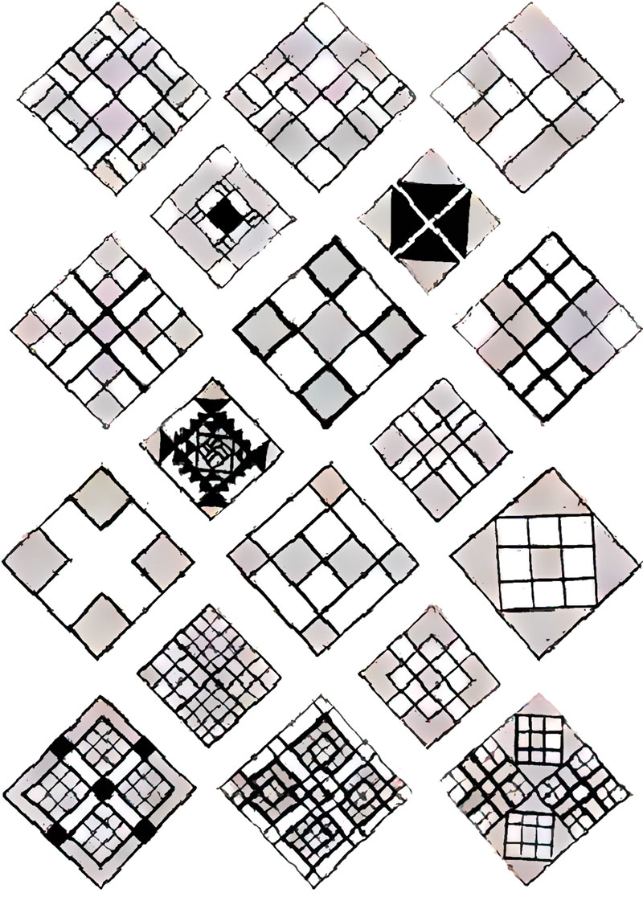
|
Karacay keçelerinin temel kompozisyonu olan ”baklava dilimi” çeşitlemelerinden örnekler. (çizim: E. Yıldır) |
Примеры вариаций «лепешки», которые являются основным составом карачайского войлока. |
|
Kafkasyanın en önemli keçe üretimi yapılan bölgelerinden birisi de Kabardey-Balkarya dır. Ülkenin yüksek yayla, vadi, yamaç ve geniş otlaklarında yetişen ”Alp Tipi” çayırlar hayvancılık için uygun koşullar oluştururlar. Karaçaylar geçmiş dönemlerden günümüze kadar yaşadıkları ve ”caylık” adını verdikleri geniş dağ otlaklarınde yayla hayvancılığıyla uğraşıyorlardı. |
Кабардино-Балкария — один из важнейших регионов Кавказа по производству войлока. Луга «альпийского типа», которые растут на высоких плато, долинах, склонах и широких лугах страны, создают подходящие условия для животноводства. Карачаевцы занимались высокогорным животноводством на обширных горных пастбищах, которые они называли «чайлык», где они жили от прошлого до настоящего . |
|
Hayvancılık ürünleri, halkın yemeden içmeye, ayakkabıdan giysiye kadar her ihtiyaçlarını sağlıyordu. XVII-XVIII yüzyıl bilim adamlarının bildirdiklerine göre, Karaçay Malkarlılar da o dönemlerde keçe sanatında bütün Kafkasya’da şöhret kazanmışlardı. Keçe yapma ve işleme zanaatı ayrı bir meslek dalı olmuştu. Çok yakın tarihlere kadar Karaçaylar üretimlerini (yün, ev yapımı kalın kumaşlar, keçeler, tilki ve zerdeva kürkleri vs. ile) ortak Kafkasya pazarına götürerek orada gereksinim duydukları ince kumaş, kapkacak ve yiyecek-içeceklerle takas yapıyorlardı. |
Продукты животноводства обеспечивали все потребности людей — от еды до питья, от обуви до одежды. По отчетам ученых XVII-XVIII веков, карачаевцы-малкарцы в то время также прославились на весь Кавказ в искусстве войлока. Изготовление и обработка войлока стали отдельной профессией. До недавнего времени карачаевцы вывозили свою продукцию (шерсть, домашние толстые ткани, войлок, меха лисы, куркумы и т. Д.) На общий кавказский рынок и обменивали ее на нужные им тонкие ткани, горшки и напитки. |
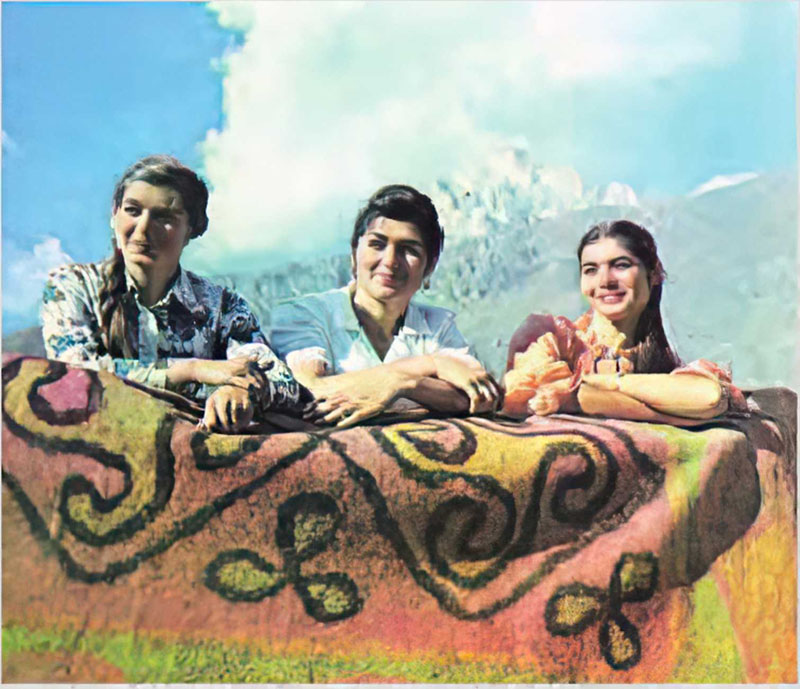
|
Yaptıkları keçe ”kiyiz” ile poz veren Karaçaylı gençkızlar. (Kuznetsova’dan) |
Карачаевские девушки позируют с изготовленным ими войлочным кийизом (от Кузнецовой) |
|
Karaçay keçeleri çok çeşitli biçim ve tekniklerle üretilmiştir. Enkrüste ve mozaik olarak iki tekniğin uygulandığı bu keçeler Kazak ve Kırgız keçeleri ile Çeçen ve Avar keçeleri arasında biçimsel bir çizgiye sahiptir. Mozaik tekniği ile yapılan Karaçay keçelerinde kullanılan “baklava dilimi” içerisindeki kare ve üçgen dilimlemeler bu yörenin orijinal biçimlendirme şeklini yansıtır. Çok parlak ve kontrast renklerle yapılan bu örneklerde yüzlerce farklı şekilde düzenlenmiş motif çeşitlemeleri bulunur. Karaçay keçeleri üzerine araştırmalanyla tanınan Kuznetsova bu ürünleri yüzeyin motiflendirme ve kompozisyonuna göre başlıca 8 gruba ayırmaktadır (*). |
Карачаевский войлок производится самых разных форм и техник. Эти войлоки, в которых используются две техники: инкрустация и мозаика, имеют формальную границу между казахским и киргизским войлоком и чеченским и аварским войлоками. Квадратные и треугольные срезы в «алмазном срезе », используемом в карачайском войлоке, выполненном в технике мозаики, отражают оригинальную формулировку этого региона. Эти образцы, выполненные с очень яркими и контрастными цветами, содержат сотни различных вариаций мотивов. делит его на 8 групп по своему составу (*). |
|
Karaçay keçelerinde zik-zak veya testere dişi, baklava dilimi çeşitlemeleri, boy veya aile damgaları çıkışlı motifler, gamalı haç ve haç motifi çeşitlemeleri, kare ve üçgenlerle oluşturulan geometrik biçimler, kıvrık şekilli dallar ve boynuzlar sıkça karşımıza çıkan ve beğeni ile kullanılan motifleri oluşturmaktadır. Karaçay keçelerindeki renk kullanımı da karakteristik bir özellik taşır. Buna göre diğer Kafkas ve Türk Topluluklarından farklı olarak Karaçay keçelerinde siyah ve kurşuni diyebileceğimiz gri tonlar çok yaygın bir şekilde kullanılmaktadır. Bu tür nötr renklerin kırmızı, turuncu, sarı ve yeşil ağırlıklı canlı renklerde birlikte kullanılması renklerin parlaklığını daha da artıran bir özellik olarak ortaya çıkmaktadır. |
Зигзагообразные или пилообразные формы, варианты срезов алмазов, размерные или семейные штампы, вариации свастики и крестов, геометрические формы, созданные из квадратов и треугольников, изогнутые ветви и рога в карачаевском войлоке, составляют мотивы, которые часто встречаются и используются с удовольствием. Использование цвета в карачаевском войлоке также является характерной чертой. Соответственно, в отличие от других кавказских и турецких общин, в карачаевском войлоке широко используются черные и серые тона, которые мы можем назвать черными и свинцовыми. Сочетание таких нейтральных цветов с яркими цветами, такими как красный, оранжевый, желтый и зеленый, является особенностью, которая еще больше увеличивает яркость цветов. |
|
Kabardey-Balkarya'dan Anadoluya göçeden Karaçay köylerinden birisi olan Konya iline bağlı Başhüyük'te 1950’li yıllara kadar keçe üretilmesine rağmen ne yazık ki bu el sanatı artık tamamen yok olmuştur. (**) |
Хотя войлок производился в Башхуюке, одной из деревень Карачай провинции Конья, которая мигрировала из Кабардино-Балкарии в Анатолию, до 1950-х годов, к сожалению, это ремесло полностью исчезло. (**) |
|
(*) A.Y.KUZNETSOVA., Narodnoe İskusstvo Karaçaev ı Balkartsev,Nalçik 1982, s.73. |
(*) А.Й.КУЗНЕЦОВА. Народное искусство Карачаев и Балкарцев, Нальчик, 1982, с. 73. |
|
(**) Anadolu’da yaşayan Karaçaylarda keçe üretiminin 1940’lı yıllara kadar yapıldığını, Kafkasya konusundaki araştırmaları ile tanınan Prof.Dr. Ufuk Tavkul ile babası Ramazan Tavkul'dan öğrendik Ramazan Tavkul bu konuda bizlere, büyük annesi Kırımhan Tavkul'un “Karaçaylı son keçe ustalarından birisi olarak” bu sanatı Başhüyük’te ürettiğine çocukluğunda bizzat şahit olduğunu anlatmıştır (Ankara 1996). |
(**) Производство карачаевского войлока, жившего в Анатолии в 1940 году, было завершено с признанными исследованиями на Кавказе проф. Мы узнали от Уфука Тавкула и его отца, Рамазана Тавкула, Рамазан Тавкул сказал нам, что он лично был свидетелем того, как его бабушка Кыримхан Тавкул создавала это искусство в Башхуюке как «один из последних войлочных мастеров из Карачай» (Анкара, 1996). |
|
Kafkas Halkları içerisinde en kalabalık nüfusa da sahip olan Çeçen-İnguşlann keçe sanatını ne zamandan beri yaptıkları tam olarak bilinmemektedir. Ancak, Çeçen-İnguş topluluklarının bu sanatı büyük bir beğeni ile yapmalarından, dillerindeki keçe ile ilgili farklı kelime zenginliğinden ve kullanılan özgün motif çeşitliliğinden yola çıkarak keçeciliğin bu halk için oldukça eski bir geçmişi olması gerektiğini ileri sürebiliriz. |
Неизвестно, когда именно чечено-ингуши, являющиеся самым многолюдным населением среди кавказских народов, творили искусство из войлока. Однако, основываясь на том факте, что чечено-ингушские общины занимались этим искусством с большим удовольствием, богатством различных слов, связанных с войлоком в их языке, и разнообразием используемых оригинальных мотивов, мы можем утверждать, что создание войлока должно иметь очень давнюю историю для этого народа. |
|
Çeçen-İnguş halkının yaşam biçimine göre şekillenen kültürel değerlerinde, üretilmesi için uzun zaman gerektiren halı ve kilim dokumalarına nazaran pratik ve kısa süreli bir çaba gerektiren keçe üretiminin daha çok tercih edildiği görülür. Genellikle keçenin yaygın olarak kullanıldığı göçebe kültürlerinin tercih ettiği bu pratikliğin yerleşik bir hayat yaşayan Çeçen-Inguşlarda benzer biçimde görülmesi ise oldukça ilginçtir. Bu benzerliği tarihleri boyunca savaşlar ve mücadelelerle dolu geçen bir yaşam zorunluluğuna bağlayabiliriz. Gerçekte Çeçen-İnguşlann el sanatlarında halı ve kilim yapımı da, keçecilik kadar olmasa bile oldukça yaygındı. Ancak bu el sanatlarına ait örnekler, bölgede yaşanan savaşlar, siyasi ve tarihsel olaylar nedeniyle sahada derleme yapamayan araştırmacıların dikkatinden kaçmıştır. Ülkenin Sovyet döneminde de dışarıya kapalı olması el sanatlarının incelenmesini ve zamanında tespit edilemeyerek tasnif ve tanımlamasın da yeterince yapılmasını engellemiştir. Çeçen-İnguş Halkının el sanatı ürünleri içerisinde önemli bir yer tutan bu özgün keçeleri, Türkiye'de ve Dünyada sanat tarihi araştırmacılarınca henüz yeterince tanınmamıştır. Keçe Sanatı hakkında yazılan ve dünya literatürlerine giren eserler arasında ilk başvuru kaynakları arasında yer alan Burkett'in ”Art of The FeltMaker” adlı eserinde Kafkasyanın orjinal karekterli bu el sanatlarından hiç bahsedilmezken, son yıllarda basılan ve keçeler hakkında en kapsamlı çalışma olan Marlene Lang'ın ”Filzkunst” adlı eserinde Türkiye'de üretilen Çeçen-İnguş keçeleriyle ilgili ayrıntılı bilgiler bulunmaktadır (57). Kısmen de olsa Çeçen keçelerinin diğer el sanatlarına göre daha belirgin bir şekilde tanımlanmasını ise zengin tür çeşitliliği ve yaygın kullanımına bağlayabiliriz. Şüphesiz ki Çeçen-İnguş halk kültürü üzerine araştırmalar yapıldıkça el sanatları daha iyi tasnif edilecek ve aydınlanacaktır. |
В культурных ценностях, сформированных образом жизни чечено-ингушского народа, видно, что производство войлока, требующее практических и краткосрочных усилий, предпочтительнее коврового и коврового, для производства которого требуется много времени. Интересно, что эта практичность, которую обычно предпочитают кочевые культуры, где широко используется войлок, аналогичным образом проявляется у чечено-ингушей, ведущих оседлый образ жизни. Мы можем приписать это сходство необходимости жизни, полной войн и борьбы на протяжении всей ее истории. На самом деле изготовление ковров и ковриков было довольно распространенным явлением в чечено-ингушских ремеслах, если не в такой степени, как изготовление войлока. Однако примеры этих ремесел ускользнули от внимания исследователей, которые не могли собрать данные в полевых условиях из-за войн, политических и исторических событий в регионе. Тот факт, что в советский период страна была закрыта для посторонних лиц, также не позволяла проводить экспертизу ремесел, а также их классификацию и определение, поскольку они не были обнаружены вовремя. Эта оригинальная печать занимает важное место в ремесленных изделиях чечено-ингушского народа, исследователей из Турции, а история искусства в мире еще недостаточно известна. В книге Беркетта «Искусство фетровщика» , которая является одним из первых справочных источников среди работ, написанных о войлочном искусстве и включенных в мировую литературу, не упоминается ни одно из этих ремесел с исконно кавказским характером, в то время как наиболее полная работа Марлен Ланг о войлоке, опубликованная в последние годы , не упоминается. «Фильцкунст» содержит подробную информацию о чечено-ингушском войлоке в своем произведении, произведенном в Турции (57). Мы можем отнести более конкретное определение чеченского войлока к другим ремеслам, хотя и частично, с их богатым разнообразием видов и их широким использованием. Несомненно, чем больше будет изучаться чечено-ингушская народная культура, тем лучше будут засекречены и просвещены ремесла. |
|
Çeçen-İnguş Mimarisinde özellikle kule ve kulevari taş yapıların iç mekan süslemelerinde motifli, renkli yaygı keçeler yaygın olarak kullanılıyordu. Buna göre, mekan zeminlerinde olduğu gibi binaların iç duvarlarında da sıvanın üzerine asılan keçe yaygılar, görsel bir zevki yansıtması kadar, malzemenin özelliğinden kaynaklanan büyük bir yalıtımsal işleve de sahipti. |
В чечено-ингушском зодчестве, особенно во внутренней отделке башенных и башенных каменных построек, широко использовались цветные маты с мотивами. Соответственно, войлочные маты, висящие на штукатурке на внутренних стенах зданий, а также на полах полов, отражают визуальное удовольствие, а также обладают прекрасной изоляционной функцией, обусловленной характеристиками материала. |
|
1860'11 yıllardan itibaren Osmanlı imparatorluğuna sürgünvari bir şekilde göç ettirilen ve büyük bir coğrafyada farklı bölgelere iskan edilen Çeçen-İnguş aileler yeni yaşam alanlarına günlük hayatta kullandıkları işlevsel ve kültürel değer taşıyan çeşitli eşya ve araçlarını da getirmişlerdi. Bu eşyalar arasında anavatanda yaşarken üretilmiş keçe yaygılar da bulunmaktaydı. Osmanlı İmparatorluğunun Rusya ile yaptığı anlaşmalar sonucunda zorunlu olarak ikamet edilen yeni yerleşimlerde de iklimin ve ihtiyaçların sonucunda biraz da hayvancılığa bağlı olarak keçe üretimini yapmaya devam etmişlerdi. Yeni üretilen keçelerde, tür, teknik, renk ve motif özellikleri bakımından anavatandan beraberlerinde getirdikleri keçe yaygılar ”örnek numune” olarak kullanılmıştı. Hatta bu örnekleme nesiller boyunca devam ederek özgün yapısını günümüze kadar korumuştur. Böylece Aıadoluda üretilen yerel keçe örneklerinden farklı, kendi milli keçe geleneklerini bozulmadan günümüze kadar ulaştırmışlardır. |
Чечено-ингушские семьи, которые были иммигрированы в Османскую империю в изгнании и поселились в разных регионах большой географии с 1860 по 11 год, также принесли различные предметы и инструменты, имеющие функциональную и культурную ценность, в свои новые жилые помещения. Среди них были войлочные коврики, изготовленные еще на родине. В результате соглашений, заключенных Османской империей с Россией, они продолжали производить войлок в новых поселениях, которые были принудительно заселены из-за климата и потребностей, в зависимости от животноводства. Привезенные с родины войлочные коврики по типу, технике, цвету и мотиву были использованы как «образцы» в новых войлоках. Фактически, этот отбор образцов продолжался на протяжении поколений и сохранил свою первоначальную структуру до сегодняшнего дня. Таким образом, в отличие от местных образцов войлока, произведенных в Айадолу, они сохранили свои национальные войлочные традиции до наших дней. |
|
Kafkasyada kalmayı başaran ana Çeçen-İnguş kitlesi ise 1944 yılında Stalin tarafından Sibirya'ya sürülmüş, 1957 yılında Kruşçev döneminde anavatanlarına döndüklerinde ise geride bırakmak zorunda kaldıkları bir çok kültür materyalini tamamen kaybetmişlerdi. Yüzbinlerce insanın bir kaç saatlik çok kısa bir süre içerisinde evlerinden ve vatanlarından koparılarak sürgün edilmesi üzerine geride bırakılan kültürel varlıklar ve el sanatı ürünler, Kafkasya'dan Çeçen-İnguş Halkının izlerini silmek isteyen dönemin Rus yöneticileri tarafından neredeyse tamamen yok edilmiş ve bu durum el sanatlarına da büyük bir darbe vurmuştu (58). Acı ve yokluklarla dolu sürgün yılları sırasında keçe üretimini yapabilen ustaların hayatlarını kaybetmeleri ve bildiklerini yeni nesillere aktaramayışları bu kültürel yıkımı daha da artırmıştı. |
Основные чечено-ингушские массы, которым удалось остаться на Кавказе, были сосланы Сталиным в Сибирь в 1944 году, а когда они вернулись на свою родину в хрущевскую эпоху в 1957 году, они полностью потеряли многие культурные материалы, которые им пришлось оставить. Культурные ценности и ремесленные изделия, оставленные после того, как сотни тысяч людей были изгнаны из своих домов и родных мест за очень короткое время в несколько часов, были почти полностью уничтожены российскими правителями того периода, которые хотели стереть следы чечено-ингушского народа с Кавказа. Это был сильный удар (58). Гибель мастеров, которые были в состоянии производить войлок в годы изгнания, которое было полно боли и бедности, а также неспособность передать то, что они знали, новым поколениям увеличили это культурное разрушение. |
|
(57) M. LANG Filz Kunst-Tradition und Experıment, — Bern; Haupt 2001. s. 98-101 |
(57) М. ЛАНГ Фильц Кунст-традиция и эксперимент, — Берн; Haupt 2001. стр. 98-101 |
|
(58) T. Diyanet Vakfi İslam Ansiklopedisi, İstanbul 1993., (Çeçenistan maddesi), C.8, s. 247. |
(58) T. Religious Foundation Islam Encyclopedia, Стамбул, 1993 г., (статья в Чечне), С.8, с. 247. |
AVAR (MAÂRUL) KEÇELERİ |
АВАР (МААРУЛЬСКИЕ) УПЛОТНЕНИЯ |
BURTİNA |
БУРТИНА |
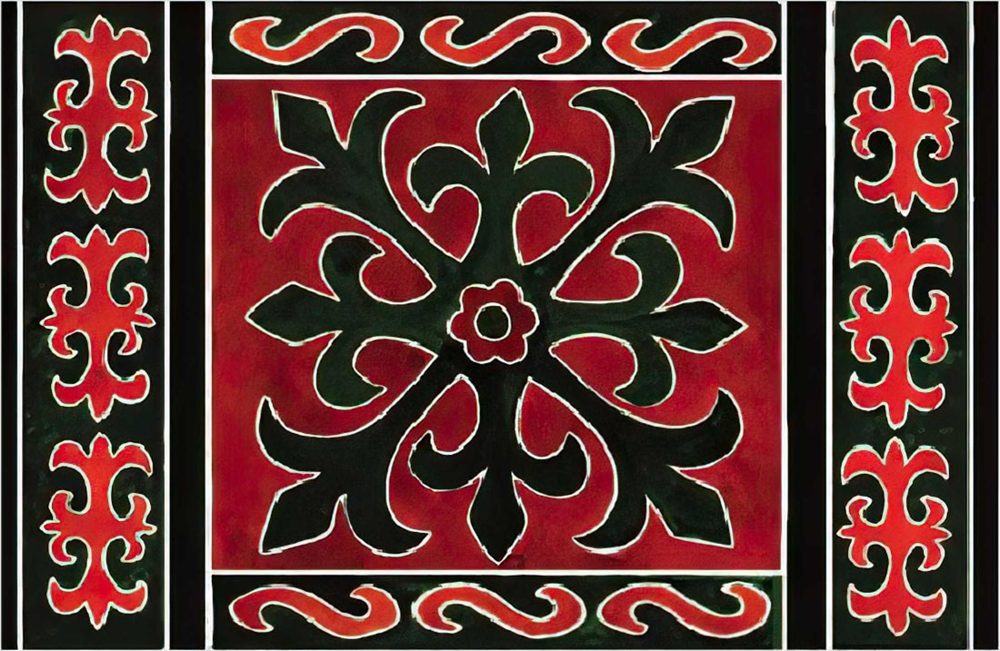
|
Avar keçesi / K.Maraş, Göksun, Kireç köyü / Ustası: Naciye Yıldız / ölçüleri: 175x300 cm / yapım tarihi: 1962/ Haydar Yıldız evinde 27.07.1988 tarihinde tespit edilmiştir. |
Аварский войлок / К.Мараш, Гёксун, село Киреч / Мастер: Нацие Елдыз / размеры: 175x300 см / дата постройки: 1962 / Обнаружен в доме Хайдар Йылдыз 27.07.1988. |
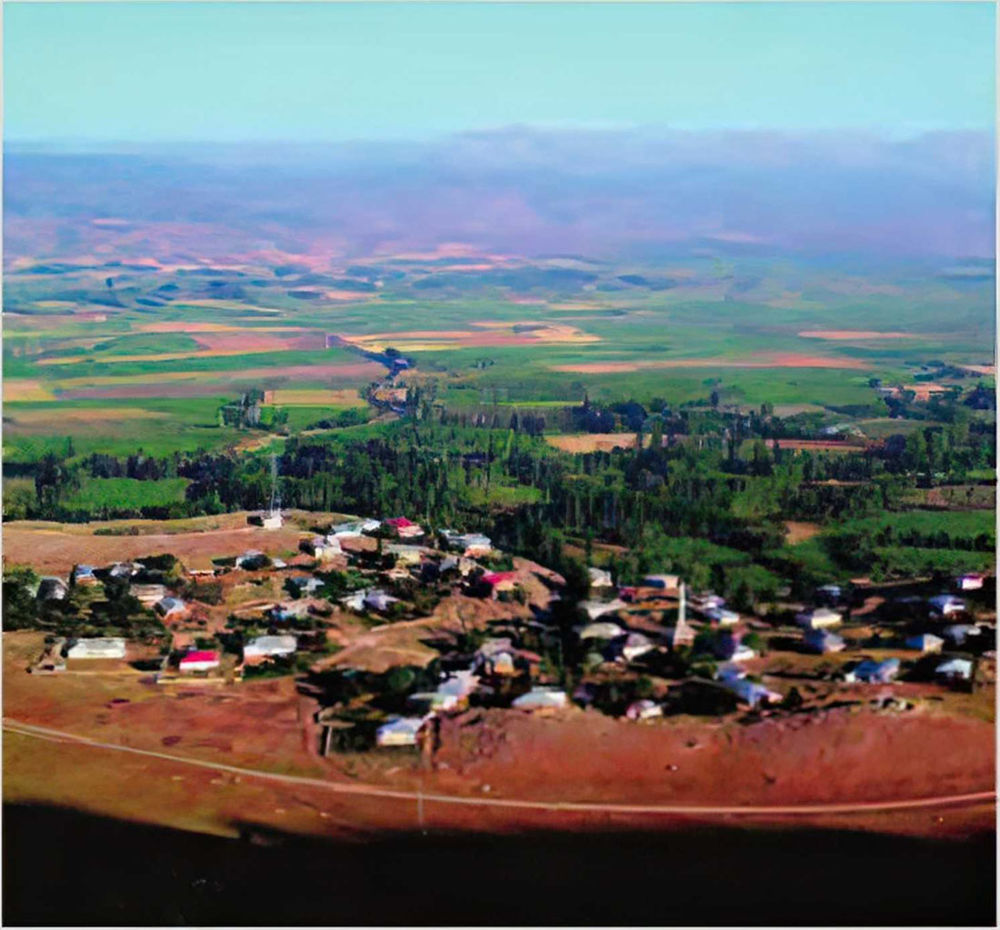
|
Kahramanmaraş'ın Göksun ilçesine bağlı Kireç, Türkiye’de keçe ”burtina” üretimi yapılmış az sayıdaki Avar köyünden birisidir. |
Известь, зависящая от района Кахраманмарас Гёксун, производство войлока в Турции «бурт к» — одно из немногих, производимых аварской деревней. |
|
Dağıstan, Kafkasya’nın çeşitli etnik unsurlarının bir arada bulunduğu bir ülke olarak, tarihin en eski dönemlerinden beri birçok uygarlığın etki alanı içerisine girerek aynı zamanda çeşitli el sanatlarının da başlıca merkezi olma konumunu üstlenmiştir. Metal işleme, Halıcılık gibi dünyaca ünlü el sanatları arasında keçecilik fazla göze batmasa da, ülkede yaygın bir şekilde üretilmektedir. Dağıstanın en büyük etnik toplumlarından olan Avar (Ma'arul) halkı bu el sanatını yaşatan topluluklar arasındadır. Dağıstanda üretilen kilimlerde yeralan bir çok motif ve kompozisyon özelliği de keçeler ile biçimsel benzerliklere sahiptir. |
Дагестан, как страна, где сосуществуют различные этнические элементы Кавказа, с самых ранних периодов истории находился в сфере влияния многих цивилизаций, а также занял положение главного центра различных ремесел. Среди всемирно известных ремесел, таких как металлообработка и ковроткачество, производство войлока не так много встречается, но оно широко производится в стране. Аварцы (маарулы ) , одна из крупнейших этнических общин Дагестана , относятся к числу общин, занимающихся этим ремеслом. Многие мотивы и композиционные особенности ковров, произведенных в Дагестане, также имеют формальное сходство с войлоком. |
|
Anadolu’da, Dağıstan’dan ayrıldıktan sonra Avarlar tarafından üretilen keçe örneklerinin en yaygın olarak yapıldığı ve halen bulunduğu bölge, Kahramanmaraş’a bağlı Göksün kazasının Kireç ve Ortatepe köyleridir. Türkiye'de diğer Avar köylerinde keçe ütretiminin varlığı hakkında her hangi bir bilgiye ulaşılamamıştır. Ancak Göksün yöresinden ayrılarak başka merkezlerde yaşamaya giden vatandaşların yanlarında bulundurdukları keçelerin bazıları tespit edilmiştir. |
В Анатолии после отъезда из Дагистана образцы войлока, произведенные аварцами, являются наиболее распространенными и до сих пор находятся в деревнях Киреч и Ортатепе Гёксюнского района Кахраманмараша. В аварских деревнях Турции чувствовалось, что никакой другой информации о наличии утретим не могло быть достигнуто. Тем не менее, часть войлока, хранившегося у граждан, покинувших Гёксюнский район и переехавших в другие центры, была обнаружена. |
|
Avar dilinde ”Burtina” adı verilen keçeler, komşuları Çeçenlere ait keçeler ile renk, teknik ve biçimsel açıdan büyük benzerliklere sahiptir. Türkiye’de yaşayan Çeçen aileler ile Avar, Kabardey gibi Kafkas kökenli toplumlar arasında yapılan evlilikler ve coğrafi yakınlıklar neticesinde, keçe üretiminin etkileşime uğradığı görülür. Özellikle, Küçüksu (Çeçen) ve Kireç (Avar) gibi yakın köylerde üretilen keçeler arasında bu etkileşim çok belirgindir. |
Аварский язык «буртина», так называемые войлоки, соседи раскрашивают войлоком у чеченцев, техники и формальные термины имеют большое сходство. Охота живет с чеченской семьей в Турции, Кабардино как кавказское происхождение в браке и географическая близость в результате между обществами, пострадал от взаимодействия производства войлока в частности, это взаимодействие совершенно очевидно между войлоков, полученных в близлежащих сел, таких как Küçüksu (чеченского) и Kireç (аварского). |
|
Kireç köyünde üretilen keçelerin bazıları bu köye gelin olarak gelen ve çeyizinde getirdiği keçeleri üreten bazı ustaların da etkisiyle çeçen tarzında yapılmıştır. Günümüzde, Türkiye'de yaşayan Avarlarca Kireç ve Ortatepe köylerinde tespit ettiğimiz keçelerin Dağıstanda üretilen ve ince arabesk motiflerden farklı olarak daha çok çeçen keçelerine benzer biçimde üretilmesi bu etkileşimin bir sonucudur. |
Некоторые войлоки, производимые в селе Киреч, были сделаны в чеченском стиле под влиянием некоторых мастеров, которые приехали в это село в качестве невест и изготовили войлок, который они принесли в приданое. Сегодня мы определили войлок- аварцев, живущих в селе Лайм и Ортатеп Дагыст, произведенных в Турции и тонких аналогичным образом, чтобы произвести чеченский войлок, сильно отличающийся от мотивов арабески в результате этого взаимодействия. |
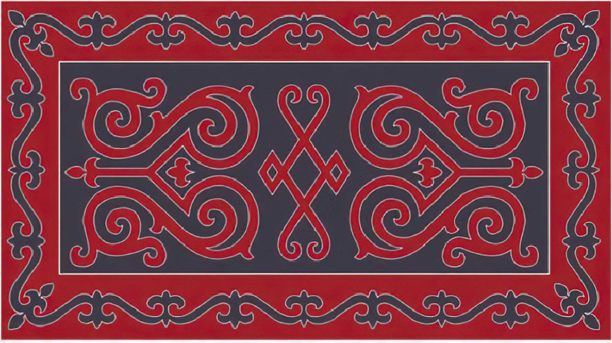
|
Çeçenya da üretilmiş keçe ”isting” ömeği. (Tatayev-Şabanyants., Dekorativno-Prikladnoe Iskusstvo Çeçeno-İnguşetii., No:4/yapım N. Bisultanova, Uşkaloy) |
Войлок «истинг» образца Чеченского производства. (Татаев-Шабанянц., Декоративно-Прикладное Искусство Чечено-Ингушетии., №: 4 / производство Н. Бисултанова, Ускалой) |
|
Bu döneme ait geride kalan az sayıdaki keçe örneklerini, Tataev ve Sabanyants adlı iki araştırmacı tespit ederek 1974 yılında bir albümde toplamışlardı. Çeçen-İnguş keçe sanatına ait en önemli kaynak olan bu albümde 1890 ile 1930 yılları arasında yapılmış 50 adet örnek verilmiştir. (59) |
Двое исследователей, Татаев и Сабанянц, идентифицировали несколько оставшихся образцов войлока этого периода и собрали их в альбом в 1974 году. В этом альбоме, являющемся важнейшим источником чечено-ингушского войлочного искусства, представлены 50 образцов, изготовленных в период с 1890 по 1930 годы. (59) |
|
Günümüzde iki ayrı devlet olan Çeçenya ve İnguşya'da kültürel değerleri yansıtan maddi materyaller daha çok müzelerde mevcuttur. Halkın kendisinde, geçmişten kalan ve kültür değeri olan el sanatı örnekleri fazlaca mevcut değildir. Bu açıdan bakıldığında Türkiye’de yaşayan Çeçen ailelerin ürettikleri keçeler daha büyük bir önem kazanmaktadır. |
Сегодня материальные материалы, отражающие культурные ценности двух отдельных государств, Чечни и Ингушетии, в основном доступны в музеях. В самих людях мало примеров ремесел из прошлого и культурных ценностей. С этой точки зрения, когда они производят чеченские семьи, живущие в Турции приобретают все большее значение. |
|
Türkiye'de keçe örneklerinin en yaygın olarak yapıldığı ve halen bulunduğu bölgeler Kahramanmaraş'a bağlı Göksün kazasının Çardak ve Küçüksu (Gücük)köyleriyle, Uzunyayla yöresindeki, Kayserinin Pınarbaşı ilçesine bağlı Aşağıborandere ve Sivas'ın Kangal ilçesine bağlı Yukarıhüyük (Sıçanhöyük) köyleridir. Bu yerler haricinde Türkiye'de az da olsa diğer Çeçen-İnguş yerleşimlerinde bazı keçe örnekleri tespit edilmiştir. Yine büyük şehirlerde ve müzelerde karşımıza çıkan Çeçen keçe örneklerinin bir çoğunun çıkış kaynağı da Göksun ve Uzunyayla yöreleridir. |
Чаще всего изготавливают и до сих пор находят Кахраманмарас из-за неба, аварии Павильоны и Кучуксу, образцы войлоков в Турции (Гучук), их деревнях, в районе Узуньяйла, Ашагиборандер, связанный с районом Пинарбаси в Кайсери, и Юкарихюйюк, связанный с районом Сивас-Кангал (Сивас-Кангал) (деревни Сивас-Кангал). Были выявлены примеры некоторых из этих мест, за исключением чуть большего количества чечено-ингушских поселений в Турции. Опять же, источником большинства образцов чеченского войлока, которые мы встречаем в больших городах и музеях, являются районы Гёксун и Узуньяйла. |
|
Anadoluda tespit ederek derlediğimiz örneklerin genellikle 1940 ila 1960 yılları arasında yapıldığı görülmektedir. Mevcut el sanatı örneklerine, bu keçeleri yapan ustaların evlerinde, yapan kişilerin varislerinde veya yakınlarında, bilinçli olarak kolleksiyon yapanlarda, eski eser satıcı ve toplayıcılarında, camilerde veya müzelerde tesadüf edilmiştir. Camilere hibe edilen sahibi ve veriliş tarihi belli olmayan eski keçe örnekleri halıların altından çıkarılarak kayıt altına alınmıştır. |
Видно, что образцы, которые мы идентифицировали и собрали в Анатолии, в основном были сделаны между 1940 и 1960 годами. Существующие образцы ремесел встречаются в домах мастеров, которые делали эти войлоки, у наследников или в непосредственной близости от людей, которые их изготовили, у коллекционеров, у продавцов и коллекционеров древностей, в мечетях или музеях. Образцы старого войлока, подаренные мечетям неизвестным владельцем и датой выпуска, были извлечены из-под ковров и записаны. |
|
Türkiyede farklı yörelerde birbirlerinden kopuk olarak yaşayan Çeçenlerin hepsi keçe üretimini sürdürememiştir. Bir anlamda kapalı ekonomi içerisinde bölgesel olarak üretilen keçeler, o bölgenin doğa koşulları ve yaşam biçimi gibi etkenlerle çeşitli üretim biçimlerine hatta yapı değişikliklerine uğramışlardır. Bu sebeple aynı toplumun farklı coğrafi bölgelerde yaşayan gruplarının bazıları keçe üretimini sürdürürken, bir başka bölgede yaşayan gruplan geleneksel el sanatlarını unutmuşlardır. Keçe üretilmiş bölgelerde ise zamanla birtakım biçimsel değişikliklerin olması kaçınılmaz gözükmektedir. Bu özellik el sanatı üreten bütün toplumlar için geçerlidir. İnsanların bu konuya olan ilgi ve hassasiyetleri yok oluş ve değişmelere de olumlu ya da olumsuz anlamda yön verecektir. |
Все чеченцы, живущие в Турции, не могли быть отделены друг от друга в разных регионах, продолжали производить войлок. В некотором смысле войлок, производимый на региональном уровне в условиях закрытой экономики, претерпел различные формы производства и даже структурные изменения из-за таких факторов, как природные условия и образ жизни в этом регионе. По этой причине, в то время как некоторые группы, проживающие в разных географических регионах одного и того же общества, продолжают производить войлок, группы, живущие в другом регионе, забыли о своих традиционных ремеслах. Кажется неизбежным, что со временем произойдут некоторые формальные изменения в областях производства войлока. Эта особенность актуальна для всех обществ, производящих изделия кустарного промысла. Интерес и чуткость людей к этому вопросу будут направлять исчезновение и изменения в положительном или отрицательном смысле. |
|
Çeçen-İnguş Halkının trajedilerinden birisi olan sürgünlerle oluşan toplumsal kopuşa rağmen hem Anadoluda hem de Çeçenyada keçe üretimine devam edilmesi, eski ve köklü geleneğinin sonucunda gerçekleşmiş olmalıdır. Çeçen-İnguş Halkının iki ayrı coğrafyada yaşayan üyeleri birbirlerinden farklı kültürel etkileşim ve tarihsel olaylar yaşamalarına rağmen teknik, motif ve kulanım alanları açısından keçe yapımında ortak özellikleri korumuşlardır. |
Продолжение производства войлока как в Анатолии, так и в Чечне, несмотря на социальный разрыв, произошедший с изгнанниками, что является одной из трагедий чечено-ингушского народа, должно быть результатом давней и глубоко укоренившейся традиции. Хотя представители чечено-ингушского народа, проживающие в двух разных географических регионах, пережили разные культурные взаимодействия и исторические события друг от друга, они сохранили свои общие характеристики с точки зрения техники, мотивов и областей использования в производстве войлока. |
|
(59) TATAEV — ŞABANYANTS., Dekorativno Prikladnoe İskusstvo Çeçcno İnguşetii, Grozniy 1974. |
(59) ТАТАЕВ-ЧАБАНЯНЦ., Декоративно-прикладное İskusstvo Çeçcno İnguşetii, Грозный, 1974. |
KABARDEY KEÇELERİ |
КАБАРДЕЙСКИЕ УПЛОТНЕНИЯ |
VUPŞA |
VUPSA |
|
Kuzey Kafkasya'da Karaçaylarla aynı bölgede yaşayan ve bir Çerkeş halkı olan Kabardeyler de keçe üreten toplumlar arasındadır. Bu ülkede geleneksel el sanatlarının zengin çeşitliliği arasında “Vupşa” adı verilen keçe yapımı da bulunur. Kabardey keçelerinde de tıpkı Çeçen-İnguş, Karaçay ve Avarlarda olduğu gibi simetrik karekterli motiflerle bezenmiş, benzer teknikle üretim yapıldığı görülür. |
Кабардинцы, проживающие в одном регионе с карачаевцами на Северном Кавказе и являющиеся черкесским народом, относятся к числу обществ, производящих войлок. Среди богатого разнообразия традиционных ремесел в этой стране — производство войлока, которое называется «Вупша» . Видно, что кабардинский войлок декорирован симметричными мотивами и изготовлен в такой же технике, как чечено-ингушский, карачаевский и аварский. |
|
Haklarında çok az bilgi bulunan Kabardey keçelerinin biçimsel açıdan en belirgin özelliği, merkeze yerleştirilen simetrik ana motiflerin tek parça olarak değil, kendi içinde parçalanmış bir araya geldiğinde bütünü oluşturan benzer parçalardan oluşmasıdır. Özgün bir karekter oluşturan bu biçimsel özellik Kabardey-Balkarya'da üretilen keçelerde de bulunur ve Kabardey keçelerinin, oldukça zengin çeşitlilikteki Karaçay keçelerinin yoğun etkisinden kurtularak kendi özgün kimliğine kavuştuğunun da bir göstergesi sayılabilir. Bu durumda Kabardey keçelerinin eski bir geleneğin temsilcisi olduğu ileri sürülebilir. |
Самая отличительная черта кабардинского войлока, о форме которого очень мало информации, состоит в том, что симметричные основные мотивы, помещенные в центре, не являются единым целым, а составлены из похожих частей, которые составляют единое целое, когда они собираются вместе, фрагментированные внутри себя. Эта формальная особенность, создающая уникальный характер, также присутствует в войлоках, производимых в Кабардино-Балкарии, и может рассматриваться как показатель того, что кабардинские войлоки приобрели свою уникальную индивидуальность, избавившись от сильного влияния богатого разнообразия карачаевских войлоков. В этом случае можно утверждать, что кабардинский войлок представляет собой древнюю традицию. |
|
Türkiye'de yapılan derlemelerde bu tür keçelerin Kayseri Uzunyayla'da Dikilitaş köyünde yakın zamanlara kadar üretildiği saptanmış ancak çok azı günümüze ulaşan nadir örnekleri tespit edilebilmiştir. |
Кайсери в этом типе уплотнения, проводившемся в Турции до недавнего времени, определил, что был создан обелиск в деревне Узуньяйла, но удалось обнаружить очень мало редких экземпляров, которые достигли сегодня. |
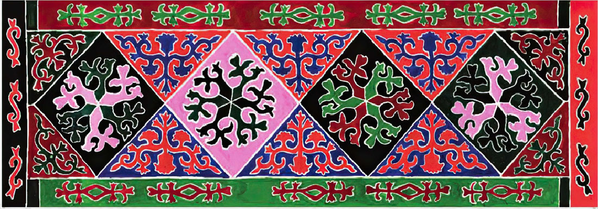
|
Kabardey keçesi ”Vupşa” / Kayseri, Pınarbaşı (Uzunyayla bölgesi), Dikilitaş köyü / Ustası: Zanile Önal ve Semiha Önal / Ölçüleri: 142 X 462 cm / Yapılış tarihi : 12.08.1990 tarihinde Emin Önal evinde tespit edilmiştir. |
Кабардинский войлок «Вупша» / Кайсери, Пынарбаши (район Узуньяйла), село Дикилиташ / Мастер: Заниле Онал и Семиха Онал / Размеры: 142 X 462 см / Дата постройки: Обнаружен в доме Эмина Онала 12.08.1990. |
”Dala Konmuş Kuşlar” |
”Птицы на ветке” |
|
Çeçen keçelerini derlemeye başladığımız ilk yıllarda, Tatayev-Şabanyants’ın Çeçen-İnguş ASSR de derlediği keçe örneklerine nazaran daha sıkça karşılaştığımız bitkisel motiflerin Türkiye’deki Çeçen keçelerine has bir özellik olduğunu düşünmüştük. Ancak; daha sonraki yıllarda, farklı kaynaklarda (60) Çeçenya’da yapılmış farklı keçe örneklerinde gördüğümüz bitkisel motifler bu düşüncemizin eksik bir değerlendirme olduğunu ortaya çıkardı. Buna göre, Türkiye’de üretilen Çeçen keçeleri 1860 yılı öncesine ait anavatanda yapılarak Anadoluya getirilen keçe örneklerinin kaynak alınarak çoğaltılmışlarından oluşmaktaydı. |
Мы начали собирать чеченский войлок в первый год, Татаев-Чабанянц, Чечено-Ингушская АССР, должен также сказать, что чувствовал, что у чеченцев в Турции цветочные мотивы встречаются чаще, чем в примере с войлоками, как мы думали, это особенность. Но в последующие годы растительные мотивы, которые мы видели в разных образцах войлока, сделанных в Чечне в разных источниках (60), показали, что это представление является неполной оценкой. Соответственно, печати чеченских источников, произведенные в Турции, состояли из отобранных образцов войлока, привезенного в Анатолию на родине Чогалтылмыша, изготовленного до 1860 года. |
|
1940’lı yıllarda Çeçen-İnguş halkının farklı paktlara dahil SSCB ye bağlı Çeçen-İnguş ASSR'de ve Türkiye’de yaşayan Çeçen ailelerinde üretilen keçe örneklerinde; aynı motiflerin kullanılmış olması bu sanatın; nesilden nesile aktarılarak görsel hafızalarda yer etmiş beğeni ve bilgi birikimine dayanarak yapıldığını ortaya koymaktadır. Bu benzerliğin en güzel örneklerinden birisi de köken ve kültür birliğinin bir sonucu olarak kullanılan “dala konmuş kuş” motifidir. Tatayev ve Şabanyants’ın eserinde yer alan 19, 37 ve 48 nolu örneklerde görülen motifler, aynı biçim ve anlayışla elinizdeki çalışmanın katalog bölümünde yer alan 30 ve 3 1 nolu örneklerde de tespit edilmiştir. |
Пакт 1940-х годов чечено-ингушского народа СССР о включении различных чечено-ингушских асов и войлоков в образец, произведенный в чеченской семье, проживающей в Турции; те же мотивы, что и в этом искусстве; Он показывает, что он построен на основе вкуса и знаний, передаваемых из поколения в поколение. Один из самых красивых примеров этого сходства — мотив «птица на ветке», использованный как результат единства происхождения и культуры. Мотивы, обнаруженные в образцах 19, 37 и 48 работы Татаева и Жабанянца, были также идентифицированы в образцах под номерами 30 и 31 в разделе каталога вашей работы, с той же формой и пониманием. |
|
(60) http://dic.academic.ru/dic.nsf/bse/150112/ Çeçen-İnguş Özerk Sovyet Sosyalist Cumhuriyeti / Büyük Sovyet Ansiklopedisi |
(60) http://dic.academic.ru/dic.nsf/bse/150112/ Чечено-Ингушская Автономная Советская Социалистическая Республика / Большая Советская Энциклопедия |
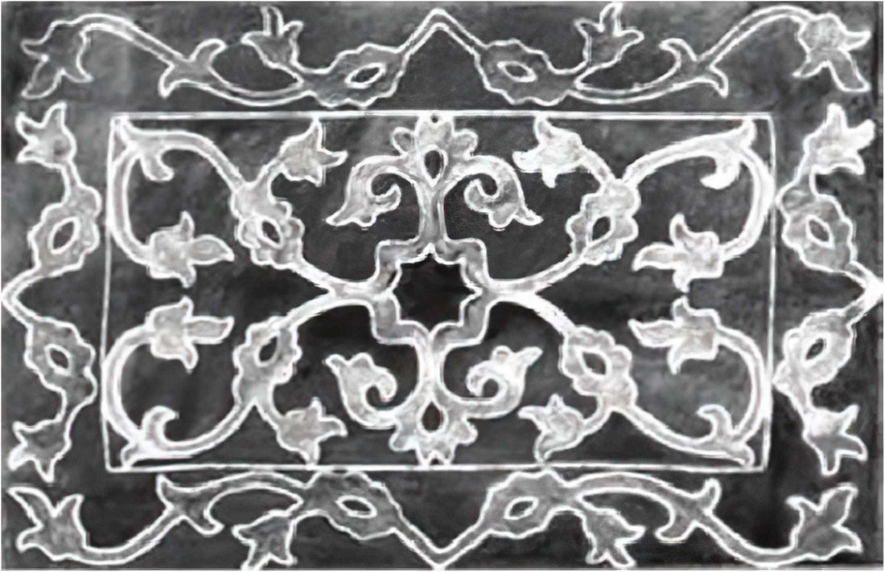
|
20. yüzyıl ortalarında Çeçen-İnguş ASSR'de tespit edilen keçe yaygı örneğinde yer alan bitkisel bezemeler ile büyük göçten sonra Türkiye’de üretilen Çeçen-İnguş keçelerinde yer alan motifler genel olarak aynı biçimsel özelliklere sahiptir. (Bu örneğin yer aldığı kaynak 1977 yılına basılan ; AGoldstein’ın ”Başni v Gorah” adlı eseridir) |
В середине ХХ века в Чечено-Ингушской АССР, обнаруженная после великого переселения растительных украшений, например, чечено-ингушских мотивов войлока, произведенных в Турции, в целом имеет те же формальные характеристики. (Источником для этого примера является книга А.Гольдштейна «Башни в Горах» , опубликованная в 1977 г. ) |
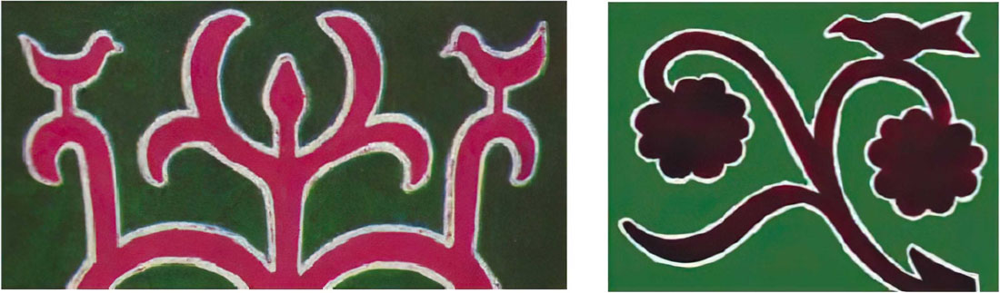
|
Tatayev ve Şabanyants’ın eserinde yer alan, Çeçen-İnguş ASSR de üretilmiş keçe örneklerinde görülen ”Dala konmuş kuş” motifinin (yukarıda solda) kullanılışı ile Türkiye’de üretilen Çeçen-İnguş keçelerindeki benzer motifler (yukarıda sağda) aynı kaynaklıdır ve aynı biçimsel anlayışın ürünüdür. |
Татаева и расположенного в Чабанянце работы, Чечено-Ингушская АССР также изготовила образец циновки с мотивом «Дала положил птицу» (вверху слева). Подобный мотив в чечено-ингушском войлоке, произведенном в Турции для использования (вверху справа), имеет такое же происхождение и такой же формальный подход товар. |
|
Çeçen-İnguş Keçeleri, ailelerin kendi gereksinimleri için üretilmiş, herhangi bir ticari amacı olmayan el sanatlarıdır. Otantik kültürel varlıkların korunmasında sembolik birtakım anlamlar da taşıyan bu keçelerin yapımının bütün safhaları kadınlar tarafından gerçekleştirilmiştir. Eski bir gelenek olan ve ”Belkhi” denilen yardımlaşma yöntemiyle gerçekleşen bu üretim görevinde, yün kırkımı ve bazı istisnai motif çizimi dışında erkeklerin üretime katkısı görülmez. |
Чечено-ингушский войлок — это изделия кустарного промысла, производимые для собственных нужд семьи, без каких-либо коммерческих целей. Все этапы производства этих войлочных изделий, которые также имеют некоторое символическое значение для защиты подлинных культурных ценностей, выполнялись женщинами. В этой производственной задаче, которая является давней традицией и реализуется методом солидарности под названием «Белхи», вклад мужчин в производство не виден, за исключением стрижки шерсти и некоторых исключительных рисунков. |
|
Anadolu'da üretilen ve bu eserde yer alan keçelerin tamamı enkrüste tekniğinde ve yaygı türlerinde yapılmışlardır. Keçeler genellikle duvar yaygısı, yer yaygısı ve seccade Kirlerinde üretilmişlerdir. Ayrıca yolluk olarak üretilen ve muhtemelen at koşum takımlarında kullanılmak üzere yapılmış keçe örneklerine de tesadüf edilmiştir. Büyük bir çoğunluğu oluşturan duvar ve yer yaygısı keçeler ortalama olarak 150 cm x 250 cm boyutlarında, çok renkli ve motifli el sanatlarıdır. Bazı örnekler daha küçük 143 x 370 cm veya daha büyük 230 x 340 cm ölçülerde yapılmıştır. Seccade olarak yapılan keçeler ortalama 70 x 150 cm boyutlarında, yolluk olarak yapılan keçeler ise 70 x 300 cm boyutlarındadır. Yine bir tür pösteki şeklinde tüylü ve saçaklı olarak 1950'1i yıllara kadar üretilen ”Giinciş yool isting” denilen renkli yaygı keçeler de bu örnekler arasındadır. Çeçenlerde bu tür renkli duvar yaygıları haricinde elbiselik olarak ”Meeaş” denilen keçevari kumaşlar da 1960-65'li yıllara kadar üretilmiştir. |
Все войлоки, произведенные в Анатолии и включенные в эту работу, были изготовлены в технике инкремента и типах матов. Войлок обычно производят из грязи настенного коврика, напольного коврика и молитвенного коврика. Кроме того, были обнаружены образцы войлока, произведенного в качестве бегунов и, возможно, сделанного для использования в конской сбруи. Фетры для настенных и напольных ковриков, которые составляют подавляющее большинство, представляют собой разноцветные и узорчатые изделия ручной работы, средний размер которых составляет 150 см х 250 см. Некоторые образцы были размером 143 x 370 см или больше 230 x 340 см. Войлок, сделанный как молитвенный коврик, имеет размер 70 x 150 см, а войлок, сделанный как бегунок, имеет размер 70 x 300 см. Также среди этих примеров — цветные матовые фетры, называемые «Giinciş yool isting», которые до 1950-х годов производились в виде разновидности флиса с ворсом и бахромой. В дополнение к этим цветным настенным коврикам в чеченцах до 1960-х и 65-х годов производились войлочные ткани под названием «Миаш». |
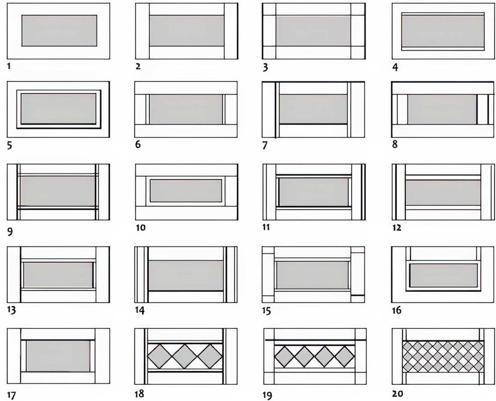
|
Türkiye'de üretilen Çeçen-İnguş keçelerinde kullanılan temel kompozisyon şekillerini gösteren şema. Keçelerin tamamı kapalı kompozisyon şeklinde düzenlenmiştir. |
Схема, показывающая основной состав, используемый в чечено-ингушских войнах, произведенных в Турции. Все фетры собраны в замкнутую композицию. |
|
Çeçen keçelerinde kullanılan başlıca gereçler yün, çeşitli doğal ve yapay boyalar, yün iplik ve kaytan şeritlerden oluşur. Dikiş izlerinin kapatılmasında kullanılan ve Çeçence ”Çımçırg” adı verilen şeritlerin örülmesinde, Çerkes Düğümü olarak bilinen bir teknik kullanılmıştır. Şeritler istenilen kalınlıkta ip kullanılarak ”beşli veya yedili ilmikli” olarak örülür. Şeritin bir yüzü ”hasır örgü” şeklinde diğer yüzü ise ”balık sırtı” görünümünde olur. Kaytan şeritler genellikle beyaz renkte olmasına karşılık, farklı renklerde de yapılabilmektedir. Bu şerit-kordonlar kadınlar tarafından el ve ayakların yardımıyla iplikten örülerek üretilmektedir. Hem dikiş izlerini kapatan, hem de renkli motiflerin arasında bir kontur oluşturan bu şeritleri, daha önceki bölümlerde sözünü ettiğimiz ”Pazırık Keçelerinde de görmekteyiz. Ayrıca Kazakistan, Kırgızistan gibi ülkelerde üretilen keçelerde de bu şeritler aynı amaçlarla kullanılmaktadır. |
Основные инструменты, используемые при производстве чеченского войлока, состоят из шерсти, различных натуральных и искусственных красителей, шерстяных ниток и ленты. Техника, известная как черкесский узел, использовалась для вязания полосок, которые на чеченском языке назывались «чимчирг» и использовались для закрытия следов швов. Полоски вяжутся «пятью-семью петлями» из пряжи нужной толщины. Одна сторона полоски выглядит как «сетка», а другая — как «елочка». Хотя полосы скольжения обычно белого цвета, они также могут быть разных цветов. Эти тесьмы женщины производят путем вязания из пряжи руками и ногами. Мы можем видеть эти полосы, которые закрывают следы стежков и образуют контур между цветными мотивами, в «Pazırık Felts», о котором мы упоминали в предыдущих разделах. Кроме того, эти полосы используются для тех же целей в войлоках, производимых в таких странах, как Казахстан и Кыргызстан. |
Kompozisyonlar |
Композиции |
|
Çeçen-İnguş Keçe kompozisyonları, geometrik düzenlemeli çeşitlemeler göstererek birçok temel tasarımdan oluşmuştur. Merkezde yer alan ana motifin bulunduğu kısımın çepeçevre kuşatılmasıyla oluşan ve ”Kert” adı verilen bu bordürlerin farklı kalınlıklarda ve değişik düzenlemelerle yerleştirilmesi kompozisyon şemalarının çeşitliliğini sağlamaktadır. Keçelerin kompozisyon anlayışlarında geometrik düzenlemelerin hakim olması, bu örneklerin analitik yapılarını ve form özelliklerini sonsuz karekterli, bordür ve merkezi gruplar olarak şekillendirilmesine imkan vermektedir. Geometrik düzenlemelerde görülen bu durum Çeçen Keçe Sanatının temel özelliklerinden birisidir. Buna göre keçelerde yirmi farklı keçe kompozisyonunun kullanıldığı görülür. Anadoluda tespit ettiğimiz bazı Çeçen keçelerinde görülen ”Baklava dilimli” kompozisyon düzenlemeler antik kökenli bir biçim olarak günümüz Karaçay, Kazak ve Kırgız keçelerinde de temel kompozisyon olarak yaygın bir şekilde kullanılmaktadır. |
Композиции чечено-ингушских войлоков состоят из множества основных узоров, демонстрирующих вариации с геометрическим расположением. Расположение этих границ, называемое «Керт», которое образуется путем окружения части, где расположен основной мотив в центре, и называемое «Керт», обеспечивает разнообразие композиционных схем. Преобладание геометрического расположения в составе войлока позволяет аналитическим структурам и формам этих образцов иметь форму границ и центральных групп с бесконечными знаками. Такая ситуация, наблюдаемая в геометрических композициях, является одной из главных особенностей чеченского войлочного искусства. Соответственно, видно, что в войлоках используется двадцать различных составов войлока. Композиция «нарезанной пахлавой», встречающаяся в некоторых чеченских войлоках, обнаруженных нами в Анатолии, широко используется в качестве основной композиции в сегодняшних карачаевских, казахских и киргизских войлоках как древняя форма. |
|
Tatayev ve Şabanyants'ın eserinde verdiği keçe örnekleri ile Anadolu'da üretilen Çeçen-lnguş keçeleri aynı teknik ve biçimsel özelliklerdedir. Ancak Grozniy'de Milli Müze arşivinde yaptığımız araştırmalarda Çeçenyada üretilmiş keçelerin Anadoludaki örneklerde rastlanmayan mozaik tekniği ile de yapıldığı ortaya çıkmıştır. Mozaik tekniği ile yapılan bu keçe örneklerinde baklava dilimli düzenlemeler olduğu gibi kıvnk dallı komplike simetrik motifler de bulunmaktadır. Ayrıca bu keçelerde kullanılan kompozisyon şekilleri de Çeçen keçelerinin temel kompozisyon biçimi olan yatay ve dikey çizgilerden oluşan farklı türlerdeki geometrik düzenlemelerdir. |
Образцы войлока, представленные в работах Татаева и Шабанянца, а также войлок чечен-ингуш, производимый в Анатолии, имеют одинаковые технические и формальные характеристики. Однако в ходе исследований, проведенных в архивах Национального музея в Грозном, выяснилось, что войлок, произведенный в Чечне, также был выполнен в технике мозаики, которой нет в анатолийских образцах. В этих образцах войлока, выполненных в технике мозаики, присутствуют ромбовидные композиции, а также сложные симметричные мотивы с изогнутыми ветвями. Кроме того, композиционные формы, используемые в этих войлоках, представляют собой геометрические композиции разного типа, состоящие из горизонтальных и вертикальных линий, которые являются основными композиционными формами чеченского войлока. |
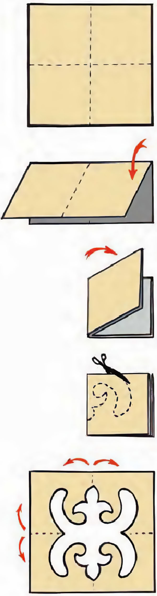
|
Çeçen-İnguş keçelerinde temel motiflerin tamamı simetrik çeşitlemelerden oluşur. Simetrik motifler, kalıp olarak kullanılan kağıtların katlanıp kesilmesi suretiyle elde edilir. Bu teknikle (motifi tasarlayan kişinin hayalgücü ve becerisine de bağlı olarak) çok çeşitli ve sınırsız sayıda simetrik biçimler elde etmek mümkündür. |
Все основные мотивы чечено-ингушских войлоков состоят из симметричных вариаций. Симметричные мотивы получаются путем складывания и вырезания бумаги, используемой в качестве шаблона. С помощью этой техники (в зависимости от фантазии и навыков человека, создающего мотив) можно получить большое разнообразие и неограниченное количество симметричных форм. |
|
Çeçen-İnguş keçeleri; plastik özellikleri açısından bitkisel dallar ve figüratif bir eğilimin stilize edilmiş non-figüratifsonuçlan olduğu anlaşılan komplike motifleri ile özgün bir biçimsel yapıya sahiptir. Keçelerin bezemesinde, merkeze yerleştirilen ve Çeçence "Bustum" denilen ana motifin büyük bir önemi vardır. Bu motif komplike ve simetrik bir yapıdadır. Daha önce yapılmış bir keçeden kopya olarak alınabildiği gibi motif çizimi konusunda becerikli birisinin yaptığı kalıbın uygulanması ile de oluşur. Bu merkezi motiflerde bazan bitkisel «kıvrık dallardan» oluşan bazan da «zoomorfolojik» etkilerin izleri açıkça göze çarpar. |
Чечено-ингушский войлок; Он имеет уникальную формальную структуру с растительными ветвями с точки зрения пластических особенностей и сложных мотивов, понимаемых как стилизованные нефигуративные результаты образного направления. В оформлении войлока большое значение имеет размещенный в центре главный мотив — «бюстум» по-чеченски. Этот мотив имеет сложную симметричную структуру. Его можно получить как копию с фетра, сделанного ранее, или он сформирован путем нанесения рисунка, сделанного кем-то, кто имеет опыт рисования мотивов. В этих центральных мотивах отчетливо видны следы «зооморфологических» эффектов, иногда состоящих из растительных «изогнутых ветвей». |
|
Simetrik motiflerin biçimlenmesinde, Pazınktan beri keçe sanatı ve dokuma türü el sanatlarında varlığını koruyan ”eli belinde” motifi ile olan yakınlık açıkça görülmektedir. Bu motiflerin bir diğer özelliği de düzenlemelerin zaman zaman komplamanter bir eğilim sonucu fonsuz bir şekilde yapılmış olmasıdır. |
В формировании симметричных мотивов отчетливо прослеживается родство с мотивом «рука на талии», сохранившимся в войлочном искусстве и ремеслах ткацкого типа со времен Пазынка. Еще одна особенность этих мотивов заключается в том, что аранжировки иногда создаются без основы в результате дополнительной тенденции. |
|
Keçelerde yer alan ve ”Kert” denilen bordürler de genellikle ana motifle uyumlu bir şekilde çizilmiş iki temel anlayışın ağır bastığı motiflerle süslenir. Bunlardan birincisi, dalgalı kıvrık çizgilerin görüldüğü; dalgalar üzerine çeşitli biçimlerde yerleştirilmiş yaprak ve çiçek çeşitlemelerin yer aldığı motif düzenlemeleridir. İkincisi ise birbirinden bağımsız ”kıvrık S dallı” stilize bitki motiflerinden oluşan düzenlemelerdir. Merkezi ana motifle onu çevreleyen bordürler arasında bulunan ince şerit bordürler iki renkli ve dalgalı olarak yapılmışlardır. İnce bordürlerde yer alan dalgalar ”Çeçen tarzında” iki farklı şekilde bazan köşeli olarak ”zik-zak” motifli, bazan da yuvarlak hatlı kıvrık dalgalı “Meander” motifli olarak uygulanmışlardır. |
Бордюры из войлока , называемые «Керт» , обычно украшены мотивами, в которых преобладают две основные концепции, гармонирующие с основным мотивом. Первая из них — это волнистые завитые линии; Это композиции из листьев и цветов, размещенные на волнах разными способами. Вторая — это аранжировки, состоящие из самостоятельных стилизованных под «изогнутую S-ветку» растительных мотивов. Тонкие полоски бордюров между центральным основным мотивом и окружающими его бордюрами выполнены двухцветными и волнистыми. Волны на тонкой кайме нанесены в «чеченском стиле» двумя разными способами, иногда с угловым мотивом «зигзаг», а иногда с изогнутыми волнистыми мотивами «Меандр» с круглыми линиями. |
|
Bu keçelerdeki bordür motifleri ile Kafkas halı ve kilimlerinde görülen bordür motifleri arasında şekil ve düzenleme benzerlikleri vardır. Anadolu Çeçen keçelerinde, Kafkasyadaki keçelerde de örneklerini gördüğümüz ”dala konmuş kuş ve horoz” figürleri, çeşitli haç ve gamalı haç çeşitlemeleri; ay ve yıldız gibi motifler sıkça kullanılan bezeme örnekleri olarak tespit edilmiştir. |
Есть сходство по форме и расположению между краевыми мотивами на этих войлоках и краевыми мотивами, которые можно увидеть на кавказских коврах и коврах. Фигурки «Птица и петух на ветке», образцы которых мы видим на анатолийских чеченских и кавказских войлоках, различные варианты креста и свастики; Такие мотивы, как полумесяц и звезда, были признаны часто используемыми примерами украшения. |
KAFKAS MOTİFLERİ |
КАВКАЗСКИЕ МОТИВЫ |
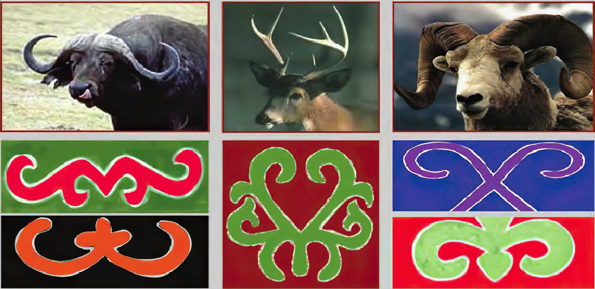
|
Hayvan Boynuzlarından esinlenerek üretilen Zoomorfolojik motif çeşitlemeleri |
Вариации зооморфологических мотивов, вдохновленные рогами животных |
|
Kafkas motiflerinin temel çıkış noktası birçok kültürde olduğu gibi tabiat ve görsel çevredir. Özellikle tarihöncesi dönemlerde birçok tabiat olayı çeşitli anlamlarla yüklü olarak, mitolojik semboller halinde imgeler ve motiflerle ifade edilmiştir. Mitolojik semboller tek tanrılı dinlere geçişle birlikte eski mana ve önemini yitirerek, görsel bir beğeni sonucunda yapılan süsleme unsurlarına dönüşmüştür. Ayrıca eski çağlardan beri Kafkasya’da gelenek halinde yaygın olarak kullanılan aile armaları olan “tamga”lar da bu tür motiflerle ortak özelliklere sahiptir (*). Kafkasyada yapılan arkeolojik buluntularda yer alan eserler üzerindeki motifler ile günümüz Kafkas motiflerinin bir çok ortak noktası vardır. Özellikle avadanlıklar üzerinde tesadüf edilen motiflerde günümüz Kafkas motiflerinin bir çok özelliği mevcut bulunmaktadır. Kafkas motiflerinin genel ve ortak özelliklerini şu şekilde sıralamak mümkündür. |
Основная отправная точка кавказских мотивов — природа и визуальная среда, как и во многих культурах. Особенно в доисторические времена многие природные явления выражались с различными значениями, образами и мотивами как мифологические символы. С переходом к монотеистическим религиям мифологические символы утратили свое прежнее значение и значение и превратились в декоративные элементы, созданные в результате визуального вкуса. Кроме того, «тамга» — фамильные гербы, широко использовавшиеся на Кавказе с древних времен, имеют общие черты с такими мотивами (*). Мотивы на артефактах, обнаруженные в археологических находках на Кавказе, имеют много общего с современными кавказскими мотивами. Есть много черт современных кавказских мотивов, особенно в мотивах ящиков для инструментов. Перечислить общие и общие черты кавказских мотивов можно следующим образом. |
|
1. Kafkas motifleri genellikle tabiat çıkışlı natüralist yaklaşımlardan oluşmuştur. Bunun sonucu bazı özellikler bütün motiflerde ortak noktalar olarak karşımıza çıkar. Bazı motifler hayvansal, bazı motifler bitkisel, bazı motifler ise insan simgeleri halinde ve daha çok nonfigüratif anlayışla yapılmıştır. Özellikle de Anadoluda yaşayan Çeçenlerin Keçelerinin birçoğu bitkisel bezemelidir. Yine sitilize edilmiş figüratif motifler de bu keçelerde büyük bir beğeni ile kullanılmıştır. Ünlü araştırmacı Rostovzeff'in ilk kez ” hayvan uslubu ” olarak adlandırdığı simetrik karakterli hayvan figürleri Kafkas motiflerinde karşımıza çıkar. Kafkas motiflerinde sitilize edilmiş figürler bazen motiflerin bir parçası olarak kulllanılmıştır. Bu tür motiflere Kafkasyadaki Adige El Sanatlarında, farklı tür ve teknikteki eserler üzerinde de tesadüf edilmektedir. |
1. Кавказские мотивы, как правило, состоят из натуралистических подходов, идущих от природы. В результате некоторые черты становятся общими для всех мотивов. Некоторые мотивы являются животными, некоторые — растительными, некоторые — человеческими символами и в основном нефигурирующими. В частности, большинство войлочных чеченцев, проживающих в Анатолии, украшены растительным орнаментом. Опять же, в войлоках с большим восхищением используются стилизованные фигуративные мотивы. В кавказских мотивах появляются фигурки животных с симметричными персонажами, которые известный исследователь Ростовзев впервые назвал «звериным стилем». В составе мотивов иногда использовались фигурки, стилизованные под кавказские мотивы. Подобные мотивы встречаются и в адиджеских промыслах Кавказа, на произведениях разных видов и техник. |
|
(*) Tamga Örnekleri hakkında daha geniş bilgi için bknz; Zafer SÜREN., ÇİPXE Kafkas Aile Damgaları, As Yayınları, İst. 2001. / Vasfi GÜSAR, ”Çerkeslerde Aile Markaları (Çipkhe-Çipxe)”, Yeni Kafkas Dergisi, S.30 (54), s-7, 1960. / Hasan YAHTANİGOV., SeveroKavkazskii Tamgi, Nalcık, 1993. / Mohammad Kheir HAGHANDOQA., ”Kafkas Ailelerinin Simge ve Sembolleri”, Kuzey Kafkasya Kültür Dergisi, S.68-70, İst. 1988, s.24-26., aynı makalenin devamı, a.g.e., S.71-73, İst.1988 , s.37-38. aynı makalenin devamı, a.g.e., S.74-75, İst. 1989, s.32. aynı makalenin devamı, a.g.e., S.76-78, Yst.1990, s.17. / Ufuk TAVKUL., Kafkasya Dağlılarında Hayat ve Kültür, Ötüken yay., İst. 1993, s.122-123. |
(*) Подробнее о сэмплах Tamga см. Zafer SÜREN., İPXE Kafkas Family Stamp, As Yayınları, İst. 2001. / Васфи ГЮСАР, ”Семейные бренды у черкесов (Chipkhe-Chipxe)”, журнал Yeni Kafkas, S.30 (54), p-7, 1960. / Хасан ЯХТАНИГОВ., Северо-Кавказский Тамги, Налджик, 1993. / Мохаммад Хейрка ., «Символы и символы кавказских семей», Журнал «Культура Северного Кавказа», С.68-70, Ист. 1988, с.24-26., Продолжение той же статьи, выше, с.71-73, Ist.1988, с.37-38. Продолжение той же статьи, там же, С.74-75, Ист. 1989, стр.32. Продолжение той же статьи, выше, с.76-78, Ист.1990, с.17. / Уфук ТАВКУЛ., Жизнь и культура в горах Кавказа, Ötüken yay., İst. 1993, стр.122-123. |
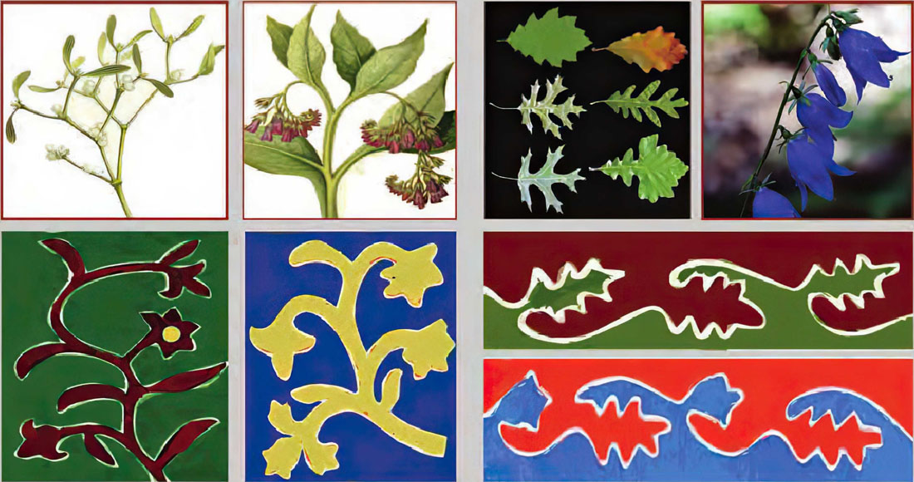
|
Bitkisel esinlenmelerle üretilen Naturalist motif çeşitlemeleri. |
Варианты натуралистических мотивов, вдохновленные травами. |
|
2. Motifler simetrik (**) çeşitlemelerle yapılmıştır. Kafkas motiflerinin genel özelliklerinin başında ”simetrik çeşitlemelerin” büyük bir beğeni ile bütün örneklerde kullanılmış olması gelmektedir. Öyle ki Kafkas motiflerinde simetrinin hemen her çeşidi kullanılmıştır. Birçok uygarlığın süsleme sanatlarında sıkça karşılaştığımız simetrik motif uygulamaları aynı zamanda çok eski bir geçmişe sahiptir. Bilinen ilk simetrik motifler Eski Anadolu Uygarlıklarından günümüze ulaşan kalıntılarda 10.000 yıl öncesine ait eserler üzerinde görülmektedir. |
2. Мотивы выполнены в симметричных (**) вариациях. Одна из основных характеристик кавказских мотивов — во всех примерах с большим восхищением используются «симметричные вариации». Настолько, что в кавказских мотивах используются почти все типы симметрии. Применение симметричных мотивов, которые мы часто встречаем в декоративном искусстве многих цивилизаций, также имеет очень давнее прошлое. Первые известные симметричные мотивы можно увидеть на артефактах, датируемых 10 000 лет назад в руинах древних анатолийских цивилизаций. |
|
3. Bütün Kafkas motifleri kıvrak ve yumuşak eğrilerden oluşur. Köşeli motiflere rastlanmaz. Sadece Dağıstanda dokunan kilim ve halılarda, bölgenin etnik çeşitliliğine bağlı olarak görülen köşeli motifler, orta ve batı kafkasyada dokunan el sanatlarında hemen hiç görülmez. Konumuzu oluşturan keçelerde kullanılan bu kıvrık motifler malzemenin şekillendirmeye uygun olması nedeniyle büyük bir çeşitlilik göstermektedir. Kafkas Motifleri Anadoluda sadece keçelerde değil, aynı zamanda bu örnekleri bulduğumuz bölgelerdeki mezar taşlarında, evlerin duvarlarında, ahşap ve deri malzemeler üzerinde de sıkça kullanılmıştır. |
3. Все кавказские мотивы состоят из гибких и мягких линий. Угловые мотивы не встречаются. Угловые мотивы, которые встречаются на коврах и коврах, тканных только в Дагестане, в зависимости от этнического разнообразия региона, почти не встречаются в изделиях ручной работы, тканных на центральном и западном Кавказе. Эти изогнутые мотивы, используемые в войлоках, из которых состоит наш предмет, демонстрируют большое разнообразие, поскольку материал подходит для придания формы. Кавказские мотивы часто используются не только на войлоке в Анатолии, но и на надгробиях в тех регионах, где мы находим эти образцы, на стенах домов, на дереве и кожаных материалах. |
|
4. Renkli motiflerde kontrast (zıt) renkler bir arada kullanılarak yüzeylere canlı bir ifade kazandırılır. Tarih öncesinden günümüze bu saydığımız ortak özellikleri koruyarak ulaşan Kafkas motifleri bazı kültürel etkileşimlerle konularını daha çeşitli hale getirmiştir.Örnek verecek olursak 8.yy’dan 18.yy.'a uzanan bin yıllık İslamlaşma süreci ile birlikte hilal-yıldız motifi yaygın olarak kullanılmaya başlanmıştır. Kafkas Motiflerinin günümüzde en bilinen çeşitlerinden birisi de, Dağıstanda karşımıza çıkan “kaiytak” motifleridir. |
4. В красочных мотивах контрастные цвета используются вместе, чтобы придать поверхности живую выразительность. Кавказские мотивы, дошедшие до наших дней, сохранив эти общие черты, сделали их сюжеты более разнообразными благодаря некоторым культурным взаимодействиям. Например, в течение тысячелетнего процесса исламизации с 8 по 18 века широко использовался мотив серпа и звезды. Одна из самых известных разновидностей кавказских мотивов сегодня — это мотивы «кайытак», с которыми мы сталкиваемся в Дагестане . |
|
(**) Simetri: Eski Yunanca'da ”uyumlu ölçülük” anlamına gelir. Simetrik uygulamalar tarih öncesi çağlardan itibaren toplumlarırı biçim ve forma dayalı bütün yapıtlarında yaygın olarak kullanılmıştı. Antik dönemlerde simetri, ”estetik güzelliğin objektif olarak ifade edilmesinde” kullanılan bir anlayış olarak gelişmişti. Ancak ilkel toplumlardan itibaren önce içgüdüsel olarak gelişen simetri anlayışı, genel olarak el sanatlarında kullanılan bir özellik olarak biçimlenmiştir. |
(**) Симметрия: в переводе с древнегреческого означает «гармоничная мера». Симметричные практики широко использовались во всех его работах, основанных на форме и форме с доисторических времен. В древности симметрия развивалась как понятие, используемое для «объективного выражения эстетической красоты». Однако понимание симметрии, которое инстинктивно развивалось со времен примитивных обществ, сформировалось как особенность, обычно используемая в ремеслах. |
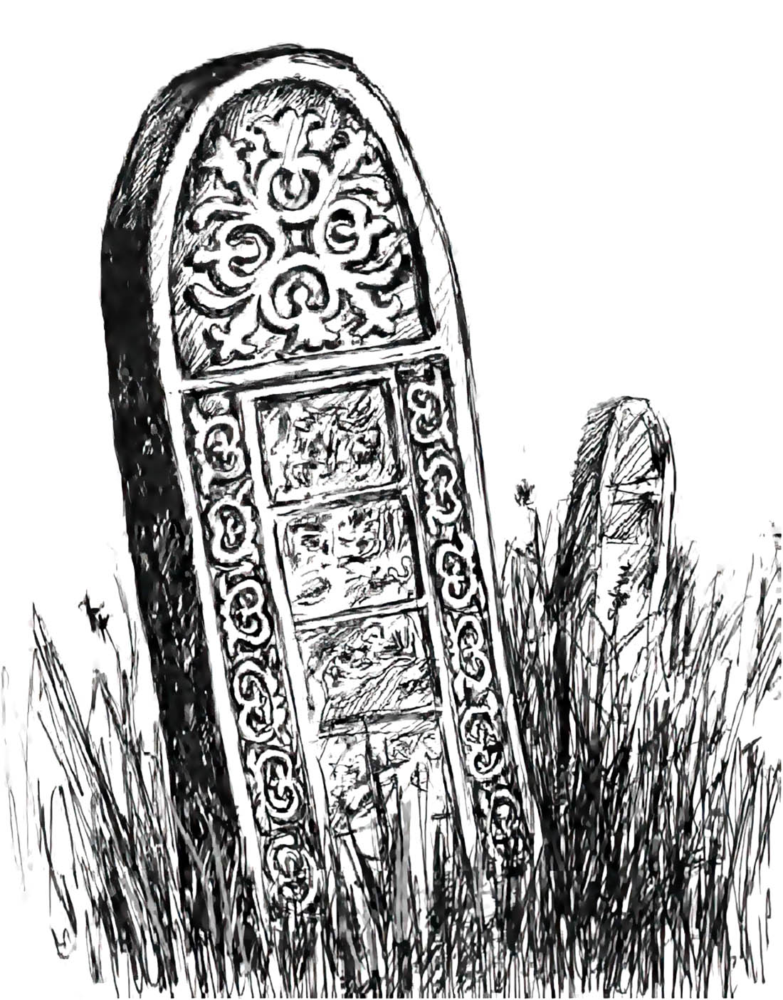
|
Türkiyede yaşayan Çeçen-İnguşlara ait geleneksel motifler sadece keçe yaygılarda değil, farklı yüzey ve malzemelerde de karşımıza çıkar. Aynı biçimsel özelliklere sahip bu motifler, bazen mezar taşlarında (Yukarıda), |
Традиционные мотивы чечено-ингушей, проживающих в Турции, не только войлочные циновки, хорошо проявляются на различных поверхностях и материалах. Эти мотивы с такими же формальными чертами иногда используются на надгробиях (см. илл.), |
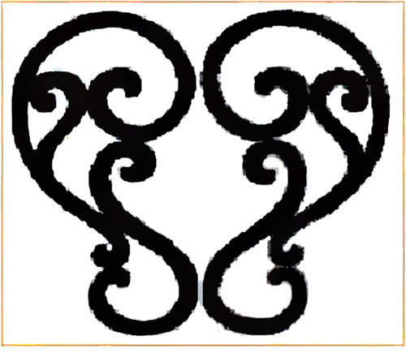
|
bazen bir evin yüklüğünde ahşap oyma olarak (Aşağıda solda) |
иногда как резьба по дереву в шкафу дома (см. илл.) |
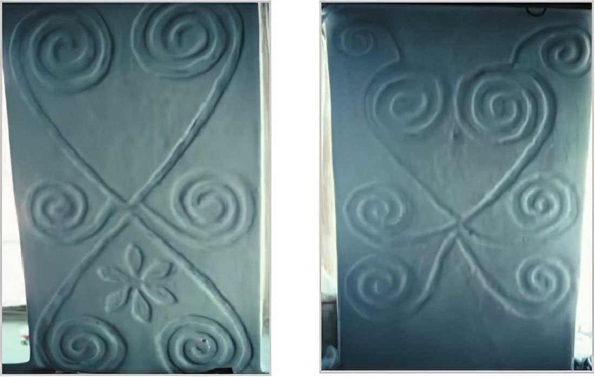
|
bazen de evlerin duvarlannda sıvaya oyularak (Aşağıda sağda) yaygın bir şekilde kullanılıp günümüze ulaşmıştır. Resimlen Çardak “Eski Mezarlık”ta ve yine Çardak’ta ”Mahmut Çeçen evinde” 1988 yılında tespit edilmiştir. |
иногда его высекали в гипсе на стенах домов (см. илл.), и он широко использовался и дошел до наших дней. Изображенный на фото Чардак был обнаружен на «Старом кладбище» и снова в «Чеченском доме Махмута» в Чардаке в 1988 году. |
|
Bu kitapta derlenen Çeçen-İnguş Keçe örneklerinin tamamında kullanılan motifler orjinal çizgiler taşıyan Kafkas Motifleri grubuna girmektedir. El Sanatlarında kullanılan motif çeşitleri, bir toplumda ya da bölgede, yapıldığı dönemin sanat anlayışı ile şekillenip ait olduğu kültürün belirgin ortak izlerini taşırlar. Farklı amaçlarla, değişik tekniklerle yapılan aynı kültüre ait el sanatlarında kullanılan motifler genellikle ortak özelliklere sahiptir. Teknik ve malzemenin getirdiği zorunlu değişimler dışında, motifkarekterleri sabit kalırken, sanat anlayışının çağlara göre yorumlanıp şekillenmesi sonucunda farklı yorumlara da ulaşılılın Bu bilgilerin ışığında Çeçen-İnguş keçelerinde kulandan motiflerin Kafkas El Sanatlarında kullanılan motiflerle büyük benzerlikler taşımasına, hatta aynı olmasına şaşmamak gerekir. |
Мотивы, использованные во всех образцах чечено-ингушского войлока, собранных в этой книге, входят в группу «Кавказские мотивы» с оригинальными линиями. Типы мотивов, используемых в ремеслах, несут в себе общие следы культуры, к которой они принадлежат, сформированные художественным пониманием того периода, в который они были созданы в обществе или регионе. Мотивы, используемые в изделиях ручной работы одной и той же культуры, выполненных с использованием разных техник и для разных целей, обычно имеют общие черты. Помимо обязательных изменений, вносимых техникой и материалом, различные интерпретации могут быть достигнуты в результате интерпретации и формирования понимания искусства в зависимости от возраста, при этом характеры мотивов остаются неизменными. |
|
1900'lü yıllara kadar keçelerde motiflendirmeler sadece duvar yaygılarına yapılmaktaydı. Yere veya divan üzerine serilen keçelere herhangi bir motif yapılmıyordu. Şüphesiz ki bu durum Çeçen keçelerinde kullanılan motiflerin taşıdığı sembolik anlamlarla yakından ilgili olmalıydı. Ancak bu anlamlar zamanla tamamen unutulduğundan günümüze ulaşan bazı yer yaygılannda da motiflendirmeler yapılmıştır. |
До 1900-х годов мотивы на войлоке наносились только на настенные коврики. Никаких мотивов не было на войлоке, уложенном на пол или диван. Несомненно, эта ситуация должна была быть тесно связана с символическим значением, которое несут мотивы, использованные в чеченских войлоках. Однако, поскольку эти значения были полностью забыты с течением времени, на некоторых сохранившихся участках суши также были созданы мотивы. |
|
Anadolu'da yapılan araştırmalarda hala bazı evlerin duvarlarında geleneksel Kafkas motiflerinin çizilmiş olduğu görülür. Çardak’ta bazı Çeçen evlerinde duvarlar ve peş (ocak) ler üzerinde görülen duvar motiferi geleneksel kafkas motiflerinin eşsiz örneklerindendir. Ayrıca mezar taşları ve ahşap oyma işlerindeki bu motifler günümüz araştırmacılarının ilgi alanına girmeyi beklemektedir. |
Исследования, проведенные в Анатолии, показывают, что традиционные кавказские мотивы до сих пор рисуются на стенах некоторых домов. Стенные мотивы на стенах и пе (очагах) некоторых чеченских домов в Чардаке являются уникальными образцами традиционных кавказских мотивов. Кроме того, эти мотивы на надгробиях и резьбе по дереву ждут интереса современных исследователей. |
|
Özellikle Uzunyayla yöresi köylerinde üretilen Çeçen keçelerinde sıkça karşımıza çıkan ”Baklava dilimi” kompozisyonla ve ”Svastika/ Gamalıhaç” motifli keçe yaygı örneği. Çeçenya, inguşetya ve Dağıstan’da üretilen çeşitli el sanatı örneklerinde de tesadüf edilen bu tür gamalıhaç motifleri gerçekte ilk çağlardan beri birçok toplum tarafından yaygın bir şekilde kullanılmıştır. |
Образец войлочного коврика с композицией «Кусочек пахлавы» и мотивами «Свастика / Свастика», которые часто встречаются в чеченских войлоках, производимых особенно в селах Узуняйлинского района. широко используется сообществом. |
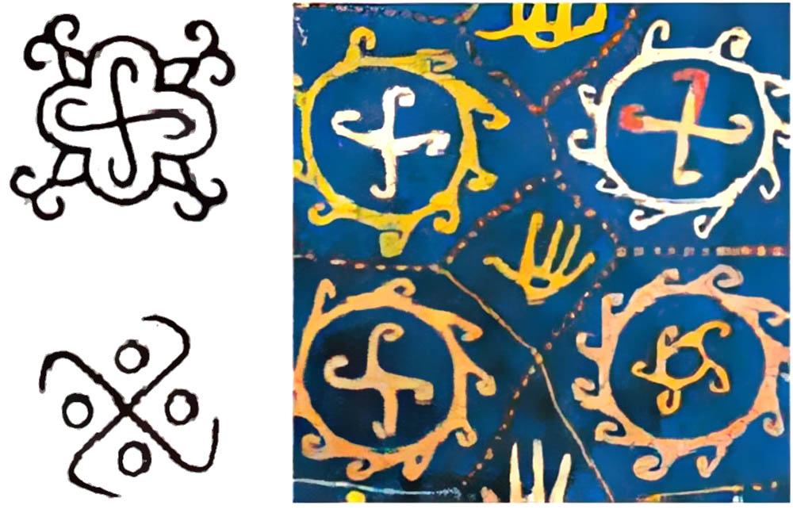
|
Dağıstan el sanatı örneklerinden ”Kaitag” türü tekstil ürünlerinde ve çeşitli taş oymalarda kullanılmış gamalı haç motifi örnekleri. |
Примеры мотивов свастики в текстильных изделиях типа «Кайтаг» и разнообразной резьбе по камню из образцов дагестанских ремесел. |
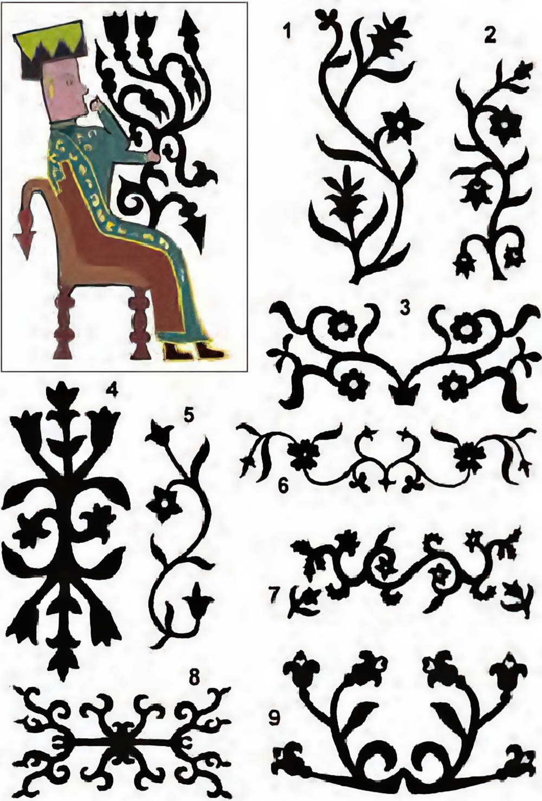
|
Altay-Pazırık Kurganlarından çıkan ”keçe” buluntuları arasında ”Oturan ilahe” olarak adlandırılan figürün elinde tuttuğu ”hayat ağacı” motifi ile Çeçen-inguş keçelerinde çok sık olarak kullanılan tomurcuklu, dallı, kıvrık bitkisel motifler şaşaılacak derecede birbirlerime benzerlikler göstermektedir. Özellikle dalların uçlarına yerleştirilen tomurcuk ve yaprak motifleri aynı biçimsel özelliktedir. |
Среди «войлочных» находок из Алтай-Пазырыкских курганов, мотив «древа жизни», удерживаемый фигурой, называемой «сидящим божеством», и бутоны, ветвистые и изогнутые растительные мотивы, часто используемые в чечено-ингушских войлоках, обнаруживают удивительное сходство друг с другом. мотивы бутонов и листьев имеют одинаковые формальные черты. |
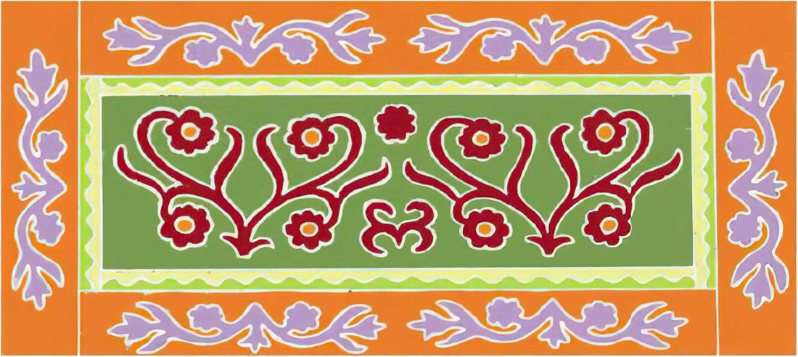
|
Göksun-Küçüksu köyünde 2002 yılında tespit edilen Çeçen keçesinde Pazırık keçelerindeki benzer motifler ilgi çekicidir. Yina aynı anlayışın biçimsel izlerini taşıyan benzer motiflere, katalog bölümümüzde yer alan keçe örneklerinde de sıkça tesadüf edilecektir. |
Интересны похожие мотивы в пазырыкских войлоках из Чеченского войлока, найденного в деревне Гёксун-Кучуксу в 2002 году. Опять же, похожие мотивы, несущие формальные следы того же понимания, будут часто встречаться в образцах войлока в нашем разделе каталога. |
|
Kökenleri Urartu lara kadar dayanan ve başka birçok toplumun da kültürel değerleri arasında yer alan ”hayat ağacı” imgesi Çeçen sanatında yaygın olarak kullanılmıştır. Çeçen keçelerinde tespit ettiğimiz bitkisel ve non figüratif kıvrık dal motiflerinin hayat ağacı kaynaklı olduğu görülmektedir. Ayrıca, Pazırık kurganlarından çıkan keçe yaygılardan ”İlahenin elinde tuttuğu dal”motifi ile Çeçen keçelerinde sıkça karşılaşılan ”kıvrık dal” motifleri şaşırtıcı bir şekilde biçimsel benzerliklere sahiptir. Bu benzerlik İskitlerin Kafkasyadaki hakimiyet dönemlerine dayanan bir etkileşimin sonucunda gerçekleşmiş olmalıdır. |
”Жизнь — одна из культурных ценностей многих других обществ, берущая свое начало еще с урартов. Изображение « дерева » широко используется в чеченском искусстве. Видно, что растительные и нефигуративные мотивы изогнутых ветвей, которые мы идентифицировали в чеченских войлоках, происходят от дерева жизни. Кроме того, мотив «ветвь, которую держит божественный» из войлочных циновок из курганов Пазырык, и мотив «изогнутой ветви», часто встречающийся в чеченских войлоках. У него удивительно формальное сходство , которое, должно быть, было результатом взаимодействия, восходящего к периоду скифского владычества на Кавказе. |
Renkler |
Цвета |
|
Çeçen-İnguş keçeleri işlevsel özellikleri, motif seçimi kadar, estetik ve sanatsal bir kaygı ile yapıldığı izlenimi uyandıran renk kullanımıyla da ilginç özelliklere sahiptir. |
Чечено-ингушский войлок обладает интересными функциональными особенностями, выбором мотивов, а также использованием цветов, которые создают впечатление, что они созданы с эстетической и художественной заботой. |
|
Renk seçimi bu keçeyi üreten insanların kendi kişisel tercihlerinin sonucunda çok çeşitli ana ve ara tonların birarada kullanılması ile oluşmuştur. Keçelerde kişisel tercih kadar, boyar maddelerin verdiği imkanlara dayanan otuzdan fazla renk tonu tesbit edilmiştir. Bu özellik, renklendirmelerde bilinçli bir seçimin yapılabildiğini ve keçelerin istenilen renklerde boyanabildiğini de ortaya koymaktadır. Kırmızı ve turuncunun tonları Çeçen-İnguş Keçelerinde en çok kullanılan renklerin başında gelmektedir. Bunlardan sonra ençok tercih edilen renkler ise mor ve lacivert tonlarıdır. Yeşil ve sarı arasındaki tonlar ise bu renklerden sonra tercih edilmiştir. Özellikle ”Hardal yeşili” veya ”Kına rengi” dediğimiz ton keçelerin birçoğunda kullanılmıştır. |
Выбор цвета был создан сочетанием различных основных и промежуточных тонов в результате личных предпочтений людей, производящих этот войлок. В войлоках было определено более тридцати оттенков, основанных на возможностях красителей, а также на личных предпочтениях. Эта особенность также показывает, что можно сделать осознанный выбор окраски и что войлок можно окрасить в желаемый цвет. Оттенки красного и оранжевого — наиболее часто используемые цвета в чечено-ингушском войлоке. После них наиболее предпочтительны пурпурные и темно-синие тона. После этих цветов предпочтение отдавалось зеленым и желтым тонам. В частности, оттенок, который мы называем «горчично-зеленый» или «цвет хны», используется во многих ковриках. |
|
Çeçen-İnguş Keçeleri genellikle sıcak renklerin kullanımıyla oluşmuştur. Ayrıca, sıcak ve soğuk renklerin, aynı yüzeyde olgun bir yorumlamayla dengeli bir biçimde kullanılması bu keçelerin temel özellikleri arasındadır. Sıcak ve soğuk renkler de oluşturulan bu karşıtlık, aynı zamanda keçelerin büyük bir çoğunluğunda kullanılmış olan, ”Kontrast (: karşıt) Renkler” ilişkisi için de söz konusudur. Hatta bazı keçe örneklerinde aynı yüzeyde birden çok kontrast renk ilişkisi kurulmuştur. Ençok kullanılan kontrast renk ilişkisi, kırmızı ile yeşil tonları arasında görülmektedir. Turuncu ile mavi tonları arasında kurulan kontrast ilişkilerde oldukça yaygındır. Bu durumda, kontrast renk kullanımının, Çeçen-İnguş Keçeleri için en belirgin özelliklerden birisi olduğunu rahatça ileri sürebiliriz. |
Чечено-ингушский войлок обычно формируется за счет использования теплых тонов. Кроме того, одной из основных особенностей этих войлоков является сбалансированное использование теплых и холодных цветов на одной поверхности со зрелой интерпретацией. Этот контраст, в котором также создаются теплые и холодные цвета, также является предметом обсуждения для отношения «Контраст (: противоположных) цветов», которое используется в большинстве фетров. Фактически, в некоторых образцах войлока на одной и той же поверхности было установлено более одного отношения контраст-цвет. Наиболее часто используемое соотношение контрастности и цвета наблюдается между красными и зелеными тонами. Часто встречаются контрастные отношения между оттенками оранжевого и синего. В этом случае можно смело утверждать, что использование контрастных цветов — одна из самых отличительных черт чечено-ингушского войлока. |
Boyama |
Картина |
|
Keçelerin renklendirmelerinde yalcın zamanlara kadar halk arasında ”kök boya”, bilimsel olarak alizarin adı verilen ”doğal” boyalar kullanılmıştı. Daha sonraki yıllarda bu tür boyaların elde edilmesinin güçlüğü nedeniyle, kolay bulunan ”suni” toz boyaların kulanımı yaygınlaşmıştı. |
До недавнего времени для окраски войлока использовались «марена» и «натуральные» красители, получившие научное название ализарин. В последующие годы из-за сложности получения таких красок широкое распространение получили легкодоступные «искусственные» порошковые краски. |
|
Doğal boyalar tabiattaki bazı böceklerden, çeşitli bitki köklerinden, dalından, yapraklarından, çiçek ve meyvelerinden faydalanılarak yapılıyordu. 19. Yüzyılda sentetik (yapay) boyaların icadına kadar, doğal boyalar insanlık tarihinin en erken dönemlerinden beri tüm dünyada yaygın bir şekilde kullanılmaktaydı. |
Натуральные красители были сделаны с использованием некоторых насекомых, различных корней, ветвей, листьев, цветов и фруктов растений. До изобретения синтетических (искусственных) красителей в 19 веке натуральные красители широко использовались во всем мире с самых ранних времен истории человечества. |
|
MÖ 800 yıllarında Asur kralı II. Sargon, Urartu krallığını işgal ettiğinde yağmalanan tekstil ürünlerini de kayıt altına aldırmıştı. Tablet kayıtlarına göre kırmızı renkli bu tekstillerin de Ağrı ve çevresindeki bitkilerden yararlanılarak renklendirildiği anlaşılmaktadır. (61) |
В 800 г. до н.э. ассирийский царь II. Когда Саргон вторгся в царство Урарту, он также записал награбленные текстильные изделия. Согласно записям на табличках, эти красные ткани окрашены с помощью растений в Агры и его окрестностях. (61) |
|
Osmanlı döneminde ise Orta ve Batı Anadolu'da, dönemindeki yüksek vergilere rağmen çok kazançlı olduğu için yaygın bir şekilde tarlalara ”boya otu” da denilen ve kumaş boyamasında kullanılan kırmızı renk tonlarının elde edildiği endemik bir bitki olan ”cehri” ekiliyordu. Anadolu'da boyama maddelerinin elde edildiği çok sayıda bitki vardı. Bu bitkilerden tarih boyunca çeşitli boya maddeleri elde edilmişti. |
В период Османской империи «облепиха», эндемичное растение, также известное как «красильная трава» и использовавшееся при крашении тканей, выращивалась на полях в Центральной и Западной Анатолии, потому что она была очень прибыльной, несмотря на высокие налоги в то время. В Анатолии было много растений, на которых получали красящие материалы. На протяжении всей истории из этих растений получали различные красители. |
|
Yaklaşık yüz yıl öncesinden günümüze kalan bazı keçelere baktığınızda, renklerin geçen zamana rağmen parlaklık ve canlılıklarını yitirmediklerini hatta renklendirmenin mükemmel bir uyumluluk gösterdiğini görürüz. Bu durum kullanılan doğal boyaların kalitesiyle doğrudan ilgilidir. Ancak bu kaliteyi yakalayan kök boya ustaları hakkında yeterli bilgimiz yoktur. Küçüksu köyünde yapılan Çeçen keçelerinin, yapım sırasında köye dışardan (Fındık Köyünden) gelen bazı boyacı ustaları tarafından renklendirildiği tespit edilebilmiştir. Keçe yapan ailelerin boya tariflerini yaşlılardan öğrenerek, tarife göre biraz da demene yanılma yoluyla tesadüflere bağlı ancak başarılı bir şekilde uyguladıklarını da söyleyebiliriz. |
Когда вы смотрите на войлок, который сохранился до наших дней около ста лет назад, мы видим, что цвета не теряют своей яркости и живости, несмотря на время, и даже окраска демонстрирует совершенную гармонию. Эта ситуация напрямую связана с качеством используемых натуральных красителей. Однако у нас недостаточно информации о мастерах марены, достигших этого качества. Было установлено, что чеченские войлоки, изготовленные в селе Кучуксу, были раскрашены некоторыми мастерами-малярами, пришедшими в село извне (село Фындик) во время производства. Можно также сказать, что семьи, занимающиеся войлоком, научились рецептам красок у пожилых людей и успешно применяли их, в зависимости от совпадения, по ошибке. |
|
(61) Recep KARADAĞ, Doğal Boyamacılık, DÖSİM, Ankara 2007, s.8 |
(61) Реджеп КАРАДАГ, Натуральная живопись, ДЁСИМ, Анкара 2007, стр.8 |
|
Çok çeşitli türleri olan ve doğada kolaylıkla bulunan Papatya bitkisi doğal boya yapımında kullanılan boyarmaddeler arasındadır. Çeçen keçelerinde sıkça karşımıza çıkan ”Açık yeşil” ve ”Kına yeşili” renklerini veren boyaların elde edilmesinde de papatya çeşitleri kullanılmıştı. |
Ромашка, которая имеет большое разнообразие видов и легко встречается в природе, входит в число красителей, используемых при производстве натуральных красителей. Сорта ромашки также использовались для получения красителей, придающих цвета «светло-зеленый» и «хна-зеленый», которые мы часто встречаем в чеченских войлоках. |
|
Boyama işlemine öncelikle büyük bir kazan veya leğen içerisinde, boyalı suyun hazırlanışı ile başlanırdı. Bu iş için daha önceden hazırlanan ve dinlendirilip tortuları eritilen, kıvam olarak hazırlanan malzemeler kullanılırdı. Kökboyaları elde edebilmek için doğadan toplanan yapraklar, bitki kökleri ve bazı böceklerin kabukları, büyük kazanlar içinde suyla kaynatılır, rengin koyu veya açık nuanslarını sağlamak için de kaynatma aşamasında belirli süreler uygulanırdı. |
Процесс окраски начинался с приготовления окрашенной воды в большой миске или тазу. Для этой цели использовались ранее подготовленные материалы, отстоявшиеся, а их остатки расплавлялись и получали консистенцию. Чтобы получить натуральные красители, листья, корни растений и панцири некоторых насекомых, собранные в природе, кипятили с водой в больших котлах, а во время фазы кипячения применяли определенные периоды для получения темных или светлых оттенков цвета. |
|
Keçenin boyanacağı suyun sıcaklığının ılık olması ve boyama işlemi sırasında sabit kalması gerekirdi. Keçelerin parçalar halinde boyanmaları gerektiğinden bu işlem her renk için ayrı ayrı yapılırdı. Boyama işleminin zahmetli olması, boyaların kullanıldıktan sonra hemen atılmaması veya daha ekonomik kullanılması için birkaç keçeye ait parçalar aynı zaman içerisinde, birarada renklendirilirdi. Reklendirme süreleri, keçenin boyayı emme ve doyması işlemi her renk için farklı zaman diliminde gerçekleşirdi. Keçe parçalarının boya içerisine yatırıldıktan sonra sık sık ağaçtan yapılmış bir kürek veya maşayla karıştırılıp, keçe yüzeyinin her yerine aynı oranda boyanın işleyerek, renk tonunun da keçe parçanm her yerinde aynı olması sağlanırdı. Keçe parçalarının boyayı tam olarak almasından sonra kurutulmasma geçilir. Bazı açık tonlar ikinci bir boyama ve mordanlama işleminden geçirilerek istenilen daha koyu renk elde edilirdi. Gerçekte hiçbir doğal boya maddesi her zaman aynı tonda renk vermez, boyanın suya karıştırılma kıvam ve miktarına, kalitesine, keçenin boyalısu içerisinde kalma süresine, suyun veya ortamın sıcaklığına, yardımcı maddelere göre değişik renk tonları elde edilirdi. Renkler, denenerek bulunur ve aynı tonu ikinci bir kez elde etmek imkânsızlaşırdı. Bu nedenle, doğal malzemeyle gerçekleştirilen bir boyamadan bir diğerine farklı renk ve tonlar elde edilirdi. Yine, bitkilerden çıkan özsuların bir kısmı yünü doğrudan doğruya boyayabildiği gibi, bazıları da tek başına boyayamaz, boya banyosuna mordanlama denilen üçüncü bir madde ilâvesi gerekirdi. Keçe ustaları boyalarının ”mordanlanarak” kalıcı olması için ise Çeçence ”Ciiç ’adı verilen ”Göztaşı” (:Bakır sülfat / CuSO4.5H2O) kullanılıyordu. |
Температура воды, в которой будет окрашиваться войлок, должна быть теплой и оставаться постоянной в процессе окрашивания. Поскольку войлок нужно было красить по частям, этот процесс выполнялся отдельно для каждого цвета. Для того чтобы процесс окрашивания был трудоемким, чтобы красители не выбрасывались сразу после использования, а также для более экономичного использования, части, принадлежащие нескольким войлокам, окрашивались вместе одновременно. Рекламные периоды, процесс впитывания и насыщения краски войлока будет происходить в разные периоды времени для каждого цвета. После того, как кусочки войлока были нанесены на краску, их часто смешивали лопатой или щипцами из дерева, и одинаковое количество краски наносилось на все части поверхности войлока, и цветовой тон был гарантирован одинаковым по всей поверхности войлока. После того, как войлочные детали полностью впитают краску, начинают сушку. Некоторые более светлые оттенки были подвергнуты второму процессу окрашивания и протравливания для получения желаемого более темного цвета. На самом деле ни один натуральный краситель не всегда дает один и тот же оттенок, разные цветовые тона были получены в зависимости от консистенции и количества краски, смешанной с водой, качества, продолжительности пребывания войлока в окрашенной воде, температуры воды или окружающей среды и вспомогательных веществ. Цвета были протестированы, и второй раз получить тот же оттенок было невозможно. Поэтому от одной картины с натуральными материалами к другой получаются разные цвета и тона. Опять же, часть сока растений могла напрямую окрашивать шерсть, а некоторые не могли красить ее в одиночку, в красильную ванну нужно было добавить третье вещество, называемое крашением. Для того, чтобы краски мастеров по войлоку были «мордантизированными» и стойкими, использовались «Göztaşı» (: сульфат меди / CuSO4,5H2O) , называемый на чеченском «Ciiç» . |
|
Günümüzde, doğal boyalar hakkında çeşitli kaynaklarda (62) çok detaylı bilgiler bulunmaktadır. Ancak sahada yaptığımız derlemelerde ne yazık ki bu konuda çok az bilgiye ulaşılmıştır. Buna göre Çeçen keçe ustalarının boyar maddeleri yaşadıkları yörede yetişen bitkilerden ”anonimleşmiş” bilgilere dayanarak elde ettikleri düşünülmektedir. |
В настоящее время очень подробная информация о природных красителях содержится в различных источниках (62). Однако, к сожалению, из обзоров, которые мы сделали на местах, было получено очень мало информации по этому поводу. Соответственно, считается, что чеченские хозяева войлока получали красители из растений, выращенных в том районе, где они жили, на основе «анонимной» информации. |
|
(62) İsmail ÖZTÜRK., Doğal Bitkisel Boyalarla Yün Boyama, Ürün Yayınları: 15, Kızılay Ankara (t.y). Recep KARADAĞ, Doğal Boyama Reçeteleri, DÖSİM, Ankara 2008. |
(62) Исмаил Озтюрк., Окрашивание шерсти натуральными травяными красителями, Публикации продуктов: 15, Кызылай Анкара (тай). Реджеп КАРАДАГ, Рецепты натурального окрашивания, DÖSİM, Анкара 2008. |

|
Türkiye’de keçe üretimi yapılmış yerleşim yerlerinden birisi de Sivas’ın Kangal ilçesine bağlı Yukanhüyük (Çeçenhüyük veya Sıcanhüyük olarak ta bilinir) köyüdür. (Fotograf: Nizamettin Göktaş) |
Одно из мест производства войлока было размещено в Турции. Юканхююк, связанный с районом Сивас, Кангал (также известный как Чеченхуюк или Сычанхуюк) — это деревня. (Фото: Низаметтин Гёкташ) |
SON SÖZ |
ПОСЛЕСЛОВИЕ |
|
Bütün insani kavramlarda olduğu gibi el sanatlarında da birbirini doğrudan etkileyen ve tamamlayan yönlerin bulunması nedeniyle konuya farklı açılardan yaklaşma zorunluluğu vardır. Bu çalışmada keçe sanatı genel anlamıyla ele alındıktan sonra Çeçen-İnguş keçelerinin mevcut durumu tarihsel, biçimsel ve teknik açılardan incelenmiştir. |
Как и во всех гуманитарных концепциях, существует необходимость подходить к предмету с разных сторон, потому что есть аспекты, которые непосредственно влияют и дополняют друг друга в рукоделии. В этом исследовании, после обсуждения войлочного искусства в целом, нынешнее состояние чечено-ингушских войлоков рассматривается с исторической, формальной и технической точек зрения. |
|
Genel bir özetleme yaparsak bu keçeler, büyük boyutlarda ve aynı teknik özelliklerle yapılmışlardır. Enkrüste denilen bu tekniğin en belirgin özelliği, tıpkı mozaik tekniğinde olduğu gibi motiflerin keçenin ön yüzünden olduğu gibi arka yüzünden de görülebilmesidir. Geleneksel Kafkas el sanatları ile aynı biçimsel özellikleri taşıyan keçelerin renklendirmelerinde canlı renkler, kontrast ilişki içerisinde bir arada kullanılmıştır. Bütün keçe örneklerinde, motiflendirmeler simetrik, kıvrık ve çok hareketli çizgilerle oluşturulmuştur. Anadolu'da üretilen Çeçen-İnguş keçeleriyle, Kafkasya'da üretilmiş Çeçen-İnguş keçeleri renk anlayışı, motif özellikleri, kompozisyon düzenlemeleri, teknik, malzeme, amaç ve kullanım açısından birbirleriyle aynıdır. Dolayısıyla göç edildikten sonra otantik özelliklerin bozulmadan üretildiği ortaya çıkmıştır. Anadolu'da üretilen örnekler ile Kafkasya'da üretilen örnekleri biçimsel açıdan karşılaştırdığımızda, Anadoludaki Çeçen-İnguş keçelerinin Kafkasyadakilere göre daha ”bitkisel bezeme” ağırlıklı olduğu görülmektedir. Ancak bu bitkisel bezeme eğilimi, Çeçenya'dan getirilen bitkisel bezemeli örneklerin aslına sadık kalma endişesi ile çoğaltılarak yaygınlaşmasından kaynaklanmıştır. Dolayısıyla farklı ve komşu kültürel etkileşimi mevcut değildir. |
Таким образом, эти войлоки производятся в больших размерах и с такими же техническими характеристиками. Наиболее отличительной особенностью этой техники, называемой инкрустацией, является то, что, как и в технике мозаики, мотивы можно увидеть как с лицевой стороны фетра, так и с обратной стороны. Яркие цвета используются вместе в контрастном соотношении в окраске войлока, имеющего те же формальные черты, что и традиционные кавказские ремесла. Во всех образцах войлока мотивы были созданы с помощью симметричных, изогнутых и очень подвижных линий. Чечено-ингушские войлоки, производимые в Анатолии, и чечено-ингушские войлоки, производимые на Кавказе, идентичны по цветовосприятию, особенностям мотивов, композиционному расположению, технике, материалу, назначению и использованию. Таким образом, было обнаружено, что аутентичные элементы остались нетронутыми после миграции. Когда мы сравним образцы, произведенные в Анатолии, с образцами, произведенными на Кавказе по форме, можно увидеть, что чечено-ингушский войлок в Анатолии имеет больше «растительного декора», чем на Кавказе. Однако эта тенденция к растительному декору проистекает из того факта, что образцы с растительным орнаментом, привезенные из Чечни, воспроизводились с заботой о сохранении верности оригиналу и получили широкое распространение. Таким образом, нет разного и соседнего культурного взаимодействия. |
|
İnsani emekle üretilerek yaşatılan el sanatlarında, 18. yüzyıl sonrasından günümüze dek artan bir hızla, endüstride görülen seri üretim ve makinalaşmanın gelişmesiyle büyük değişim ve yok oluş süreci başlamıştır. Bu gerçek çok dar alanlara sıkışmış Çeçen-İnguş keçeleri için de söz konusudur. Bu kitapta verilen keçe örnekleri zamanın ve insanın tahribatından kurtarılarak genel olarak 1988-1990 yıllarında sahadan derlenmiş az sayıdaki kültür unsurudur. Ne yazıktır ki; Katalogda verilen örneklerin bir çoğu, sahiplerinin kültürel ilgisizlik ve duyarsızlıkları nedeniyle günümüze kadar ulaştırılamamıştır. Özellikle de kırsal alanlarda kalmış keçe örnekleri araştırmamız yapıldıktan sonra ya zaman aşımıyla tahrip olarak yok olmuş, ya da eski eser toplayıcıları tarafından sahiplerinden alınarak turistik merkezlerde satılmıştır. Böylece yeni ürünlerin de yapılamaması nedeniyle büyük bir kültür kaybı yaşanmıştır. |
В ремесленных изделиях, которые производятся и поддерживаются человеческим трудом, процесс больших изменений и исчезновения начался с развития массового производства и механизации, наблюдаемых в отрасли с возрастающей скоростью с 18 века. Это относится и к чечено-ингушскому войлоку, застрявшему в очень узких местах. Образцы войлока, приведенные в этой книге, являются немногими элементами культуры, которые были собраны в полевых условиях в период с 1988 по 1990 год, будучи спасенными от разрушения временем и людьми. К сожалению; Большинство примеров, приведенных в каталоге, не были доставлены на сегодняшний день из-за культурной апатии и нечувствительности владельцев. Образцы войлока, особенно в сельской местности, были либо уничтожены, либо уничтожены после проведения наших исследований, либо были отобраны у владельцев коллекционерами древностей и проданы в туристических центрах. Таким образом, произошла большая потеря культуры из-за того, что нельзя было производить новые продукты. |
|
Sivas / Kangal (Uzunyayla) Kızıldikme köyünde 1988 tarihinde tespit edilmiş ”svastika” motifli çeçen keçesi. Keçe, satın alınarak köye getirilmiştir (Fot. E.Yıldır) |
Сивас / Кангал (Узуньяйла) Чеченский войлок с мотивом «свастика», найденный в селе Кызылдикме в 1988 году. Войлок был куплен и привезен в село (Фото. Э.Елдыр) |
|
Sevindirici bir gelişme ise konu hakkındaki bilinçlenme ve duyarlılıktaki artışla, geriye kalan örneklerin evlerde sahipleri tarafından koruma altına alınmış olması ve Çardak'ta 2010 ‘ lu yıllarda görülen Remziye Yıldır örneğinde olduğu üzere kişisel üretim girişimleridir. Ancak mevcut ürünlerin üzerinde başka bir çalışma ile değerlendirme yapma süreci ve imkanı da giderek yok olmaktadır. Çeçen-İnguş Keçelerinin üretiminin -tam anlamıyla olmasa da- durmuş olduğunu gözönüne aldığımızda, halen mevcut olan örneklerin taşıdığı maddi ve manevi kıymet de ortaya çıkmaktadır. Çeçen-İnguş Halkının, günümüz günlük yaşamındaki işlevselliği kaybolmuş bu el sanatına en azından folklorik ve sembolik bir anlam yükleyerek evlerinin bir duvarına asmak üzere talep etmesi halinde, kataloglanmış eski örneklerin tekrar üretiminin yanında farklı düzenlemelerinin de yer alacağı keçelerin yeniden yapılarak hayata geçeceği de bir gerçektir. |
Отрадное развитие является повышение осведомленности и чувствительности по этому вопросу, тот факт, что остальные примеры были взяты под охраной их владельцами в домах и личных производственных инициативах, как в примере Remziye Yildır в Cardak в 2010 году. Однако процесс и возможность оценки существующих продуктов с помощью другого исследования постепенно исчезают. Учитывая, что производство чечено-ингушского войлока остановлено, хотя и не полностью, обнаруживается материальная и духовная ценность сохранившихся образцов. Это факт, что если чечено-ингуши потребуют повесить на стену своего дома, приписывая фольклорное и символическое значение этому ремеслу, утратившему свою функциональность в сегодняшней повседневной жизни, это факт, что войлок, который будет включать в себя различные аранжировки, а также воспроизводить каталогизированные старые образцы, оживет путем переделки. |
|
Türkiye'de, Çeçen-İnguş Halkına ait orijinal el sanatı numuneleri olarak günümüze ulaşabilmiş keçe örnekleriden ulaşabildiklerimizi kataloglayarak ve tanımlayarak tespit ettiğimiz bu çalışmamızda, gelecek nesillere bırakılacak kültürel mirasın küçük de olsa bir parçasını kayıt altına alarak “ bir anlamda bilgi dünyasına aktararak” kurtardığımızı düşünüyoruz. |
В Турции сохранились оригинальные чечено-ингушские народные промыслы как образец войлока. Что мы достигаем. Примеры, каталогизированные и определяющие наше исследование, мы обнаружили, что культурное наследие будет оставлено будущим поколениям, записав часть, хотя и небольшую, но это «ощущение информации путем передачи ее в мир», мы думаем, что восстанавливаемся. |
|
Kayseri /Pınarbaşı (Uzunyayla) Aşağı Borandere köyünde 1990 yılında tespit edilmiş, Zeki Bayram'a ait Çeçen Keçesi..(Fot. EYıldır) |
Кайсери / Пынарбаши (Узуньяйла) Чеченский войлок, принадлежащий Зеки Байрам, обнаруженный в селе Ашаги Борандере в 1990 г. (Фото. EYıldır) |
KAYNAKÇA |
ССЫЛКИ |
|
ADBERCİYEVA, Altun., ”Noğay Keçesi”, Türk Soylu Halkların Halı, Kilim ve Cicim Sanatı Uluslararası Bilgi Şöleni Bildirileri, 27-31 Mayıs 1996 Kayseri, AK D. ve T. Y. K Atatürk Kültür Merkezi Başkanlığı Yayınlan :155, Kongre ve Sempozyum Bildirileri Dizisi:! 1, s.23, Varan Matbaacılık , Ankara 1998. |
ADBERCİYEVA, Altun., ”Noğay Felt”, Материалы Международного информационного фестиваля по ковру, ковровому покрытию и ковровому искусству знатных народов Турции, 27-31 мая 1996 г. Кайсери, А.К. Д. и Т.Ю. К. Президентство культурного центра Ататюрка Опубликовано: 155, Серия материалов конгрессов и симпозиумов :! 1, стр.23, Типография Варан, Анкара 1998. |
|
AKİEVA, Havva. M., Prikladnoe Iskusstvo Çeçentsev i İnguşey (XIX.Naçalo XX.v), Soveta Ministrov ÇİASSR, Grozniy 1984. |
АКИЕВА, Ева. М., Прикладное искусство Чеченцев и ингушей (XIX.Назало XX.в), Совет Министров ЧИАССР, Грозный, 1984. |
|
ANIMAÇ, Elvan., ”Tarihi Kazmak, Mısırda Arkeolojik Tekstiller”, Anadolu Sanat, A.Ü.G.E.F. Süreli Kültür ve Sanat Dergisi, Nisan-S.5, Eskişehir 1996. |
ANIMAÇ, Elvan., ”История раскопок, археологический текстиль в Египте”, Anadolu Sanat, Университет Анкары , журнал Periodical Culture and Art, апрель-S.5, Эскишехир 1996. |
|
ANONİM., Moğolların Gizli Tarihi., (Yazılışı 1240), Çev. Ahmet Temir, Türk Tarih Kurumu Yayınları, II.Dizi-S.13/2,3.Baskı, T.T.K Basımevi, Ankara 1995. [ISBN 975.16.0752-3] |
АНОНИМ., Тайная история монголов., (Письмо 1240 г.), Пер. Ахмет Темир, Публикации Турецкого исторического общества, 2-я серия, выпуск 13 / 2,3-е издание, Типография TTK, Анкара, 1995 г. [ISBN 975.16.0752-3] |
|
ARTAMANOV, Mİ, Treasures Trom Scythian Tombs in The Hermitage Museum, Leningrad, Thames and Hudson, London 1969. |
АРТАМАНОВ М.И., Сокровища скифских гробниц в Эрмитаже, Ленинград, Темза и Гудзон, Лондон, 1969. |
|
AYDAMİROV, Abuzar., Hronologia İstoriı Çeçeno-Inguşetii, Kniga, Grozniy 1991. |
АЙДАМИРОВ, Абузар., Хронология истории Чечено-Ингушетии, Книга, Грозный, 1991. |
|
AZAMATOVA, Min Kutas., Adigeysky Narodnıy Ornament, Adigeyskoe Knijnoe İzdatelsvo, Maykop 1960. |
АЗАМАТОВА, Мин Кутас., Адыгейский народный орнамент, Адыгейское Книжное Издательство, Майкоп 1960. |
|
BAŞER, İnci., Elyaf Bilgisi, Marmara Üniversitesi Yayınlan No:524, Teknik Eğitim Fakültesi Yayınları No:7, İstanbul 1992. [ISBN 975.400-075-1] |
BASER, İnci., Информация о волокнах, Публикация Университета Мармара №: 524, Публикации факультета технического образования №: 7, Стамбул, 1992. [ISBN 975.400-075-1] |
|
BAŞER, İnci., Tekstil Kimyası ve Teknolojisi, İstanbul Üniversitesi Müh. Fak. Yayını, İstanbul 1983. |
BAŞER, İnci., Текстильная химия и технология, İstanbul Üniversitesi Müh. Фак. Публикация, Стамбул, 1983 г. |
|
BURKETT, Mary.E., The Art of the Felt Maker, Crafts Advisory Committee, Kendal, c. England 1979. |
БЕРКЕТ, Мэри Э., Искусство изготовления войлока, Консультативный комитет по ремеслам, Кендал, ок. Англия 1979 г. |
|
ÇİRKOV, D., Dekorativno Iskusstvo Dagestane. M., 1971. |
ЧИРКОВ Д. Декоративно искусство Дагестана. М., 1971. |
|
DAVASLIGİL, Ş., Yün ve İpek İplik Teknolojisi, C.I, Kutulmuş mat., İstanbul 1960. |
ДАВАСЛИГИЛ,., Технология шерсти и шелковой пряжи, CI, Kutulmuş mat., Стамбул, 1960. |
|
DİNÇOL, Ali M.- DİNÇOL, Belkıs, ”Eskiçağ'da Doğu Akdeniz Havzası ve Anadolu'da Diller ve Yazılar”, Boğazköy'den Karatepe'ye Hitit Bilim ve Hitit Dünyasının Keşfi, Yapı Kredi Kültür Sanat Yay. s.27 ve 37, İstanbul 2001. |
DİNÇOL, Али М.- DİNOL, Belkıs, «Языки и письменности в бассейне Восточного Средиземноморья и Анатолии в древности», Хеттская наука и открытие хеттского мира от Богазкёя до Каратепе, Yapı Kredi Kültür Sanat Pub. стр.27 и 37, Стамбул 2001. |
|
DİNÇOL, Ali M.- DİNÇOL, Belkıs., ”Urartu krallığında Dil ve Yazı”, Urartu: Savaş ve Estetik, Yapı Kredi Kültür Sanat yayıncılık-1917, s. 119, Promat a.ş, İstanbul 2004. |
ДИНЦОЛ, Али М.- ДИНГОЛ, Белкис., «Язык и письменность в царстве Урарту», Урарту: война и эстетика, Издательство «Япы Креди культуры и искусства» — 1917, стр. 119, Promat a.ş, Стамбул 2004. |
|
DİYARBEKİRLİ, Nejat., ”Türk Sanatının Kaynaklarına Doğru”, Türk Sanat Tarihi Araştırma ve İncelemeleri, İstanbul 1969. |
ДИЯРБЕКИРЛИ, Неджат., «К истокам турецкого искусства», Исследование и анализ истории турецкого искусства, Стамбул, 1969. |
|
DİYARBEKİRLİ, Nejat., Hun Sanatı, Milli Eğitim Bakanlığı Kültür Yayınları, Devlet Kitaplan, M. E. Basımevi, İstanbul 1972. |
ДИЯРБЕКИРЛИ, Неджат., Искусство гуннов, Публикации Министерства Образования и Культуры, Государственные Книги, Типография ME, Стамбул, 1972. |
|
DOMANSKIY, Y. Vitaleviç., Drevneyya Hudojestvenneya Bronza Kavkaza, İskusstvo, Moskva 1984. DÖLEN, Emre., Tekstil Tarihi (Dünyada ve Türkiye'de Tekstil Teknolojisinin ve Sanatının Tarihsel Gelişimi), Marmara Üniversitesi Teknik Eğitim Fakültesi Yayınları No:92/1, Matbaa Eğitimi Bölümü Yayını No:60, Marmara Ün. Basımevi, İstanbul 1992. |
ДОМАНСКИЙ, Ю. Витальевич., Древней до Художественне Бронза Кавказа, искусство, Москва 1984. ДЁЛЕН, Эмре., История текстиля (Историческое развитие текстильных технологий и искусств в мире и Турции), Публикация факультета технического образования Университета Мармара № 92/1, Публикация Департамента печатного образования № 60, Marmara Un. Типография, Стамбул 1992. |
|
DURMUŞ, İlhami., İskitler (Sakalar), Türk Kültürünü Araştırma Enstitüsü Yayınları: 14l,seri.lll, sayı B-8, Levent Ofset, Ankara. [ ISBN. 975.456.059-5] |
DURMUŞ, İlhami., İskitler (Sakalar), Турецкий институт исследований культуры. Публикации: 14l, seri.lll, выпуск B-8, Левент Офсет, Анкара. [ISBN. 975.456.059-5] |
|
EBERHARD, W., Çinin Şimal Komşuları, Çev. Nimet Uluğtıığ, Türk Tarih Kurumu VII. Seri, no:9, İdeal matbaası, Ankara 1942. |
ЭБЕРХАРД, В., imal соседи Китая, Пер. Нимет Улугтыг, Турецкое историческое общество VII. Сери, № 9, Типография Идеал, Анкара, 1942. |
|
ERGENEKON, Cavidan., Tepme Keçelerin Tarihi Gelişimi Renk Desen Teknik ve Kullanım Özellikleri., Kültür Bakanlığı Yayınları: 2331, Ankara 1999. |
ERGENEKON, Cavidan., Историческое развитие войлока , цвет, узор, техника и особенности использования., Публикации Министерства культуры: 2331, Анкара, 1999. |
|
ERKAN, Aydın Osman., Tarih Boyunca Kafkasya, Çiviyazıları/Mjora, Kayhan Matbaası, İstanbul 1999. ERÖZ, Mehmet., Yürükler, Türk Dünyası Araştırma Vakfı Yayınları, İstanbul 1991. [ISBN.975.498.044.6 ERÖZ, Mehmet., Türk Kültürü Araştırmaları, Kutluğ Yayınları, Erdinç Basımevi. İstanbul 1977. ESİN, Emel., İslamiyetten Önceki Türk Kültür Tarihi ve İslama Giriş, (Türk Kültürü El Kitabı, II, cild 1 /B'den ayn basım), Edebiyat Fakültesi Matbaası, İstanbul 1978. |
ERKAN, Aydın Osman., Кавказ на протяжении всей истории, iviyazıları / Mjora, Kayhan Printing House, Стамбул, 1999. ERÖZ, Mehmet., Yürükler, Turkish World Research Foundation Publications, Стамбул, 1991. [ISBN.975.498.044.6 ERÖZ, Mehmet., Turkish Culture Studies , Публикации Кутлуг, Типография Эрдинч. Стамбул, 1977 г., ESİN, Emel., История турецкой доисламской культуры и введение в ислам, (Справочник по турецкой культуре, II, отдельное издание от тома 1 / B), Факультет письменной литературы, Стамбул, 1978. |
|
GAMZATOV, G.G., Oçerki İstorii Sovetskogo İskusstva Dagestana 1917-1941, Akademia Nauk SSSR, Nauka, Moskva 1987. |
ГАМЗАТОВ Г.Г., Очерки Истории Советского Искусства Дагестана 1917-1941, Академия Наук СССР, Наука, Москва 1987. |
|
GIŞ, A.S., Adige Uage, (çerkes örgü tarzına dair kaberdeyce broşür), Nalçık 1986. |
Гиг А.С., Адидже Уаге, ( Кабардинская брошюра о черкесском стиле вязания), Нальчик, 1986. |
|
GÜRÇAY, Hikmet., ”Keçe ve Keçecilik”, Türk Etnografya Dergisi, S.IX, 1966, s.21-32, TTK Basımevi Ankara 1967. |
GÜRAY, Hikmet., «Войлок и войлочные изделия », Турецкий этнографический журнал, S.IX, 1966, стр.21-32, TTK Basımevi Ankara 1967. |
|
HAGHANDOQA, Mohammad K, ”Kafkas Ailelerinin Simge ve Sembolleri”, (seri makaleler), Kuzey Kafkasya Kültür Dergisi, muhtelif sayılar: 68-70, 71-73, 74-75, 76-78, İstanbul 1988,1990. |
ХАГАНДОКА, Мохаммад К., «Символы и символы кавказских семей», (статьи из серии), журнал «Культура Северного Кавказа», разные выпуски: 68-70, 71-73, 74-75, 76-78, Стамбул 1988,1990. |
|
HARMANCIOĞLU, Mustafa., Lif Teknolojisi (Yün ve Deri Ürünü diğer Lifler), Eğe Üniversitesi Ziraat Fak. Yayınları, No: 224, Eğe Üniversitesi Matbaası, İzmir 1974. |
HARMANCIOLU, Mustafa., Fiber Technology (шерсть и изделия из кожи, другие волокна), Eğe Üniversitesi Ziraat Fak. Публикации, №: 224, Ee University Press, Измир, 1974. |
|
HEREDOTOS., Heredot Tarihi, Türkçesi: Müntekim Ökmen, Remzi Kitabevi, Büyük Fikir Kitapları Serisi: 19, Evrim Matbaası, 3.Basım, İstanbul 1991. [ISBN 975.14.0236.0] |
HEREDOTOS., Heredot History, Turkish: Müntekim Ökmen, Remzi Publishing, Great Idea Books Series: 19, Evrim Printing House, 3rd Edition, Istanbul 1991. [ISBN 975.14.0236.0] |
|
HOMEROS., İlyada, Türkçesi: Azra Erhat, A.Kadir, Sander Yayınları, Sümbül Basımevi, 4.Baskı, İstanbul 1981. |
HOMEROS., Iliad, турецкий: Azra Erhat, A.Kadir, Sander Publications, Sümbül Printing House, 4-е издание, Стамбул 1981. |
|
HYDE, Nina., ”Fabric of History Wool”, National Geographic Magazine, Vol.173,No:5, s.552-591. Washington D.C. May 1988. |
HYDE, Нина., ”Ткань исторической шерсти”, журнал National Geographic, Том 173, №: 5, стр. 552-591. Вашингтон, округ Колумбия, май 1988 г. |
|
KARLI DAĞ, Recep., ”Doğal boyamacılığın günümüz el sanatlarındaki yeri ve önemi” Uluslararası Geleneksel Sanatlar Sempozyumu (International Symposium of Traditional Arts), s. 489-495. İzmir 2006: |
СНЕЖНЫЕ ГОРЫ, Реджеп., «О роли и важности ремесел естественного окрашивания сегодня » Международный симпозиум по традиционным искусствам (International Symposium of Traditional Arts), с. 489-495. Измир 2006 г .: |
|
KARLI DAĞ, Recep., ”Doğal boyamacılıkta kullanılan boyarmadde kaynaklan ve mordan maddelerinin boyamaya etkisi”, Öneri, cilt 4, Sayı 16, 145-150.2001 |
KARLI DAĞ, Recep., ”Источники красителя, используемые при естественном окрашивании, и влияние протравы на окрашивание”, Предложение, Том 4, Номер 16, 145-150.2001 |
|
KARLIDAĞ, Recep., Doğal Boyamacılık, T.C. Kültür ve Turizm Bakanlığı Döner Sermaye İşletmesi Merkez Müdürlüğü DÖSİM, Ankara 2007 |
KARLIDA Rece, Recep., Natural Painting, Министерство культуры и туризма Республики Турция Оборотные фонды Центрального управления предприятия DÖSİM, Анкара 2007 |
|
KAŞGARL1 MAHMUT., Divanü Lügat-it Türk Dizisi, Türk Dil Kurumu Yayınları: 368, Ankara Üniversitesi Basımevi, Ankara 1972. |
KAŞGARL1 MAHMUT., Divanü Lügat-it Turkish Series, Turkish Language Association Publications: 368, Ankara University Press, Ankara 1972. |
|
KOMİSYON ., Türkçe Sözlük., AK D. ve T. Y. KTürk Dil Kurumu Yayınları: 549, (yeni baskı), C.2, TTK Basımevi, Ankara 1988. [ISBN 975.16.0070-7] |
КОМИССИЯ., Турецкий словарь., AK D. и T.Y. Публикации языковой ассоциации KTürk: 549, (новое издание), C.2, TTK Basımevi, Анкара 1988. [ISBN 975.16.0070-7] |
|
KOMİSYON ., Ana Britannica Genel Kültür Ansiklopedisi., C. 18,”Keçe md.”, s.323-324, İstanbul 1994. KOMİSYON., Türk Kültürü El Kitabı, C.I1, Kısım I a, İslamiyetten Önceki Türk San'atı Hakkında Araş tırmalar, 1 .Baskı, M.E.B. Devlet Kitapları, M.E.B. Basımevi, İstanbul 1972. |
КОМИССИЯ., Главная энциклопедия общей культуры Британики, C. 18, «Felt md.», P.323-324, Стамбул, 1994. КОМИССИЯ, Справочник по турецкой культуре, C.I1, Часть I a, Доисламский турецкий сан О лошади, 1-е издание, MEB Devlet Kitapları, MEB Basımevi, Стамбул, 1972. |
|
KUZNETSOVA., A,Y., Narodnoe İskusstvo Karaçaevtsev i Balkartsev, İzdatelstvo Elbrus, KBASSR, Nalçik 1982. |
КУЗНЕЦОВА., А, Ю., Народное искусство Карачаевцев и Балкарцев, Издательство Эльбрус, КБАССР, Нальчик, 1982. |
|
LANG, Madene., Filz Kunst-Traditıon und Experıment, Mit Beitr. von Caroline AEichenberger...- Bern; Stuttgard; Wien, Verlag Paul Haupt 2001. |
LANG, Mine ., Filz Kunst-Tradition and Experiment, Mit Beitr. фон Каролина Эйхенбергер…- Берн; Штутгард; Вена, Verlag Paul Haupt 2001. |
|
LANG, Madene., Turkisches Filzhandwerk, Verhandlungen der Naturforschenden Geseüschaft in Basel, Vol. 101, pp.49-66, Birkhauser Verlag Basel 1991. |
LANG, Mine ., Turkisches Filzhandwerk, Verhandlungen der Naturforschenden Geseüschaft в Базеле, Vol. 101, стр. 49-66, Birkhauser Verlag Basel 1991. |
|
LAUFER, Berthold., ”The Eady History of Felt”, American Anthropologist, New Series. 32, no: 1, pp. 1 -18., 1930. |
ЛАУФЕР, Бертольд, «Иди-история войлока», американский антрополог, новая серия. 32, №: 1, с. 1-18., 1930. |
|
LİGETİ, L., Bilinmeyen İç Asya., Macarca'dan Çev.:Sadrettin Karatay, Türk Dil Kurumu Yayınları: 527, Türk Tarih Kurumu Basımevi, Ankara 1986. |
ЛИГЕТИ, Л., Неизвестная внутренняя Азия., Перевод с венгерского: Садреттин Каратай, Публикации Ассоциации турецкого языка: 527, Издательство Турецкого исторического общества, Анкара, 1986. |
|
MARGULAN, A.Hakanoviç., Kazahskoe Narodnoe Prikladnoe İskusstvo, Tom 2, Öner, Almatı 1987. MİHAYLOVNA, M.Yelena., Narodnoe İzobrazitelnoe İskusstvo Abhazov, İzdatelstvo Myetsniyereba, Tbilisi 1970. NURMUHAMMED, Naim-Bek., Iskusstvo Kazahistana, M., 1970. |
Margulina что, a.hakanoviç., Казахско к Narodno на Prikladno искусство, Том 2, Онер, Алматы 1987. Михайловой, m.yel клапан., Narodno в İzobrazitelno искусство Abhazov, издательство Myetsniyereb к, Тбилиси 1970. Нурмухаммед, Наим-Бакра., Искусство Kazahist меня, М., 1970. |
|
ORAZBAEVA, Natalya A., Kazak Halgının Sandık Oyu-Örnek Önen, İzdatelsvo Avrora, Leningrad 1970. ÖGEL, Bahaeddin., Islamiyetten Önce Türk Kültür Tarihi (Orta Asya Kaynak ve Buluntularına Göre), AKDTveYK Türk Tarih Kurumu Yayınları VII.Dizi-Sa.42c, T.T.K. Basımevi, Ankara 1991. [İSBN.975.16.0417-6 |
ОРАЗБАЕВА, Наталья А., Избирательная урна казахского ковра — Орнек Онен, Издательство Аврора, Ленинград 1970. ОГЕЛ, Бахаеддин., История турецкой культуры до ислама (по данным центральноазиатских ресурсов и результатов), AKDTveYK Публикации турецкого исторического общества VII.Dizi-Sa. 42c, TTK Basımevi, Ankara 1991. [İSBN.975.16.0417-6 |
|
ÖĞEL, Bahaeddin., Türk Kültür Tarihine Giriş (9 Cilt), Kültür Bakanlığı Yayınları/638, Kültür Eserleri Dizisi/46,Başbakanlık Basımevi, Ankara 1991 [ISBN. 975.17.0872.9 (takım) |
ÖĞEL, Bahaeddin., Введение в историю турецкой культуры (9 томов), Публикации Министерства культуры / 638, Серия работ по культуре / 46, Типография премьер-министра, Анкара, 1991 [ISBN. 975.17.0872.9 (команда) |
|
ÖNEY, Gönül., Anadolu Selçuklu Mimari Süslemesi ve El Sanatları, Türkiye İş Bankası Kültür Yayınları, Genel Yayın No: 185, Sanat Dizisi.33, 3.Baskı, Doğuş matbaası,Ankara 1992.[ ISBN 975.458.013.08 |
ÖNEY, Heart., Анатолийские сельджукские архитектурные украшения и ремесла, Турция Isbank Cultural Publications, публикация № 185, Art Dizisi.33, 3-е издание, печать Dogus, Анкара, 1992. [ISBN 975.458.013.08 |
|
ÖZTÜRK, İsmail., Doğal Bitkisel Boyalarla Yün Boyama, Ürün Yayınları: 15, temel Kaynaklar Dizisi:4, Kızılay Ankara (tanh yok). [İSBN 975.7145.27/0] |
ОЗТЮРК, Исмаил., Окрашивание шерсти натуральными травяными красителями, Публикации продуктов: 15, Серия «Основные ресурсы»: 4, Кызылай Анкара (no tanh). [İSBN 975.7145.27 / 0] |
|
PİOTROVSKY, Boris., ”İskitlerin Dünyası”, Unescodan Görüş. S.12, s.5-6, Aralık 1979. RAMAZAN, Musa., Dağıstan ve Laklar, Şamil Eğitim ve Kültür Vakfı Yayını, İstanbul 2002. RAZYNA, T. — CHERKASOVA, N. — KANTSEDYKAS, A., Folk Art in The Sovıet Union, Aurora Art Publyshers, Leningrad 1989. |
ПИОТРОВСКИЙ, Борис., ”Мир скифов”, ЮНЕСКО. S.12, p.5-6, декабрь 1979. РАМАЗАН, Муса., Дагестан и Лаки, Публикация Фонда образования и культуры им. Шамиля, Стамбул, 2002. РАЗЫНА, Т. — ЧЕРКАСОВА, Н. — КАНЦЕДЫКАС, А., Народное искусство в Советский Союз, Издательство Aurora Art, Ленинград 1989. |
|
RİCE, damara Talbot., The Scythians, Thames and Hudson, London 1958. |
РАЙС, Дамра Талбот., Скифы, Темза и Гудзон, Лондон, 1958. |
|
RUDENKO, Sergey İvanoviç., Frozen 7 bmbs of Siberıa The Pzyryk Burials of İron-Age Horseman, University of California Press, Berkeley and LA. 1970. [SBN.520.01395.6] |
РУДЕНКО, Сергей Иванович., Frozen 7 bmbs of Cyberia. Пзырыкские захоронения всадника железного века, Калифорнийский университет Press, Беркли и Лос-Анджелес. 1970. [SBN.520.01395.6] |
|
SAFRAN, Mustafa., Yaşadıkları Sahalarda Yazılan Lügatlara Göre Kuman/ Kapçaklarda Siyasi, İktisadı; Sosyal ve Kültürel Yaşayış, Türk Kül türünü Araştırma Enstitüsü Yayınlan: 137, Seri: 1 ,Sayi: A27, Ankara Üniversitesi Yayınevi, Ankara 1993. [İSBN 975.456.062.5] |
САФРАН, Мустафа., Политическая и экономическая теория в кумане / капчаке по словарю, написанному на полях, в которых они живут; Социальная и культурная жизнь, Турецкий научно-исследовательский институт ясеня. Опубликован: 137, Серия: 1, Выпуск: A27, Издательство Университета Анкары, Анкара, 1993. [İSBN 975.456.062.5] |
|
SERTKAYA, Osman Fikri., ”Eski Türk Metinlerinde Keçe ve Halı”, Türk Soylu Halkların Halı, Kılım ve Cicim Sanatı Uluslararası Bilgi Şöleni Bildirileri, 27-31 Mayıs 1996 Kayseri, AK. D. ve T. Y. K. Atatürk Kültür Merkezi Başkanlığı Yayınları :155, Kongre ve Sempozyum Bildirileri Dizisi: 11, s.265-276, Varan matbaacılık, Ankara 1998. |
СЕРТКАЯ, Осман Фикри., ”Войлок и ковер в старинных турецких текстах”, Материалы Международного информационного фестиваля турецких благородных народов, посвященные ковру, плетению и ковровому искусству, 27-31 мая 1996 г. Кайсери, AK. D. и TYK. Публикации президентства Культурного центра Ататюрка: 155, Труды Конгресса и Симпозиума: 11, стр.265-276, Типография Варан, Анкара, 1998. |
|
SEYİRCİ, Musa., ”Keçecilik ve Malatya Çevresindeki Keçe Merkezleri”, 111. Battalgazı ve Malatya Çevresi Halk Kültürü Sempozyumu, Tebliğler (İnönü Üniversitesi 19-21 Ekim 1988), s.280, Kuşak ofset, İstanbul 1989. |
SEYİRCİ, Musa., ”Keçecilik and Felt Centres Around Malatya”, 111. Симпозиум по народной культуре в районе Батталгаза и Малатья, уведомления (Университет Иненю, 19-21 октября 1988 г.), стр.280, Kuşak Offset, Стамбул 1989. |
|
SEYİRCİ, Musa-TOPBAŞ, Ahmet., ”Keçecilik ve Batı Anadoludaki Bazı Keçe Merkezleri”, 1/. Ulusal El Sanatları Bildirileri, Dokuz Eylül Üniversitesi Güzel Sanatlar Fakültesi, 18-20 Kasım 1982, s.244-268, İzmir 1983. |
СЕЙИРЧИ, Муса-ТОПБАГ, Ахмет., ”Центры изготовления войлока и некоторых войлочных центров в Западной Анатолии”, 1 /. Национальное ремесленное производство, факультет изящных искусств Университета Докуз Эйлюль, 18-20 ноября 1982 г., стр. 244-268, Измир 1983 г. |
|
SEYİRCİ, Musa -TOPBAŞ, Ahmet., ”Edebiyatımızda Keçe”, Halk Kültürü Dergisi, S.3, s. 121, İstanbul 1984. SİNOR, Deniş., Erken İç Asya Tarihi, İletişim Yayınları: 613, Tarih dizisi: 8, İstanbul 2000. STUDENETSKAYA, Y.N., Uzornie Voyloki Karaçaevtsev i Balkarstsev. Kafkaskiy Etnoğrafiçeskiy Sbornik, t.6. M., 1976. |
СЕЙИРЧИ, Муса-ТОПБАГ, Ахмет., «Почувствованный в нашей литературе», Журнал народной культуры, стр. 3, стр. 121, Стамбул 1984. SİNOR, Deniş., Ранняя внутренняя азиатская история, Коммуникационные публикации: 613, Историческая серия: 8, Стамбул, 2000. СТУДЕНЕЦКАЯ Ю.Н., Узорные Войлоки Карачаевцев и Балкарцев. Кафкасский этнографический сборник, т.6. М., 1976. |
|
STUDENTSKAYA, Y. N., Odejda Narodov Severnogo Kavkaza XV111-XX vv, Akedemia Nauk SSSR, Nauka, Moskva 1989. |
СТУДЕНТСКАЯ Ю.Н., Одежда Народов Северного Кавказа XV111-XX вв., Акедемия Наук СССР, Наука, Москва 1989. |
|
SÜMER, Faruk., Türklerde Atçılık ve Binicilik, Türk Dünyası Araştırmaları Vakfı Yayınları: 5, İstanbul 1990. SÜREN, Zafer., Çıpxe Kafkas Aile Damgaları, As Yayınları, Tarih dizisi: 4, İstanbul 2001. ŞEBLİKİN, İ.P., İskusstvo İnguşey v Pamyatnikah Materialnoy Kulturii., Vladikavkaz 1928. TAŞAĞIL, Ahmet., Gök-Türkler, Türk Tarih Kurumu Yayınlan VII. Dizi, S. 160, T.T.K Basımevi, Ankara 1995. |
СЮМЕР, Фарук., Конный спорт и конный спорт в турках, Публикации Фонда исследований тюркского мира: 5, Стамбул, 1990. СЮРЕН, Зафер., Шипе, Кавказская семейная марка, как публикации, History Series: 4, Стамбул 2001. EBLİKİN, İ.P., İskusstvo Ingushy v Pamyatnikah Materialnoy Kulturii., Владикавказ, 1928. TAŞAĞIL, Ahmet., Gök-Türkler, Турецкое историческое общество, опубликовано VII. Телесериал, с.160, Типография ТТК, Анкара 1995. |
|
[İSBN 975.16.0688-8] |
[ISBN 975.16.0688-8] |
|
TATAEV VA.-ŞABANYANTS, N.Ş., Dekorativno Prikladnoe İskusstvo Çeçeno İnguşetii, Ministerstvo Kulturi Çeçeno-İnguşskoyASSR, Çİ Knijnoe İzdatelstvo, Grozniy 1974. |
Татаев В.А.-ШАБАНЯНЦ Н.С., декоративно Прикладно искусство Чечено Ингушетия, Министерство Культуры Чечено-ингушскойсии, Жоу Книжно издательство, Грозный, 1974. |
|
TAVKUL, Ufuk., Kafkasya Dağlılarında Hayat ve Kültür, Ötüken Yayınları , İstanbul 1993. TEHOV, Bagrat V., Skifı i Tsentralnıy Kavkaz, v.VII-VI vv. do n.e., Akademia Nauka Gruzinskoy SSR, İzdatelsvo Nauka, Moskva 1980. |
ТАВКУЛ, Уфук., Жизнь и культура в горах Кавказа, Ötüken Publications, Стамбул, 1993. ТЕХОВ, Баграт В., Скифи и Центральный Кавказ, т. VII-VI вв. до нэ, Академия Наука Грузинской ССР, Издательство Наука, Москва, 1980. |
|
TEKÇE, E. Fuat., Pazırık-Alt aylardan Bir Halının Öyküsü, Kültür Bakanlığı Yayınları/1542,Yayımlar Dairesi Başkanlığı Sanat tarihi Dizisi/64-5, Ankara 1993. |
ТЕКШЕ, Э. Фуат., Пазырык — История ковра из нижних месяцев, Публикации Министерства культуры / 1542, Серия изданий отдела истории искусства / 64-5, Анкара, 1993. |
|
TOGAN, A Zeki Velidi., Umumi Türk Tarihine Giriş, C.l, Enderun Kitabevi, İ.Ü. Edebiyat Fakültesi Yayınları: 1534,3.Baskı, İstanbul 1981. |
TOGAN, A Zeki Velidi., Introduction to General Turkish History, Cl, Enderun Kitabevi, İ.Ü. Факультет писем публикаций: 1534.3, Баски, Стамбул, 1981. |
|
TOPBAŞ, Ahmet- SEYİRCİ, Musa.,”Keçe Sanatı ve Afyon'da Keçecilik”, Beldemiz Dergisi, Afyon Belediyesi Bülteni, S.9,s. 10-12-46, Afyon 1987. |
ТОПБАГ, Ахмет-СЕЙИРЦИ, Муса., «Искусство войлока и изготовление войлока в Афьоне », журнал Beldemiz , Бюллетень муниципалитета Афьона, стр. 9, стр. 10-12-46, Афьон 1987. |
|
TSARAGELİ, N., Georgian Decorative Thick Felts (Gruzinskiy Dekorativniy Voylok), Khelovneba Publishing House, Tbilisi 1972.. |
ЦАРАГЕЛИ Н. Грузинский декоративный толстый войлок (Грузинский Декоративный Войлок), Издательство «Хеловнеба», Тбилиси, 1972 г. |
|
TÜRKİYE DİYANET VAKFI İSLAM ANSİKLOPEDİSİ., Cilt: 8, Çeçenistan md., İstanbul 1993. |
ЭНЦИКЛОПЕДИЯ ФОНДА ИСЛАМСКОЙ РЕЛИГИИ ТУРЦИИ., Том 8, Чечня MD., Стамбул 1993. |
|
YAHTANİGOV, Haşan., Severo Kavkazskii Tamgi, Nalcık, 1993. |
ЯХТАНИГОВ, Хасан., Северо-Кавказский Тамги, Налджик, 1993. |
|
YILDIR, Erol., ”Anadolu'da Yaşatılan Kafkas Sanatı: Göksün Yöresi Çeçen ve Avar Keçeleri. I-II”, Kafdağı Dergisi, S.27-28 ve S.29-30, s.23-25 ve s.22-26, Ankara 1989. |
ЕЛДЫР, Ерол., ”Кавказское искусство, сохранившееся в Анатолии: чеченский и аварский войлок в районе Гёксюн. I-II”, Kafdağı Magazine, стр.27-28 и стр.29-30, стр.23-25 и стр.22- 26, Анкара 1989. |
|
YILDIR, Erol., ”Çeçen Keçeleri”, İlgi, Shell tarafından yayınlanan dergi, Yaz 1995 S.82., s.26-29, Seyhan Grafiksan. Matbaası, İstanbul 1995. |
ЕЛДЫР, Ерол., ”Чеченские войлоки”, Интерес, журнал, опубликованный Шелл, лето 1995, стр.82., Стр.26-29, Сейхан Графиксан. Типография, Стамбул, 1995 г. |
|
YILDIR, Erol., ”Doğu Akdeniz Bölgesinde Çeçen ve Avar Keçeleri”, Doğu Akdenizdeki Kajkasya-Doğu Akdeniz Bölgesindeki Kafkas Diasporasının Yaşam ve Kültüründen Bir Kesit, s.27-36, Adana Kafkas Kültür Derneği Yayınları, Baskı Serdar Ofset, Adana 2005. |
ЕЛДЫР, Ерол., «Чеченский и аварский войлок в регионе Восточного Средиземноморья», Раздел о жизни и культуре кавказской диаспоры в регионе Восточного Средиземноморья, Кавказ, стр. 27-36, публикации Ассоциации кавказской культуры Аданы, печать Сердар Офсет, Адана 2005. |
|
YILDIR, Erol., ”Kafkas Keçe Sanatı”, Çveneburı Kültürel Dergi, S.37, s.29-31, İstanbul 2000. |
ЕЛДЫР, Ерол., «Кавказское войлочное искусство» , veneburı Cultural Magazine, стр.37, стр.29-31, Стамбул 2000. |
|
YILDIR, Erol., ”Üretimi Anadolu'da Gerçekleştirilmiş Kuzey Kafkas Keçe Sanatı” Selçuk Üniversitesi Sosyal Bilimler Enstitüsü Dergisi, S. 1, s. 137-142, Konya 1992. |
ЕЛДЫР, Ерол., ”Северокавказское войлочное искусство, производимое в Анатолии”, журнал Института социальных наук Сельчукского университета , стр. 1, стр. 137-142, Конья, 1992. |
|
ZAVİTUKHİNA, Mariya P., ”Pazırık, Sibiryada Dağ Mezarları Arasında 25 Yüzyıldır Donmuş bir Göçebe Uygarlığı”, Görüş- Ünesco’dan Dünyaya Açılan Pencere, Birleşmiş Milletler Bilim, Kültür örgütünün aylık dergisi, S. 12, Arkın Ofset, İstanbul 1976 |
ЗАВИТУХИНА, Мария П., «Кочевая цивилизация, застывшая в течение 25 веков среди горных гробниц в Пазырыке, Сибирь», Мнение — Окно в мир, Унеско, Наука Организации Объединенных Наций, ежемесячный журнал культурной организации, стр. 12 , Аркин Офсет, Стамбул, 1976 |
|
dic.academic.ru. / Çeçen-İnguş Özerk Sovyet Sosyalist Cumhuriyeti / |
dic.academic.ru. / Чечено-Ингушская Автономная Советская Социалистическая Республика / |
İSTİNG KATALOGU |
КАТАЛОГ ИСТИНГОВ |
|
Katalogda verilen örneklerin birçoğu büyük emekler sonucu, köy-köy, ev-ev dolaşılarak, o yıllarda bugünle kıyaslanamayacak kadar kısıtlı kayıt ve belgeleme imkanlarına bağlı olarak zor şartlarda belgelenmiştir. |
Многие примеры, приведенные в каталоге, были задокументированы в сложных условиях, в результате огромных усилий, при обходе деревень, деревень, домов и домов из-за ограниченных возможностей записи и документирования, которые нельзя сравнить с сегодняшним днем. |
|
Keçe örneklerinin tamamı sahada çekilen slide ve fotoğraflardan yararlanılarak 1988-1993 yılları arasında, kitabın yazarı tarafından bizzat çizilmiş ve çizimlerin büyük çoğunluğu guaş boya ile aslına sadık kalınarak renklendirilmiştir. |
Все образцы войлока были нарисованы автором книги в период с 1988 по 1993 год с использованием слайдов и фотографий, сделанных в полевых условиях, а большинство рисунков были раскрашены гуашевой краской в соответствии с оригиналом. |
|
Kataloga daha sonraki yıllarda eklenen örnekler ise gelişen teknolojiden yararlanılarak bilgisayar ortamında çizilmiş ve renklendirilmiştir. |
Примеры, которые были добавлены в каталог в последующие годы, были нарисованы и раскрашены в компьютерной среде с использованием развивающихся технологий. |
|
Burada verilen örneklerde birbirleriyle olan benzerlikler, aynı dönemlerde yapılmış ve akraba keçe ustaların elinden çıkmış olmasından kaynaklanmaktadır. |
Сходство друг с другом в приведенных здесь примерах связано с тем, что они были изготовлены в один и тот же период и изготовлены относительными мастерами по войлоку. |
|
Keçe örneklerine ait görsel materyaller ilk kez yayınlanmaktadır. |
Впервые публикуются наглядные материалы образцов войлока. |
<...>
İSTİNG / Çeçen İnguş Halkının Keçe Sanatı / Erol Yıldır |
ISTING / Войлочное искусство чеченского ингушского народа / Эрол Елдыр |
|
Kapak Resimleri: Kayseri-Pınarbaşı-Aşağı Borandere Köyünde tespit edilen Esma Çeçen yapımı keçe -detay- |
Фотографии на обложке: Эсма Чечен, сделанная из войлока, обнаружила в деревне Кайсери-Пынарбаши-Ашаги Борандере |
|
Ressam Hamzat DADAEV’e ait bir resim -arka kapak- |
Картина художник Хамзат Дадаев -назад покрытие - |
|
Düzelti: Selman BEŞTOY |
Корректура : Селман БЕШТОЙ |
|
Kapak ve görsel sayfa tasarım: Erol YILDIR |
Обложка и визуальный дизайн страницы: ЭРОЛ ЕЛДЫР |
|
KAFKAS İNGUŞ DOSTLUK DERNEĞİ'nin |
АССОЦИАЦИЯ «ИНГУШСКО-КАВКАЗСКОЙ ДРУЖБЫ» |
|
Kültür Hizmetidir. |
Это культурная служба. |
|
Adres: |
Адрес: |
|
Bahariye Mahallesi Bahariye Caddesi |
Район Бахарие Улица Бахарие |
|
Kafkas Pasajı No:37 A Blok Kat:3 D-2 Kadıköy-İSTANBUL |
Kafkas Pasajı №: 37 A Blok Kat: 3 D-2 Kadıköy-İSTANBUL |
|
İrtibat: |
Контакты: |
|
Baskı: |
Печать: |
|
Seçil Ofset |
Secil Offset |
|
100. Yıl Mah., Matbaacılar Sitesi 4.Cadde N077 Bagcılar-İSTANBUL Tel: 0212 629 0615 www.secilofset.com |
100. Yıl Mah., Matbaacılar Sitesi 4.Cadde N077 Bagcılar-İSTANBUL Тел .: 0212 629 0615 www.secilofset.com |
|
ISBN 978-605-84401-1-1 |
ISBN 978-605-84401-1-1 |
Birinci Baskı / Sadece 1250 adet basılmıştır / İstanbul 2015 |
Первое издание / Напечатано всего 1250 экземпляров / Стамбул, 2015 г. |
|
Tüm yayın hakları saklıdır. |
Все права на трансляцию защищены. |
|
Kaynak göstermek koşuluyla tanıtım için yapılacak kısa alıntılar dışında yazarın izni olmaksızın hiçbir yolla çoğaltılamaz. |
Это не может быть воспроизведено без разрешения автора, за исключением коротких цитат для продвижения, при условии указания источника. |